D02 보행 세션 생명주기·기기 준비·안전 중단·음성 및 진동 출력·접근성
고정 소스 2026-10-04 10:33:40 KST, base 2e5744725a8c033a1817f3cc8a8ec679bc15ac9d + WIP. device 전체, feedback 전체, 세션 준비·생명주기·환경·권한 정책 및 MainActivity 관련 호출부. 동의·교육 내용 D01, 음성 입력 D03, 센서 생성 D04, detector 알고리즘·선택 수학 D05, 거리 생성 D07, 경로 의미·개인정보·저장은 각 담당 영역으로 연결. 이번 증거는 정적 코드 및 테스트 기대 분석이며 실기기·현장·청취·이번 테스트 실행을 의미하지 않는다.
분석 기준: 2026-10-04 10:33:40 KST 작업트리 고정본. 정적 코드 분석과 테스트 기대를 기술하며, 이번 제품 실행 통과를 뜻하지 않는다.
기능 목록
| 기능 | 활성 상태 | 목적 |
|---|---|---|
| F-D02-001 명시 시작·일시중지·재개 확인과 모드 보존 | ACTIVE | 이전 세션·예전 준비 확인으로 안내가 다시 켜지지 않도록 보행 상태와 모드를 분리한다. |
| F-D02-002 행동별 준비 증거 집계 | ACTIVE | 행동마다 필요한 기능·원본 증거를 모아 준비 상태를 판정한다. |
| F-D02-003 권한 묶음 검사와 설정 복귀의 명시 회복 | ACTIVE | 권한 변경 후 부분 권한이나 늦은 설정 callback으로 자동 안내가 복원되지 않도록 한다. |
| F-D02-004 Android 시작 능력과 승인 기기 프로필 | ACTIVE | 사용 가능한 기능을 FULL/LIMITED/PENDING/BLOCKED로 구분한다. |
| F-D02-005 로그인 후 사용자 시작 기기 검사 | ACTIVE | 검사 수행을 현재 로그인·foreground·시도에 묶고 지원하지 않는 기능만 제한한다. |
| F-D02-006 기기 검사 결과 정규 저장과 복원 | ACTIVE | 검사 결과를 actor/설치/앱·OS·정책 버전에 묶어 재사용하되 현재 권한 판정과 분리한다. |
| F-D02-007 한국어 오프라인 TTS 실제 파일 합성 검사 | ACTIVE | 음성 지원 metadata만으로 ready 처리하지 않고 offline Korean voice의 PCM 생성 여부를 확인한다. |
| F-D02-008 기기 검사 카메라 샘플과 실제 detector 실행 | ACTIVE | 카메라 입력·추론 실행 여부를 검증하며 검출 정확도와 구분한다. |
| F-D02-009 기기 검사 위치 품질 선택 | ACTIVE | mock·오래된 좌표·부정확한 위치를 기기 검사 통과 근거로 사용하지 않는다. |
| F-D02-010 배터리·저장공간·열 상태와 관찰 건강도 | ACTIVE | 시스템 자원 위험과 관찰 불능을 정상으로 해석하지 않는다. |
| F-D02-011 부가 저장 기능 여유 공간 gate | ACTIVE | raw 및 자동 제보의 추가 디스크 쓰기를 보행 핵심 기능과 분리한다. |
| F-D02-012 공식 사용 환경과 런타임 품질 저하 제한 | CONDITIONAL | GPS·camera 측정과 사용 환경 확인을 묶되 승인 profile 부재를 숨기지 않는다. |
| F-D02-013 카메라 화질 측정·추론 입장·짧은 품질 변동 흡수 | CONDITIONAL | 카메라 추론/안내를 측정 품질에 묶고 오래된 PASS가 최신 실패를 덮지 않도록 한다. |
| F-D02-014 휴대폰 거치 확인과 runtime 교정 재시도 | CONDITIONAL | 허용 거치 또는 명시 센서 점검 이후의 새 camera 증거를 요구한다. |
| F-D02-015 거치 IMU probe와 측정 신선도 | ACTIVE | 거치 정책에 현재 gyro 흔들림과 gravity pitch만 제공한다. |
| F-D02-016 현재 기기 점검의 Depth API 지원 확인 | ACTIVE | 설치/권한/API 지원을 확인하고 실제 거리 사용 가능성과 구분한다. |
| F-D02-017 실시간 거리 초기 활성화와 preflight 평가기 | CONDITIONAL | API 지원 이후에도 현재 runtime AR 프레임의 추적·유효 depth 품질을 검증한 뒤 거리 출력을 활성화한다. |
| F-D02-018 런타임 안전 중단 latch와 정리 완료 확인 | ACTIVE | 명시 위험을 먼저 latch하고 정리가 완료될 때까지 새 보행 활성화를 막는다. |
| F-D02-019 고정 이미지 CPU/GPU 실행기 선택 | ACTIVE | 카메라를 점유하지 않고 bundled fixture로 실제 실행기 선택을 확인한다. |
| F-D02-020 실시간 tuning profile 정규 저장과 재시도 시각 | UNCONNECTED | CONFIRMED 보정 결과와 시도 기록을 canonical 형식으로 저장하고 native 시작 전에 retry 예산을 남긴다. |
| F-D02-021 실시간 A/B 보정 runner와 후보 소유권 이전 | UNCONNECTED | fixed correctness·교차 실행·실시간 frame 증거를 모아 채택 가능한 후보를 넘기는 별도 구현이다. |
| F-D02-022 실시간 보정 camera lease·UI deadline·실제 drain | UNCONNECTED | 보정용 camera/native 리소스가 실제 해제되기 전 다른 사용자가 인수하지 못하도록 한다. |
| F-D02-023 위험 음성 후보 안정화·공정 큐·원본 lease | ACTIVE | 안정된 현재 위험을 우선 전달하고 실제 완료로 cooldown을 확정한다. |
| F-D02-024 TTS engine 준비·복구 예산·callback watchdog | ACTIVE | 현재 출력 엔진과 utterance identity의 실제 START/DONE을 추적한다. |
| F-D02-025 음성 우선순위·audio focus·정확한 취소 소유권 | ACTIVE | 새 위험이 낮은 우선 출력을 선점하면서 예전 취소/focus callback이 새 위험을 중단하지 못하도록 한다. |
| F-D02-026 위험 진동·청취 cue·교육 진동·진행음 | ACTIVE | 음성 없이도 출력 cue를 제공하며 진행 중 STOP 진동을 낮은 cue가 덮지 않도록 한다. |
| F-D02-027 경로 음성 전달과 TalkBack 대체 채널 | ACTIVE | 경로 진행은 앱 음성 실제 완료로 확정하고 접근성 이벤트 전달과 분리한다. |
| F-D02-028 camera+IMU 비거리 장애물 참고 안내 | CONDITIONAL | Depth가 없는 현재 camera/IMU에서 미터·충돌 예측 없이 물체 방향 참고만 제공한다. |
| F-D02-029 점형 점자블록 참고 안내의 완료 영수증 | ACTIVE | 같은 관측이 발급한 시작 기한과 소유권을 완료까지 보존한다. |
| F-D02-030 횡단보도 참고 안내의 경로 일치 영수증 | ACTIVE | 점자/횡단보도 참고 출력을 현재 경로 구간과 원본 프레임에 묶는다. |
| F-D02-031 텍스트 없는 출력 진단 집계 | ACTIVE | 발화 내용 없이 요청·시작·완료·실패·취소를 구분해 제한된 진단을 남긴다. |
| F-D02-032 동의·계정·세션에 묶인 암호화 출력 진단 저장 | CONDITIONAL | 출력 observer가 I/O를 막지 않고 원래 동의·actor·walk의 진단만 기존 암호화 저장에 남기게 한다. |
| F-D02-033 이전 보행 중단 안내와 개인정보 최소 기록 | ACTIVE | 프로세스 종료 뒤 자동 재개 없이 이전 중단 사실만 알린다. |
| F-D02-034 Activity foreground·background·destroy와 세션 정리 | ACTIVE | 앱 화면 생명주기에 맞춰 callback·sensor·출력·권한을 fence하고 실제 native owner를 정리한다. |
| F-D02-035 gateway 임시 WAV 재생과 파일 소유권 | CONDITIONAL | gateway 음성 응답을 현재 foreground interaction 안에서 재생하고 임시 파일을 소유·삭제한다. |
| F-D02-036 기기 gate의 준비·위험·제보 목적 분리 | ACTIVE | 일반 상태 안내를 위험 물체 부재와 구분하고 제보에만 fresh metric object를 요구한다. |
| F-D02-037 공통 저시력 조작 크기·큰 글자 배치·읽기 대상 | ACTIVE | 작은 조작부와 중복 읽기를 줄이는 공통 Android UI 규칙을 적용한다. |
분야 연결도
F-D02-001 명시 시작·일시중지·재개 확인과 모드 보존
| 항목 | 명세 |
|---|---|
| 분야 | D02 보행 세션 생명주기·기기 준비·안전 중단·음성 및 진동 출력·접근성 |
| 목적 | 이전 세션·예전 준비 확인으로 안내가 다시 켜지지 않도록 보행 상태와 모드를 분리한다. |
| 사용 주체 | 사용자 Activity |
| 활성 상태 | ACTIVE |
| 진입점 | apps/android/app/src/main/java/kr/co/hanium/dreamup/walksafe/session/WalkSessionLifecycle.kt:197 class WalkSessionLifecycle | WalkSessionLifecycle.handle apps/android/app/src/main/java/kr/co/hanium/dreamup/walksafe/session/WalkSessionLifecycle.kt:197 class WalkSessionLifecycle | WalkSessionEvent |
| 실행 전제 | 현재 walkSessionId와 recoveryGeneration의 epoch, foreground에서 시작/재개 확인 |
| 입력 출처 형식 검증 최신성 | readiness 전체와 confirmationToken의 값 일치. 토큰 age 0..30000 ms이며 각 원본 evidence도 현재 시점에 fresh. FULL/DISTANCE_LIMITED/UNAVAILABLE은 생명주기와 별개. 재개 음성은 첫 nonblank candidate를 채택하고 말끝 구두점 trim 후 정확한 시작/취소만 인식한다. confidence array가 전체 후보 수와 맞고 caller의 confidence 허용을 통과해야 하며 충돌 후보는 임의 다수결하지 않는다. |
시작 이벤트와 처리 순서
| 이벤트 ID | 발생원 | 이벤트 | 수신부 | 흐름 |
|---|---|---|---|---|
| E-D02-001-01 | 사용자 | 시작·재개 확인·종료 | WalkSessionLifecycle.handle | 현재 walkSessionId와 recoveryGeneration의 epoch, foreground에서 시작/재개 확인 → handle은 동기화하여 이전 상태와 이벤트로 다음 스냅샷 계산 → InitialCheckCompleted는 READY/START_WALK, RecoveryRecheckCompleted는 PAUSED/RECHECK_REQUIRED/RESUME_WALK 및 exact epoch를 요구 → 현재 epoch의 명시 확인 뒤 ACTIVE; EndRequested 뒤 ENDED. |
| E-D02-001-02 | Activity | foreground/background·프로세스 재시작 | WalkSessionEvent | 현재 walkSessionId와 recoveryGeneration의 epoch, foreground에서 시작/재개 확인 → handle은 동기화하여 이전 상태와 이벤트로 다음 스냅샷 계산 → InitialCheckCompleted는 READY/START_WALK, RecoveryRecheckCompleted는 PAUSED/RECHECK_REQUIRED/RESUME_WALK 및 exact epoch를 요구 → 현재 epoch의 명시 확인 뒤 ACTIVE; EndRequested 뒤 ENDED. |
- handle은 동기화하여 이전 상태와 이벤트로 다음 스냅샷 계산
- InitialCheckCompleted는 READY/START_WALK, RecoveryRecheckCompleted는 PAUSED/RECHECK_REQUIRED/RESUME_WALK 및 exact epoch를 요구
- START는 exact token과 fresh readiness를 재검사하고 ACTIVE로 전이
- background는 ACTIVE/PAUSED를 PAUSED·RECHECK_REQUIRED로 바꾸고 recoveryGeneration 증가·readiness 폐기
- runtime readiness는 ACTIVE에서 동일 모드의 READY만 허용하고 나머지는 SAFE_STOP
- beforePublish 경계 작업이 성공한 뒤 스냅샷 공개 및 전이 진단
| 분기 조건 | 실제 처리 결과 | 구현 근거 |
|---|---|---|
| 검사 READY | 확인 토큰 생성; 아직 ACTIVE 아님 | apps/android/app/src/main/java/kr/co/hanium/dreamup/walksafe/session/WalkSessionLifecycle.kt:197 class WalkSessionLifecycle |
| PENDING 또는 오래된 확인 | RECHECK_REQUIRED 유지/재검사 | apps/android/app/src/main/java/kr/co/hanium/dreamup/walksafe/session/WalkSessionLifecycle.kt:197 class WalkSessionLifecycle |
| UNAVAILABLE 또는 ACTIVE 모드 변경 | SAFE_STOP; silent FULL→LIMITED 전환 없음 | apps/android/app/src/main/java/kr/co/hanium/dreamup/walksafe/session/WalkSessionLifecycle.kt:197 class WalkSessionLifecycle |
| 재개 CANCEL | PAUSED 유지, 토큰 폐기·generation 증가 | apps/android/app/src/main/java/kr/co/hanium/dreamup/walksafe/session/WalkSessionLifecycle.kt:197 class WalkSessionLifecycle |
| NO_RESPONSE·UNRECOGNIZED | 확인 대기 유지 | apps/android/app/src/main/java/kr/co/hanium/dreamup/walksafe/session/WalkSessionLifecycle.kt:197 class WalkSessionLifecycle |
| SAFE_STOP에서 재개 요구 | 거절; 새 보행 필요 | apps/android/app/src/main/java/kr/co/hanium/dreamup/walksafe/session/WalkSessionLifecycle.kt:197 class WalkSessionLifecycle |
효과 종료와 복구
화면 상태·안내 활성화·재개 대화상자·전이 진단 변경
| 상황 | 동작 |
|---|---|
| 정상 완료 | 현재 epoch의 명시 확인 뒤 ACTIVE; EndRequested 뒤 ENDED. |
| 실패 | beforePublish 예외이면 새 snapshot 공개하지 않음. |
| 시간 초과 | 30000 ms 경계는 유효, 30001 ms는 재검사. |
| 중복 입력 | 중복 종료/정지와 잘못된 상태 이벤트는 멱등. |
| 취소 | 재개 취소는 PAUSED이며 이전 token으로 재개 불가. |
| 중단과 생명주기 | foreground·epoch·owner 조건을 잃은 결과는 재사용하지 않는다. |
| 재시도 | foreground 복귀 자체는 재개하지 않으며 full recheck 후 새 명시 확인. |
| 복구 | ProcessRestarted/NewWalkRequested는 새 UUID로 READY 생성. |
| 자원 정리 | 전이 callback이 Main의 센서·위치·음성·네트워크 정리를 수행; 상태 클래스는 리소스를 소유하지 않음. |
상태 실행 맥락과 연결
| 항목 | 명세 |
|---|---|
| 초기 상태 | READY/UNAVAILABLE/background |
| 상태 목록 | S-D02-001-00 READY/UNAVAILABLE/background S-D02-001-01 ACTIVE S-D02-001-02 PAUSED/RECHECK_REQUIRED S-D02-001-03 PAUSED/AWAITING_RESUME_CONFIRMATION S-D02-001-04 SAFE_STOP S-D02-001-05 ENDED |
| 전이 조건과 전이 동작 | READY+현재 START token→ACTIVE ACTIVE+background→PAUSED/recheck PAUSED+fresh recheck→awaiting confirmation awaiting+START→ACTIVE; CANCEL→recheck ACTIVE+unready/mode change→SAFE_STOP |
| 허용되지 않는 전이 | SAFE_STOP→ACTIVE 직접 전이는 금지 |
| 동시성 순서와 작업 소유권 | handle @Synchronized; wall time 진단과 elapsedRealtime 증거시계 분리. beforePublish로 비동기 작업 fence를 먼저 갱신. 늦은 epoch/token 결과 무시. |
| 공유 상태와 다른 기능 연결 | D01 교육 준비, D03 재개 인식. Main gateway 승인 뒤에도 readiness 재확인. |
정책 근거와 검증 범위
| 항목 | 근거 |
|---|---|
| 정책 | P-D02-001 |
| 구현 | apps/android/app/src/main/java/kr/co/hanium/dreamup/walksafe/session/WalkSessionLifecycle.kt:197 · class WalkSessionLifecycle (범위 197–544)apps/android/app/src/main/java/kr/co/hanium/dreamup/walksafe/MainActivity.kt:28459 · private fun transitionWalkSession (범위 28459–28600) |
| 기존 개선 ID | 개별 동일성 미확인; 분야 연관은 별도 추적표 |
| 기존 분야 | 해당 없음 |
| 기존 실행 증거 | 과거 DONE 또는 개선항목 주석은 이번 실행 증거로 사용하지 않음. 현재 스냅샷 코드와 TEST_EXPECTATION만 기술. |
| 한계 및 구분 | 정적 구현 사실. 외부 Android callback의 실제 도달·청취·기기 안전성은 미검증. |
| 테스트 위치 | 심볼 | 증거 수준 | 기대와 한계 |
|---|---|---|---|
| apps/android/app/src/test/java/kr/co/hanium/dreamup/walksafe/session/WalkSessionLifecycleTest.kt | WalkSessionLifecycleTest | TEST_EXPECTATION | 확인 경계·background·exact phrase·중복 및 프로세스 새 identity; 테스트 선언/관련 기대를 정적으로 확인, 이번 미실행 |
| apps/android/app/src/test/java/kr/co/hanium/dreamup/walksafe/session/WalkSessionReadinessFreshnessTest.kt | WalkSessionReadinessFreshnessTest | TEST_EXPECTATION | fresh token 안에서도 원본 camera evidence 만료를 다시 검사; 테스트 선언/관련 기대를 정적으로 확인, 이번 미실행 |
이벤트 처리 그림


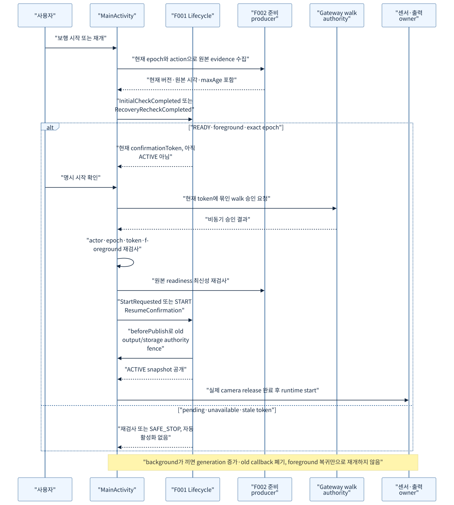

F-D02-002 행동별 준비 증거 집계
| 항목 | 명세 |
|---|---|
| 분야 | D02 보행 세션 생명주기·기기 준비·안전 중단·음성 및 진동 출력·접근성 |
| 목적 | 행동마다 필요한 기능·원본 증거를 모아 준비 상태를 판정한다. |
| 사용 주체 | Main |
| 활성 상태 | ACTIVE |
| 진입점 | apps/android/app/src/main/java/kr/co/hanium/dreamup/walksafe/session/WalkSessionReadiness.kt:48 data class WalkSessionReadinessPlan | WalkSessionReadinessCollector |
| 실행 전제 | 동일 epoch·현재 행동 plan |
| 입력 출처 형식 검증 최신성 | 관찰 상태 READY/PENDING/UNAVAILABLE/NOT_REQUIRED와 sourceVersion, requiredVersion, observedAtElapsedRealtimeMs, maxAgeMs. 원본 시간 보존; 미래/음수/버전 불일치 거절. |
시작 이벤트와 처리 순서
| 이벤트 ID | 발생원 | 이벤트 | 수신부 | 흐름 |
|---|---|---|---|---|
| E-D02-002-01 | Main | START/RESUME/검색/경로/제보 요청 | WalkSessionReadinessCollector | 동일 epoch·현재 행동 plan → plan이 기능별 필수 requirement 집합을 선택 → start/resume는 교육·환경·거치·카메라·위치·모델·gateway·자원·음성 출력을 요구; LIMITED는 metric 제외 → 해당 이벤트 처리를 마치고 현재 스냅샷/결과를 반환한다. |
- plan이 기능별 필수 requirement 집합을 선택
- start/resume는 교육·환경·거치·카메라·위치·모델·gateway·자원·음성 출력을 요구; LIMITED는 metric 제외
- 필수 관찰 누락은 오류, 비필수는 NOT_REQUIRED로 채움
- UNAVAILABLE 우선, 그 다음 PENDING, 전부 충족하면 READY
- 시작 직전과 runtime 변경에서 같은 원본 evidence를 다시 평가
- WalkSessionFeatureReadiness는 disabled camera/location/model을 UNAVAILABLE로 남긴다. disabled를 NOT_REQUIRED로 바꾸는 권한은 없고 plan만 required 집합을 정한다.
- RunningDetectorReadiness는 VERIFIED만 기기 검사 READY, NONE/PENDING은 PENDING, FAILED 또는 sample_inference_unverified로 분리된 detector는 walk entry 차단이다. load 성공만으로 READY 아님.
| 분기 조건 | 실제 처리 결과 | 구현 근거 |
|---|---|---|
| 필수 evidence 버전/age 불일치 | READY로 판정하지 않음 | apps/android/app/src/main/java/kr/co/hanium/dreamup/walksafe/session/WalkSessionReadiness.kt:48 data class WalkSessionReadinessPlan |
| 거리 제한 모드 | metric requirement만 선택 제외 | apps/android/app/src/main/java/kr/co/hanium/dreamup/walksafe/session/WalkSessionReadiness.kt:48 data class WalkSessionReadinessPlan |
| 검색 | first run·route service·gateway 필요 | apps/android/app/src/main/java/kr/co/hanium/dreamup/walksafe/session/WalkSessionReadiness.kt:48 data class WalkSessionReadinessPlan |
| 경로 요청 | first run·location·voice output·route·gateway·resource 필요 | apps/android/app/src/main/java/kr/co/hanium/dreamup/walksafe/session/WalkSessionReadiness.kt:48 data class WalkSessionReadinessPlan |
| 제보 전송 | first run·location·gateway·resource 필요 | apps/android/app/src/main/java/kr/co/hanium/dreamup/walksafe/session/WalkSessionReadiness.kt:48 data class WalkSessionReadinessPlan |
효과 종료와 복구
준비 대기/차단 항목과 안전 중단 안내를 제공
| 상황 | 동작 |
|---|---|
| 정상 완료 | 해당 이벤트 처리를 마치고 현재 스냅샷/결과를 반환한다. |
| 실패 | 분기 표의 실패 결과를 적용하며 성공 상태로 승격하지 않는다. |
| 시간 초과 | 이 기능 자체의 별도 타이머 없음. 입력 증거 만료는 분기 표/정책에 따른다. |
| 중복 입력 | 현재 상태·소유자 검사 결과에 따라 기존 결과 유지 또는 거절한다. |
| 취소 | 독립 취소 API가 없는 판단 함수는 호출자의 세대 무효화로 더 이상 결과를 사용하지 않는다. |
| 중단과 생명주기 | foreground·epoch·owner 조건을 잃은 결과는 재사용하지 않는다. |
| 재시도 | 자동 재시도 없음. 호출자가 명시된 새 이벤트를 전달해야 한다. |
| 복구 | 현재 증거와 소유권을 다시 확보해야 한다. 이전 성공을 소급 복원하지 않는다. |
| 자원 정리 | 순수 정책은 소유하는 외부 리소스가 없다. |
상태 실행 맥락과 연결
| 항목 | 명세 |
|---|---|
| 초기 상태 | NOT_REQUIRED |
| 상태 목록 | S-D02-002-00 NOT_REQUIRED S-D02-002-01 PENDING S-D02-002-02 READY S-D02-002-03 UNAVAILABLE |
| 전이 조건과 전이 동작 | 필수 ready 집합→READY 필수 pending→PENDING 하나의 unavailable→UNAVAILABLE |
| 허용되지 않는 전이 | 필수 관찰 누락을 NOT_REQUIRED로 감추지 않음 |
| 동시성 순서와 작업 소유권 | 순수 집계; 외부 probe 결과를 동기 스냅샷으로 결합. collect 시각으로 원본 측정 나이를 재설정하지 않음. |
| 공유 상태와 다른 기능 연결 | D03 VOICE_INPUT enum은 있지만 현재 readiness plan에 편입되지 않음; microphone은 별도 entry permission으로 제한. D07 metric 제공. D05 RunningDetectorVerification은 exact detector/config/backend/fallback generation으로 검증 token을 발급한다. |
정책 근거와 검증 범위
| 항목 | 근거 |
|---|---|
| 정책 | P-D02-002 |
| 구현 | apps/android/app/src/main/java/kr/co/hanium/dreamup/walksafe/session/WalkSessionReadiness.kt:48 · data class WalkSessionReadinessPlan (범위 48–297)apps/android/app/src/main/java/kr/co/hanium/dreamup/walksafe/session/WalkSessionFeatureReadiness.kt:12 · WalkSessionFeatureReadiness (범위 12–81)apps/android/app/src/main/java/kr/co/hanium/dreamup/walksafe/session/WalkReadinessStopGuidance.kt:8 · walkReadinessStopReasonKo (범위 8–27)apps/android/app/src/main/java/kr/co/hanium/dreamup/walksafe/MainActivity.kt:29929 · private fun captureWalkSessionReadiness (범위 29929–30195)apps/android/app/src/main/java/kr/co/hanium/dreamup/walksafe/device/RunningDetectorReadiness.kt:11 · object RunningDetectorReadiness (범위 11–42) |
| 기존 개선 ID | 개별 동일성 미확인; 분야 연관은 별도 추적표 |
| 기존 분야 | 해당 없음 |
| 기존 실행 증거 | 과거 DONE 또는 개선항목 주석은 이번 실행 증거로 사용하지 않음. 현재 스냅샷 코드와 TEST_EXPECTATION만 기술. |
| 한계 및 구분 | 정적 구현 사실. 외부 Android callback의 실제 도달·청취·기기 안전성은 미검증. |
| 테스트 위치 | 심볼 | 증거 수준 | 기대와 한계 |
|---|---|---|---|
| apps/android/app/src/test/java/kr/co/hanium/dreamup/walksafe/session/WalkSessionReadinessTest.kt | WalkSessionReadinessTest | TEST_EXPECTATION | 행동별 필요조건과 누락 처리; 테스트 선언/관련 기대를 정적으로 확인, 이번 미실행 |
| apps/android/app/src/test/java/kr/co/hanium/dreamup/walksafe/session/WalkSessionReadinessProducerEvidenceTest.kt | WalkSessionReadinessProducerEvidenceTest | TEST_EXPECTATION | producer evidence를 새 collection time으로 바꾸지 않음; 테스트 선언/관련 기대를 정적으로 확인, 이번 미실행 |
이벤트 처리 그림

F-D02-003 권한 묶음 검사와 설정 복귀의 명시 회복
| 항목 | 명세 |
|---|---|
| 분야 | D02 보행 세션 생명주기·기기 준비·안전 중단·음성 및 진동 출력·접근성 |
| 목적 | 권한 변경 후 부분 권한이나 늦은 설정 callback으로 자동 안내가 복원되지 않도록 한다. |
| 사용 주체 | 사용자 Android |
| 활성 상태 | ACTIVE |
| 진입점 | apps/android/app/src/main/java/kr/co/hanium/dreamup/walksafe/session/PermissionSessionPolicy.kt:190 enum class PermissionRecovery | PermissionRecoveryGate apps/android/app/src/main/java/kr/co/hanium/dreamup/walksafe/session/PermissionSessionPolicy.kt:190 enum class PermissionRecovery | MainActivity |
| 실행 전제 | actor hash·gateway session generation·walk epoch·recheck ID가 일치 |
| 입력 출처 형식 검증 최신성 | start 묶음 CAMERA/PRECISE_LOCATION/MICROPHONE, OS 요구 시 ACTIVITY_RECOGNITION; coarse를 precise로 간주하지 않음. |
시작 이벤트와 처리 순서
| 이벤트 ID | 발생원 | 이벤트 | 수신부 | 흐름 |
|---|---|---|---|---|
| E-D02-003-01 | 사용자 | 권한 요청·설정 열기·복귀 후 명시 재개 | PermissionRecoveryGate | actor hash·gateway session generation·walk epoch·recheck ID가 일치 → 현재 실제 권한을 조회하고 request purpose별 lease 발급 → permission result는 lease·actor·epoch를 검사 → 해당 이벤트 처리를 마치고 현재 스냅샷/결과를 반환한다. |
| E-D02-003-02 | Android | permission 결과·foreground 권한 재조회 | MainActivity | actor hash·gateway session generation·walk epoch·recheck ID가 일치 → 현재 실제 권한을 조회하고 request purpose별 lease 발급 → permission result는 lease·actor·epoch를 검사 → 해당 이벤트 처리를 마치고 현재 스냅샷/결과를 반환한다. |
- 현재 실제 권한을 조회하고 request purpose별 lease 발급
- permission result는 lease·actor·epoch를 검사
- CLEAR 이외 회복 상태는 자동 센서 시작을 차단
- 설정 복귀는 FULL recheck; 권한이 모두 있어도 AWAITING_EXPLICIT_RESUME
- 명시 재개 시 실제 권한과 binding을 다시 조회
| 분기 조건 | 실제 처리 결과 | 구현 근거 |
|---|---|---|
| camera 해제 | camera guidance·metric·report 전송 차단 | apps/android/app/src/main/java/kr/co/hanium/dreamup/walksafe/session/PermissionSessionPolicy.kt:190 enum class PermissionRecovery |
| precise location 해제 | navigation·report 전송 차단 | apps/android/app/src/main/java/kr/co/hanium/dreamup/walksafe/session/PermissionSessionPolicy.kt:190 enum class PermissionRecovery |
| mic/활동권한 해제 | 각 음성 입력/step 기능 차단 | apps/android/app/src/main/java/kr/co/hanium/dreamup/walksafe/session/PermissionSessionPolicy.kt:190 enum class PermissionRecovery |
| camera와 precise 모두 없음 | whole walk safety stop | apps/android/app/src/main/java/kr/co/hanium/dreamup/walksafe/session/PermissionSessionPolicy.kt:190 enum class PermissionRecovery |
| Main ACTIVE readiness가 camera/location 필수 실패 | 개별 기능 차단 외 세션 SAFE_STOP도 가능 | apps/android/app/src/main/java/kr/co/hanium/dreamup/walksafe/session/PermissionSessionPolicy.kt:190 enum class PermissionRecovery |
| late callback binding 다름 | 새 recheck 요구; grant 성공 반영 금지 | apps/android/app/src/main/java/kr/co/hanium/dreamup/walksafe/session/PermissionSessionPolicy.kt:190 enum class PermissionRecovery |
효과 종료와 복구
권한 설명·설정 유도·명시 재개 화면 및 종속 기능 중단
| 상황 | 동작 |
|---|---|
| 정상 완료 | 해당 이벤트 처리를 마치고 현재 스냅샷/결과를 반환한다. |
| 실패 | 분기 표의 실패 결과를 적용하며 성공 상태로 승격하지 않는다. |
| 시간 초과 | 이 기능 자체의 별도 타이머 없음. 입력 증거 만료는 분기 표/정책에 따른다. |
| 중복 입력 | 현재 상태·소유자 검사 결과에 따라 기존 결과 유지 또는 거절한다. |
| 취소 | 거절/권한창 취소는 ready로 간주하지 않음. |
| 중단과 생명주기 | 일반 background는 pending 소유권 무효화; 기기 검사 자신이 연 permission dialog 예외는 F-D02-005. |
| 재시도 | 자동 재시도 없음. 호출자가 명시된 새 이벤트를 전달해야 한다. |
| 복구 | full recheck→explicit acknowledgement; 설정 복귀만으로 ACTIVE 금지. |
| 자원 정리 | 순수 정책은 소유하는 외부 리소스가 없다. |
상태 실행 맥락과 연결
| 항목 | 명세 |
|---|---|
| 초기 상태 | CLEAR |
| 상태 목록 | S-D02-003-00 CLEAR S-D02-003-01 REQUEST_PENDING S-D02-003-02 BLOCKED S-D02-003-03 SETTINGS_PENDING S-D02-003-04 RECHECK_REQUIRED S-D02-003-05 AWAITING_EXPLICIT_RESUME |
| 전이 조건과 전이 동작 | request→pending missing→blocked settings return→recheck all present→await explicit current explicit→clear |
| 허용되지 않는 전이 | 권한 grant는 동의·교육·gateway·센서 품질을 대신하지 않음 |
| 동시성 순서와 작업 소유권 | Main UI callback + permission request generation; 오래된 결과는 현재 gate를 해제하지 못함. |
| 공유 상태와 다른 기능 연결 | D01 permission 설명·consent와 독립. D03 mic, D04 location/step, D05 camera. |
정책 근거와 검증 범위
| 항목 | 근거 |
|---|---|
| 정책 | P-D02-003 |
| 구현 | apps/android/app/src/main/java/kr/co/hanium/dreamup/walksafe/session/PermissionSessionPolicy.kt:190 · enum class PermissionRecovery (범위 190–352)apps/android/app/src/main/java/kr/co/hanium/dreamup/walksafe/MainActivity.kt:32749 · private fun applyObservedPermissionStateChange (범위 32749–32841) |
| 기존 개선 ID | 개별 동일성 미확인; 분야 연관은 별도 추적표 |
| 기존 분야 | 해당 없음 |
| 기존 실행 증거 | 과거 DONE 또는 개선항목 주석은 이번 실행 증거로 사용하지 않음. 현재 스냅샷 코드와 TEST_EXPECTATION만 기술. |
| 한계 및 구분 | 정적 구현 사실. 외부 Android callback의 실제 도달·청취·기기 안전성은 미검증. |
| 테스트 위치 | 심볼 | 증거 수준 | 기대와 한계 |
|---|---|---|---|
| apps/android/app/src/test/java/kr/co/hanium/dreamup/walksafe/session/PermissionSessionPolicyTest.kt | PermissionSessionPolicyTest | TEST_EXPECTATION | 설정 full recheck와 explicit acknowledgement 및 종속 기능 제한; 테스트 선언/관련 기대를 정적으로 확인, 이번 미실행 |
이벤트 처리 그림

F-D02-004 Android 시작 능력과 승인 기기 프로필
| 항목 | 명세 |
|---|---|
| 분야 | D02 보행 세션 생명주기·기기 준비·안전 중단·음성 및 진동 출력·접근성 |
| 목적 | 사용 가능한 기능을 FULL/LIMITED/PENDING/BLOCKED로 구분한다. |
| 사용 주체 | startup probe |
| 활성 상태 | ACTIVE |
| 진입점 | apps/android/app/src/main/java/kr/co/hanium/dreamup/walksafe/device/WalkSafeStartupCapability.kt:100 object WalkSafeStartupCapability | WalkSafeStartupCapabilityResolver |
| 실행 전제 | Android 기능 조회 가능, 앱 생명주기 probe가 닫히지 않음 |
| 입력 출처 형식 검증 최신성 | Android SDK, GPS/camera/microphone/vibrator hardware, bundled offline STT asset, 한국어 offline 실제 synthesis 결과. ARCore metadata 지원은 depth true의 증거가 아님. |
시작 이벤트와 처리 순서
| 이벤트 ID | 발생원 | 이벤트 | 수신부 | 흐름 |
|---|---|---|---|---|
| E-D02-004-01 | startup probe | hardware·STT·TTS·ARCore 결과 | WalkSafeStartupCapabilityResolver | Android 기능 조회 가능, 앱 생명주기 probe가 닫히지 않음 → hardware·OS는 즉시 조사, ARCore·TTS는 비동기 수집 → Android<31 또는 한국어 TTS unavailable이면 block → 해당 이벤트 처리를 마치고 현재 스냅샷/결과를 반환한다. |
- hardware·OS는 즉시 조사, ARCore·TTS는 비동기 수집
- Android<31 또는 한국어 TTS unavailable이면 block
- pending 필수값은 pending; camera/GPS/mic/STT 실패는 block
- metric만 unavailable이면 LIMITED; vibration은 필수 시작 조건에서 제외
- ApprovedDeviceProfiles는 production 지정 기기 미등록; Main은 approvedDeviceProfileRequired=false를 명시
| 분기 조건 | 실제 처리 결과 | 구현 근거 |
|---|---|---|
| ARCore explicitly unsupported | metric false | apps/android/app/src/main/java/kr/co/hanium/dreamup/walksafe/device/WalkSafeStartupCapability.kt:100 object WalkSafeStartupCapability |
| ARCore supported/미확정 metadata | metric null; 별도 지원 검사 필요 | apps/android/app/src/main/java/kr/co/hanium/dreamup/walksafe/device/WalkSafeStartupCapability.kt:100 object WalkSafeStartupCapability |
| offline TTS 실패와 다른 pending 동시 | TTS 실패가 우선 BLOCKED | apps/android/app/src/main/java/kr/co/hanium/dreamup/walksafe/device/WalkSafeStartupCapability.kt:100 object WalkSafeStartupCapability |
| DEBUG guidance bypass | 별도 개발 제한 우회 표시, 실측 성공 의미 없음 | apps/android/app/src/main/java/kr/co/hanium/dreamup/walksafe/device/WalkSafeStartupCapability.kt:100 object WalkSafeStartupCapability |
효과 종료와 복구
시작 제한 이유·거리 제한 안내·진동 훈련 가능 여부 제공
| 상황 | 동작 |
|---|---|
| 정상 완료 | 해당 이벤트 처리를 마치고 현재 스냅샷/결과를 반환한다. |
| 실패 | 분기 표의 실패 결과를 적용하며 성공 상태로 승격하지 않는다. |
| 시간 초과 | 이 기능 자체의 별도 타이머 없음. 입력 증거 만료는 분기 표/정책에 따른다. |
| 중복 입력 | 현재 상태·소유자 검사 결과에 따라 기존 결과 유지 또는 거절한다. |
| 취소 | 독립 취소 API가 없는 판단 함수는 호출자의 세대 무효화로 더 이상 결과를 사용하지 않는다. |
| 중단과 생명주기 | foreground·epoch·owner 조건을 잃은 결과는 재사용하지 않는다. |
| 재시도 | 자동 재시도 없음. 호출자가 명시된 새 이벤트를 전달해야 한다. |
| 복구 | fresh probe로 실제 재확인; 닫힌 probe를 재사용하지 않음. |
| 자원 정리 | probe.close는 generation fence와 TTS probe close; late callback 무시. |
상태 실행 맥락과 연결
| 항목 | 명세 |
|---|---|
| 초기 상태 | PENDING |
| 상태 목록 | S-D02-004-00 PENDING S-D02-004-01 FULL S-D02-004-02 LIMITED S-D02-004-03 BLOCKED |
| 전이 조건과 전이 동작 | 필수 전부 충족→FULL metric만 없음→LIMITED 필수 미정→PENDING 핵심 없음→BLOCKED |
| 허용되지 않는 전이 | Main 기기 프로필 gate 명시 비활성; production profile 승인 주장 금지 |
| 동시성 순서와 작업 소유권 | probe 동기 snapshot+비동기 ARCore/TTS callback, generation/closed 상태 검사. |
| 공유 상태와 다른 기능 연결 | D03 Vosk/KoreanOfflineTtsVoice, F-D02-007 TTS 측정, F-D02-016 API 지원 검사. |
정책 근거와 검증 범위
| 항목 | 근거 |
|---|---|
| 정책 | P-D02-004 |
| 구현 | apps/android/app/src/main/java/kr/co/hanium/dreamup/walksafe/device/WalkSafeStartupCapability.kt:100 · object WalkSafeStartupCapability (범위 100–218)apps/android/app/src/main/java/kr/co/hanium/dreamup/walksafe/device/AndroidStartupCapabilityProbe.kt:15 · AndroidStartupCapabilityProbe (범위 15–287)apps/android/app/src/main/java/kr/co/hanium/dreamup/walksafe/device/ApprovedDeviceProfile.kt:12 · ApprovedDeviceProfile (범위 12–113)apps/android/app/src/main/java/kr/co/hanium/dreamup/walksafe/device/DeviceGate.kt:3 · DeviceGate (범위 3–68)apps/android/app/src/main/java/kr/co/hanium/dreamup/walksafe/MainActivity.kt:27721 · private fun resolveCurrentStartupCapabilityDecision (범위 27721–27768) |
| 기존 개선 ID | 개별 동일성 미확인; 분야 연관은 별도 추적표 |
| 기존 분야 | 해당 없음 |
| 기존 실행 증거 | 과거 DONE 또는 개선항목 주석은 이번 실행 증거로 사용하지 않음. 현재 스냅샷 코드와 TEST_EXPECTATION만 기술. |
| 한계 및 구분 | 정적 구현 사실. 외부 Android callback의 실제 도달·청취·기기 안전성은 미검증. |
| 테스트 위치 | 심볼 | 증거 수준 | 기대와 한계 |
|---|---|---|---|
| apps/android/app/src/test/java/kr/co/hanium/dreamup/walksafe/device/WalkSafeStartupCapabilityTest.kt | WalkSafeStartupCapabilityTest | TEST_EXPECTATION | vibration 제외·unknown fail closed·명시 install 검사로 static registry gate 대체; 테스트 선언/관련 기대를 정적으로 확인, 이번 미실행 |
이벤트 처리 그림

F-D02-005 로그인 후 사용자 시작 기기 검사
| 항목 | 명세 |
|---|---|
| 분야 | D02 보행 세션 생명주기·기기 준비·안전 중단·음성 및 진동 출력·접근성 |
| 목적 | 검사 수행을 현재 로그인·foreground·시도에 묶고 지원하지 않는 기능만 제한한다. |
| 사용 주체 | 사용자 probe |
| 활성 상태 | ACTIVE |
| 진입점 | apps/android/app/src/main/java/kr/co/hanium/dreamup/walksafe/device/PostLoginDeviceCheckPolicy.kt:3 class PostLoginDeviceCheck | PostLoginDeviceCheckPolicy.begin apps/android/app/src/main/java/kr/co/hanium/dreamup/walksafe/device/PostLoginDeviceCheckPolicy.kt:3 class PostLoginDeviceCheck | observe/timeout/background |
| 실행 전제 | 로그인된 actor/session binding·foreground; 사용자 이벤트만 시작 |
| 입력 출처 형식 검증 최신성 | attemptId 단조 증가와 expected stage. missing permission, blocking failure, wake phrase recognition은 terminal 판단; location fix와 haptic 확인은 완료 필수 아님. |
시작 이벤트와 처리 순서
| 이벤트 ID | 발생원 | 이벤트 | 수신부 | 흐름 |
|---|---|---|---|---|
| E-D02-005-01 | 사용자 | 기기 점검 버튼 | PostLoginDeviceCheckPolicy.begin | 로그인된 actor/session binding·foreground; 사용자 이벤트만 시작 → 새 startup probe를 stage publication보다 먼저 준비 → REQUESTING_PERMISSIONS 뒤 RUNNING에서 독립 probe 결과 수집 → terminal FULL/LIMITED/FAIL은 late probe가 다시 쓰지 못함. |
| E-D02-005-02 | probe | permission/camera/depth/location/STT/wake/TTS 완료 | observe/timeout/background | 로그인된 actor/session binding·foreground; 사용자 이벤트만 시작 → 새 startup probe를 stage publication보다 먼저 준비 → REQUESTING_PERMISSIONS 뒤 RUNNING에서 독립 probe 결과 수집 → terminal FULL/LIMITED/FAIL은 late probe가 다시 쓰지 못함. |
- 새 startup probe를 stage publication보다 먼저 준비
- REQUESTING_PERMISSIONS 뒤 RUNNING에서 독립 probe 결과 수집
- known blocking failure/권한 unavailable/wake recognition unavailable은 FAIL
- automatic probe pending이면 RUNNING 유지
- disabledFeatures 비어 있으면 FULL, 있으면 LIMITED; 저장 commit 뒤 교육/home 진행
| 분기 조건 | 실제 처리 결과 | 구현 근거 |
|---|---|---|
| NOT_RUN/FAIL에서 명시 요청 | 새 attempt | apps/android/app/src/main/java/kr/co/hanium/dreamup/walksafe/device/PostLoginDeviceCheckPolicy.kt:3 class PostLoginDeviceCheck |
| REQUESTING/RUNNING/FULL/LIMITED 중 중복 | 재시작 안 함 | apps/android/app/src/main/java/kr/co/hanium/dreamup/walksafe/device/PostLoginDeviceCheckPolicy.kt:3 class PostLoginDeviceCheck |
| 일반 background | 현재 시도 FAIL | apps/android/app/src/main/java/kr/co/hanium/dreamup/walksafe/device/PostLoginDeviceCheckPolicy.kt:3 class PostLoginDeviceCheck |
| 자기 permission dialog로 잠시 background | 소유 lease 동안 검사 보존 | apps/android/app/src/main/java/kr/co/hanium/dreamup/walksafe/device/PostLoginDeviceCheckPolicy.kt:3 class PostLoginDeviceCheck |
| stale attempt/session/stage callback | 무시 | apps/android/app/src/main/java/kr/co/hanium/dreamup/walksafe/device/PostLoginDeviceCheckPolicy.kt:3 class PostLoginDeviceCheck |
| locationFix/haptic 미확정 | 그 이유만으로 완료 대기하지 않음 | apps/android/app/src/main/java/kr/co/hanium/dreamup/walksafe/device/PostLoginDeviceCheckPolicy.kt:3 class PostLoginDeviceCheck |
효과 종료와 복구
검사 진행·FULL/LIMITED/FAIL와 정확한 disabled feature 목록; 180초 watchdog
| 상황 | 동작 |
|---|---|
| 정상 완료 | terminal FULL/LIMITED/FAIL은 late probe가 다시 쓰지 못함. |
| 실패 | 분기 표의 실패 결과를 적용하며 성공 상태로 승격하지 않는다. |
| 시간 초과 | 현재 foreground RUNNING attempt만 180000ms에 FAIL. |
| 중복 입력 | 현재 상태·소유자 검사 결과에 따라 기존 결과 유지 또는 거절한다. |
| 취소 | 독립 취소 API가 없는 판단 함수는 호출자의 세대 무효화로 더 이상 결과를 사용하지 않는다. |
| 중단과 생명주기 | foreground·epoch·owner 조건을 잃은 결과는 재사용하지 않는다. |
| 재시도 | FAIL 뒤 사용자 재검사; 자동 시작 없음. |
| 복구 | 현재 증거와 소유권을 다시 확보해야 한다. 이전 성공을 소급 복원하지 않는다. |
| 자원 정리 | 시도 취소 시 callback lease·camera/depth/wake/TTS 검사 자원 종료. |
상태 실행 맥락과 연결
| 항목 | 명세 |
|---|---|
| 초기 상태 | NOT_RUN |
| 상태 목록 | S-D02-005-00 NOT_RUN S-D02-005-01 REQUESTING_PERMISSIONS S-D02-005-02 RUNNING S-D02-005-03 FULL S-D02-005-04 LIMITED S-D02-005-05 FAIL |
| 전이 조건과 전이 동작 | user→permission→running complete emptydisabled→full complete disabled→limited blocking/timeout/background→fail |
| 허용되지 않는 전이 | vibration/실제 location fix 확인은 이 완료 gate에서 제외 |
| 동시성 순서와 작업 소유권 | Main UI thread로 probe 게시; binding+attempt+firstRun lease+foreground로 늦은 완료를 차단. |
| 공유 상태와 다른 기능 연결 | D01 onboarding 다음 단계, D03 wake phrase 실제 인식, D05 camera detector. |
정책 근거와 검증 범위
| 항목 | 근거 |
|---|---|
| 정책 | P-D02-005 |
| 구현 | apps/android/app/src/main/java/kr/co/hanium/dreamup/walksafe/device/PostLoginDeviceCheckPolicy.kt:3 · class PostLoginDeviceCheck (범위 3–292)apps/android/app/src/main/java/kr/co/hanium/dreamup/walksafe/MainActivity.kt:22795 · private fun beginPostLoginDeviceCheck (범위 22795–22857) |
| 기존 개선 ID | 개별 동일성 미확인; 분야 연관은 별도 추적표 |
| 기존 분야 | 해당 없음 |
| 기존 실행 증거 | 과거 DONE 또는 개선항목 주석은 이번 실행 증거로 사용하지 않음. 현재 스냅샷 코드와 TEST_EXPECTATION만 기술. |
| 한계 및 구분 | 정적 구현 사실. 외부 Android callback의 실제 도달·청취·기기 안전성은 미검증. |
| 테스트 위치 | 심볼 | 증거 수준 | 기대와 한계 |
|---|---|---|---|
| apps/android/app/src/test/java/kr/co/hanium/dreamup/walksafe/device/PostLoginDeviceCheckPolicyTest.kt | PostLoginDeviceCheckPolicyTest | TEST_EXPECTATION | 사용자 시작·late callback·permission dialog 예외·location/haptic 비차단; 테스트 선언/관련 기대를 정적으로 확인, 이번 미실행 |
이벤트 처리 그림


F-D02-006 기기 검사 결과 정규 저장과 복원
| 항목 | 명세 |
|---|---|
| 분야 | D02 보행 세션 생명주기·기기 준비·안전 중단·음성 및 진동 출력·접근성 |
| 목적 | 검사 결과를 actor/설치/앱·OS·정책 버전에 묶어 재사용하되 현재 권한 판정과 분리한다. |
| 사용 주체 | Main |
| 활성 상태 | ACTIVE |
| 진입점 | apps/android/app/src/main/java/kr/co/hanium/dreamup/walksafe/device/AndroidDeviceCheckResultStore.kt:44 class AndroidDeviceCheckResultStore | save/restore |
| 실행 전제 | FULL 또는 LIMITED의 내부 일관된 snapshot |
| 입력 출처 형식 검증 최신성 | SHA-256 binding: actor/install/device/OS/app source/probe/environment/approved registry. mutable runtime permission/location disclosure/TTS/STT fields는 struct에 있지만 digest에 포함 안 됨. |
시작 이벤트와 처리 순서
| 이벤트 ID | 발생원 | 이벤트 | 수신부 | 흐름 |
|---|---|---|---|---|
| E-D02-006-01 | Main | terminal 검사 저장·앱 재진입 복원 | save/restore | FULL 또는 LIMITED의 내부 일관된 snapshot → FULL은 disabled empty, LIMITED는 nonempty인지 검사 → disabled features를 unique sorted canonical CSV로 직렬화 → 해당 이벤트 처리를 마치고 현재 스냅샷/결과를 반환한다. |
- FULL은 disabled empty, LIMITED는 nonempty인지 검사
- disabled features를 unique sorted canonical CSV로 직렬화
- 전체 레코드를 synchronous commit; 실패한 binding은 메모리 fence에 등록
- restore는 정책·binding·tier·canonical CSV·deferred camera 일관성 검사
- legacy depth 결과는 selective refresh 요청; 현재 지원 정책 결과만 최신으로 취급
| 분기 조건 | 실제 처리 결과 | 구현 근거 |
|---|---|---|
| commit false | 완료 교육 gate를 열지 않고 같은 프로세스 memory restore도 차단 | apps/android/app/src/main/java/kr/co/hanium/dreamup/walksafe/device/AndroidDeviceCheckResultStore.kt:44 class AndroidDeviceCheckResultStore |
| wrong actor/install/app/OS/profile | 복원 거절 | apps/android/app/src/main/java/kr/co/hanium/dreamup/walksafe/device/AndroidDeviceCheckResultStore.kt:44 class AndroidDeviceCheckResultStore |
| mutable 권한 변경 | 측정 결과 자체 보존; 별도 runtime permission gate가 현재 사용 제한 | apps/android/app/src/main/java/kr/co/hanium/dreamup/walksafe/device/AndroidDeviceCheckResultStore.kt:44 class AndroidDeviceCheckResultStore |
| camera deferred + obstacle disabled | 모순 레코드 거절 | apps/android/app/src/main/java/kr/co/hanium/dreamup/walksafe/device/AndroidDeviceCheckResultStore.kt:44 class AndroidDeviceCheckResultStore |
효과 종료와 복구
로컬 SharedPreferences 저장; 원문 actor/install 값 대신 digest
| 상황 | 동작 |
|---|---|
| 정상 완료 | 해당 이벤트 처리를 마치고 현재 스냅샷/결과를 반환한다. |
| 실패 | 분기 표의 실패 결과를 적용하며 성공 상태로 승격하지 않는다. |
| 시간 초과 | 이 기능 자체의 별도 타이머 없음. 입력 증거 만료는 분기 표/정책에 따른다. |
| 중복 입력 | 현재 상태·소유자 검사 결과에 따라 기존 결과 유지 또는 거절한다. |
| 취소 | 독립 취소 API가 없는 판단 함수는 호출자의 세대 무효화로 더 이상 결과를 사용하지 않는다. |
| 중단과 생명주기 | foreground·epoch·owner 조건을 잃은 결과는 재사용하지 않는다. |
| 재시도 | 실패 뒤 명시 재검사/저장 성공은 failed commit fence 해제. |
| 복구 | 현재 증거와 소유권을 다시 확보해야 한다. 이전 성공을 소급 복원하지 않는다. |
| 자원 정리 | 순수 prefs record 관리; 실제 센서/권한 복원하지 않음. |
상태 실행 맥락과 연결
| 항목 | 명세 |
|---|---|
| 초기 상태 | 없음/invalid |
| 상태 목록 | S-D02-006-00 없음/invalid S-D02-006-01 FULL S-D02-006-02 LIMITED S-D02-006-03 needs depth refresh S-D02-006-04 commit failed fence |
| 전이 조건과 전이 동작 | valid terminal→commit→restorable binding drift→invalid old depth policy→refresh |
| 허용되지 않는 전이 | 기기 검사 저장이 현재 권한·센서 evidence를 저장하거나 활성화하지 않음 |
| 동시성 순서와 작업 소유권 | 동기 commit으로 durable 결과 확인; prefs 메모리 갱신만으로 저장 성공 간주하지 않음. |
| 공유 상태와 다른 기능 연결 | F-D02-003 현재 permission과 F-D02-016 Depth support selective refresh; D01 완료 gate. |
정책 근거와 검증 범위
| 항목 | 근거 |
|---|---|
| 정책 | P-D02-006 |
| 구현 | apps/android/app/src/main/java/kr/co/hanium/dreamup/walksafe/device/AndroidDeviceCheckResultStore.kt:44 · class AndroidDeviceCheckResultStore (범위 44–242) |
| 기존 개선 ID | 개별 동일성 미확인; 분야 연관은 별도 추적표 |
| 기존 분야 | 해당 없음 |
| 기존 실행 증거 | 과거 DONE 또는 개선항목 주석은 이번 실행 증거로 사용하지 않음. 현재 스냅샷 코드와 TEST_EXPECTATION만 기술. |
| 한계 및 구분 | 정적 구현 사실. 외부 Android callback의 실제 도달·청취·기기 안전성은 미검증. |
| 테스트 위치 | 심볼 | 증거 수준 | 기대와 한계 |
|---|---|---|---|
| apps/android/app/src/test/java/kr/co/hanium/dreamup/walksafe/device/AndroidDeviceCheckResultStoreTest.kt | AndroidDeviceCheckResultStoreTest | TEST_EXPECTATION | commit 실패 fence, canonical CSV, mutable prerequisite 변경 보존; 테스트 선언/관련 기대를 정적으로 확인, 이번 미실행 |
이벤트 처리 그림

F-D02-007 한국어 오프라인 TTS 실제 파일 합성 검사
| 항목 | 명세 |
|---|---|
| 분야 | D02 보행 세션 생명주기·기기 준비·안전 중단·음성 및 진동 출력·접근성 |
| 목적 | 음성 지원 metadata만으로 ready 처리하지 않고 offline Korean voice의 PCM 생성 여부를 확인한다. |
| 사용 주체 | startup TTS engine |
| 활성 상태 | ACTIVE |
| 진입점 | apps/android/app/src/main/java/kr/co/hanium/dreamup/walksafe/device/AndroidKoreanTextToSpeechSynthesisProbe.kt:59 class AndroidKoreanTextToSpeechSynthesisProbe | AndroidKoreanTextToSpeechSynthesisProbe apps/android/app/src/main/java/kr/co/hanium/dreamup/walksafe/device/AndroidKoreanTextToSpeechSynthesisProbe.kt:59 class AndroidKoreanTextToSpeechSynthesisProbe | probe callbacks |
| 실행 전제 | 현재 one-shot probe, installed Korean nonnetwork voice |
| 입력 출처 형식 검증 최신성 | exact utterance ID; WAV RIFF/PCM 구조·헤더·실제 data 길이·정수 PCM·완전한 파일·계산 duration >=1000ms. |
시작 이벤트와 처리 순서
| 이벤트 ID | 발생원 | 이벤트 | 수신부 | 흐름 |
|---|---|---|---|---|
| E-D02-007-01 | startup | probe.start | AndroidKoreanTextToSpeechSynthesisProbe | 현재 one-shot probe, installed Korean nonnetwork voice → engine 초기화·listener 등록·오프라인 한국어 voice 선택 → 임시 WAV에 합성 요청 → 해당 이벤트 처리를 마치고 현재 스냅샷/결과를 반환한다. |
| E-D02-007-02 | TTS engine | init/onDone/onError/onStop | probe callbacks | 현재 one-shot probe, installed Korean nonnetwork voice → engine 초기화·listener 등록·오프라인 한국어 voice 선택 → 임시 WAV에 합성 요청 → 해당 이벤트 처리를 마치고 현재 스냅샷/결과를 반환한다. |
- engine 초기화·listener 등록·오프라인 한국어 voice 선택
- 임시 WAV에 합성 요청
- 현재 utterance onDone 뒤 WAV 구조와 길이 검사
- terminal을 단 한 번 획득하고 engine/timeout/temp file을 정리한 뒤 결과 callback
| 분기 조건 | 실제 처리 결과 | 구현 근거 |
|---|---|---|
| 정상 PCM duration>=1000 | AVAILABLE | apps/android/app/src/main/java/kr/co/hanium/dreamup/walksafe/device/AndroidKoreanTextToSpeechSynthesisProbe.kt:59 class AndroidKoreanTextToSpeechSynthesisProbe |
| 언어/voice/init/listener/synthesis/file 오류 | UNAVAILABLE | apps/android/app/src/main/java/kr/co/hanium/dreamup/walksafe/device/AndroidKoreanTextToSpeechSynthesisProbe.kt:59 class AndroidKoreanTextToSpeechSynthesisProbe |
| 잘못된 utterance 또는 terminal 이후 callback | 무시 | apps/android/app/src/main/java/kr/co/hanium/dreamup/walksafe/device/AndroidKoreanTextToSpeechSynthesisProbe.kt:59 class AndroidKoreanTextToSpeechSynthesisProbe |
| 10000ms 경과 또는 취소 | UNAVAILABLE; late success 불가 | apps/android/app/src/main/java/kr/co/hanium/dreamup/walksafe/device/AndroidKoreanTextToSpeechSynthesisProbe.kt:59 class AndroidKoreanTextToSpeechSynthesisProbe |
효과 종료와 복구
startup 음성 capability 결과; 검사 파일은 정리하며 실제 사용자 청취 성공을 주장하지 않음
| 상황 | 동작 |
|---|---|
| 정상 완료 | 해당 이벤트 처리를 마치고 현재 스냅샷/결과를 반환한다. |
| 실패 | 분기 표의 실패 결과를 적용하며 성공 상태로 승격하지 않는다. |
| 시간 초과 | 10000ms one-shot deadline. |
| 중복 입력 | 현재 상태·소유자 검사 결과에 따라 기존 결과 유지 또는 거절한다. |
| 취소 | cancel/close는 terminal fail closed이며 멱등. |
| 중단과 생명주기 | foreground·epoch·owner 조건을 잃은 결과는 재사용하지 않는다. |
| 재시도 | 같은 probe 재시작 없음; 새 probe 생성. |
| 복구 | 현재 증거와 소유권을 다시 확보해야 한다. 이전 성공을 소급 복원하지 않는다. |
| 자원 정리 | timer cancel→engine stop/shutdown→임시 파일 삭제 후 callback. |
상태 실행 맥락과 연결
| 항목 | 명세 |
|---|---|
| 초기 상태 | IDLE |
| 상태 목록 | S-D02-007-00 IDLE S-D02-007-01 RUNNING S-D02-007-02 TERMINAL S-D02-007-03 CLOSED |
| 전이 조건과 전이 동작 | start→running done+validwav→terminal available error/timeout/cancel→terminal unavailable close→closed |
| 허용되지 않는 전이 | 파일 합성은 스피커 가청성·언어 이해도·보행 중 전달 검증 아님 |
| 동시성 순서와 작업 소유권 | atomic IDLE/RUNNING/TERMINAL/CLOSED 소유권; callback generation과 utterance equality; 정리 예외는 실패 성공으로 바꾸지 않음. |
| 공유 상태와 다른 기능 연결 | D03 offline voice 선택 helper. F-D02-024 실제 출력 엔진과 독립 검사. |
정책 근거와 검증 범위
| 항목 | 근거 |
|---|---|
| 정책 | P-D02-007 |
| 구현 | apps/android/app/src/main/java/kr/co/hanium/dreamup/walksafe/device/AndroidKoreanTextToSpeechSynthesisProbe.kt:59 · class AndroidKoreanTextToSpeechSynthesisProbe (범위 59–499)apps/android/app/src/main/java/kr/co/hanium/dreamup/walksafe/device/KoreanTtsOutputDurationPolicy.kt:14 · KoreanTtsOutputDurationPolicy (범위 14–105) |
| 기존 개선 ID | 개별 동일성 미확인; 분야 연관은 별도 추적표 |
| 기존 분야 | 해당 없음 |
| 기존 실행 증거 | 과거 DONE 또는 개선항목 주석은 이번 실행 증거로 사용하지 않음. 현재 스냅샷 코드와 TEST_EXPECTATION만 기술. |
| 한계 및 구분 | 정적 구현 사실. 외부 Android callback의 실제 도달·청취·기기 안전성은 미검증. |
| 테스트 위치 | 심볼 | 증거 수준 | 기대와 한계 |
|---|---|---|---|
| apps/android/app/src/test/java/kr/co/hanium/dreamup/walksafe/device/AndroidKoreanTextToSpeechSynthesisProbeTest.kt | AndroidKoreanTextToSpeechSynthesisProbeTest | TEST_EXPECTATION | 1초 PCM·잘못된 ID·late success·cancel 처리; 테스트 선언/관련 기대를 정적으로 확인, 이번 미실행 |
이벤트 처리 그림

F-D02-008 기기 검사 카메라 샘플과 실제 detector 실행
| 항목 | 명세 |
|---|---|
| 분야 | D02 보행 세션 생명주기·기기 준비·안전 중단·음성 및 진동 출력·접근성 |
| 목적 | 카메라 입력·추론 실행 여부를 검증하며 검출 정확도와 구분한다. |
| 사용 주체 | camera analyzer |
| 활성 상태 | ACTIVE |
| 진입점 | apps/android/app/src/main/java/kr/co/hanium/dreamup/walksafe/device/DeviceCheckCameraSamplingPolicy.kt:14 object DeviceCheckCameraSamplingPolicy | DeviceCheckCameraSamplingPolicy |
| 실행 전제 | 현재 검사 lease·camera permission·정상 analyzer |
| 입력 출처 형식 검증 최신성 | 완료 inference status, not partial, completed model names, total/preprocess/inference/decode timing. fused 전략은 실제 completed 모델별 preprocessing+inference 쌍 필요; 알 수 없는/중복/빈 모델 이름 거절. |
시작 이벤트와 처리 순서
| 이벤트 ID | 발생원 | 이벤트 | 수신부 | 흐름 |
|---|---|---|---|---|
| E-D02-008-01 | camera analyzer | 검사 프레임 완료 | DeviceCheckCameraSamplingPolicy | 현재 검사 lease·camera permission·정상 analyzer → frame quality admission이 허용된 프레임만 detector에 전달 → 실제 final inference 결과인지 검사 → 해당 이벤트 처리를 마치고 현재 스냅샷/결과를 반환한다. |
- frame quality admission이 허용된 프레임만 detector에 전달
- 실제 final inference 결과인지 검사
- 성공/실패 sample count 누적
- 8 success 또는 3 failure로 조기 종료; 최대10 sample에서 판단
| 분기 조건 | 실제 처리 결과 | 구현 근거 |
|---|---|---|
| 빈 detections이나 완전한 실행 | 성공 sample: 정확도 pass는 아님 | apps/android/app/src/main/java/kr/co/hanium/dreamup/walksafe/device/DeviceCheckCameraSamplingPolicy.kt:14 object DeviceCheckCameraSamplingPolicy |
| noop/partial/시간 누락/failed | 실패 sample | apps/android/app/src/main/java/kr/co/hanium/dreamup/walksafe/device/DeviceCheckCameraSamplingPolicy.kt:14 object DeviceCheckCameraSamplingPolicy |
| fused 전략 known model timing 대응 | decode 대신 허용된 fused 계약으로 판단 | apps/android/app/src/main/java/kr/co/hanium/dreamup/walksafe/device/DeviceCheckCameraSamplingPolicy.kt:14 object DeviceCheckCameraSamplingPolicy |
| preflight 품질 PASS 아님 | detector 호출 제한 | apps/android/app/src/main/java/kr/co/hanium/dreamup/walksafe/device/DeviceCheckCameraSamplingPolicy.kt:14 object DeviceCheckCameraSamplingPolicy |
효과 종료와 복구
카메라 장애물 기능 지원 결과·진단 sample count
| 상황 | 동작 |
|---|---|
| 정상 완료 | 해당 이벤트 처리를 마치고 현재 스냅샷/결과를 반환한다. |
| 실패 | 분기 표의 실패 결과를 적용하며 성공 상태로 승격하지 않는다. |
| 시간 초과 | 이 기능 자체의 별도 타이머 없음. 입력 증거 만료는 분기 표/정책에 따른다. |
| 중복 입력 | 현재 상태·소유자 검사 결과에 따라 기존 결과 유지 또는 거절한다. |
| 취소 | 독립 취소 API가 없는 판단 함수는 호출자의 세대 무효화로 더 이상 결과를 사용하지 않는다. |
| 중단과 생명주기 | foreground·epoch·owner 조건을 잃은 결과는 재사용하지 않는다. |
| 재시도 | 자동 재시도 없음. 호출자가 명시된 새 이벤트를 전달해야 한다. |
| 복구 | 현재 증거와 소유권을 다시 확보해야 한다. 이전 성공을 소급 복원하지 않는다. |
| 자원 정리 | Main analyzer/image owner가 ImageProxy 또는 Image를 닫음; 정책은 이미지 소유하지 않음. |
상태 실행 맥락과 연결
| 항목 | 명세 |
|---|---|
| 초기 상태 | sampling |
| 상태 목록 | S-D02-008-00 sampling S-D02-008-01 passed S-D02-008-02 failed |
| 전이 조건과 전이 동작 | success>=8→pass failure>=3→fail sample>=10→terminal |
| 허용되지 않는 전이 | 0ms timing은 clock resolution상 유효; detection 개수 0은 실행 실패 아님 |
| 동시성 순서와 작업 소유권 | 프레임 callback은 post-login binding/attempt가 현재일 때만 누적. |
| 공유 상태와 다른 기능 연결 | D05 실제 inference 결과 producer. D07 정확도/위험 검증과 별개. |
정책 근거와 검증 범위
| 항목 | 근거 |
|---|---|
| 정책 | P-D02-008 |
| 구현 | apps/android/app/src/main/java/kr/co/hanium/dreamup/walksafe/device/DeviceCheckCameraSamplingPolicy.kt:14 · object DeviceCheckCameraSamplingPolicy (범위 14–32)apps/android/app/src/main/java/kr/co/hanium/dreamup/walksafe/device/DeviceCheckDetectorExecutionPolicy.kt:7 · DeviceCheckDetectorExecutionPolicy (범위 7–43)apps/android/app/src/main/java/kr/co/hanium/dreamup/walksafe/device/CameraDetectorAdmissionPolicy.kt:11 · CameraDetectorAdmissionPolicy (범위 11–36) |
| 기존 개선 ID | 개별 동일성 미확인; 분야 연관은 별도 추적표 |
| 기존 분야 | 해당 없음 |
| 기존 실행 증거 | 과거 DONE 또는 개선항목 주석은 이번 실행 증거로 사용하지 않음. 현재 스냅샷 코드와 TEST_EXPECTATION만 기술. |
| 한계 및 구분 | 정적 구현 사실. 외부 Android callback의 실제 도달·청취·기기 안전성은 미검증. |
| 테스트 위치 | 심볼 | 증거 수준 | 기대와 한계 |
|---|---|---|---|
| apps/android/app/src/test/java/kr/co/hanium/dreamup/walksafe/device/DeviceCheckDetectorExecutionPolicyTest.kt | DeviceCheckDetectorExecutionPolicyTest | TEST_EXPECTATION | empty detections·fused per-model·no-op/partial 거절; 테스트 선언/관련 기대를 정적으로 확인, 이번 미실행 |
이벤트 처리 그림

F-D02-009 기기 검사 위치 품질 선택
| 항목 | 명세 |
|---|---|
| 분야 | D02 보행 세션 생명주기·기기 준비·안전 중단·음성 및 진동 출력·접근성 |
| 목적 | mock·오래된 좌표·부정확한 위치를 기기 검사 통과 근거로 사용하지 않는다. |
| 사용 주체 | location callback |
| 활성 상태 | ACTIVE |
| 진입점 | apps/android/app/src/main/java/kr/co/hanium/dreamup/walksafe/device/DeviceCheckLocationFixPolicy.kt:58 object DeviceCheckLocationFixPolicy | DeviceCheckLocationFixPolicy |
| 실행 전제 | 권한 및 device-check binding은 caller에서 유지 |
| 입력 출처 형식 검증 최신성 | valid lat/lon, isMock false, finite nonnegative accuracy<=15m, age 0..30000ms. receipt 시각으로 원본 fix freshness를 갱신하지 않음. |
시작 이벤트와 처리 순서
| 이벤트 ID | 발생원 | 이벤트 | 수신부 | 흐름 |
|---|---|---|---|---|
| E-D02-009-01 | location callback | 단일 또는 batch fix | DeviceCheckLocationFixPolicy | 권한 및 device-check binding은 caller에서 유지 → batch 내 mock 하나라도 있으면 mock 실패 선택 → mock 없으면 통과 sample 중 가장 최신 선택 → 해당 이벤트 처리를 마치고 현재 스냅샷/결과를 반환한다. |
- batch 내 mock 하나라도 있으면 mock 실패 선택
- mock 없으면 통과 sample 중 가장 최신 선택
- 좌표·accuracy·time 실패를 서로 다른 reason으로 기록
| 분기 조건 | 실제 처리 결과 | 구현 근거 |
|---|---|---|
| mock 하나 이상 | 순서 무관 batch 실패 | apps/android/app/src/main/java/kr/co/hanium/dreamup/walksafe/device/DeviceCheckLocationFixPolicy.kt:58 object DeviceCheckLocationFixPolicy |
| fresh accurate real fix | PASS | apps/android/app/src/main/java/kr/co/hanium/dreamup/walksafe/device/DeviceCheckLocationFixPolicy.kt:58 object DeviceCheckLocationFixPolicy |
| 미래/30초 초과/accuracy 없음·초과 | FAIL 또는 missing reason | apps/android/app/src/main/java/kr/co/hanium/dreamup/walksafe/device/DeviceCheckLocationFixPolicy.kt:58 object DeviceCheckLocationFixPolicy |
효과 종료와 복구
위치 점검 표시용 결과; 현재 device-check terminal gate에서는 location fix가 필수 완료 항목 아님
| 상황 | 동작 |
|---|---|
| 정상 완료 | 해당 이벤트 처리를 마치고 현재 스냅샷/결과를 반환한다. |
| 실패 | 분기 표의 실패 결과를 적용하며 성공 상태로 승격하지 않는다. |
| 시간 초과 | 이 기능 자체의 별도 타이머 없음. 입력 증거 만료는 분기 표/정책에 따른다. |
| 중복 입력 | 현재 상태·소유자 검사 결과에 따라 기존 결과 유지 또는 거절한다. |
| 취소 | 독립 취소 API가 없는 판단 함수는 호출자의 세대 무효화로 더 이상 결과를 사용하지 않는다. |
| 중단과 생명주기 | foreground·epoch·owner 조건을 잃은 결과는 재사용하지 않는다. |
| 재시도 | 자동 재시도 없음. 호출자가 명시된 새 이벤트를 전달해야 한다. |
| 복구 | 현재 증거와 소유권을 다시 확보해야 한다. 이전 성공을 소급 복원하지 않는다. |
| 자원 정리 | 순수 정책은 소유하는 외부 리소스가 없다. |
상태 실행 맥락과 연결
| 항목 | 명세 |
|---|---|
| 초기 상태 | missing |
| 상태 목록 | S-D02-009-00 missing S-D02-009-01 pass S-D02-009-02 fail |
| 전이 조건과 전이 동작 | valid realfix→pass mock/stale/invalid→fail |
| 허용되지 않는 전이 | accuracy는 OS 추정 오차 반경이며 실측 위치 오차 검증 아님 |
| 동시성 순서와 작업 소유권 | 순수 동기 판단; callback freshness는 producer 원본 elapsed time. |
| 공유 상태와 다른 기능 연결 | D04 GPS/trust producer, F-D02-005 check 정책. |
정책 근거와 검증 범위
| 항목 | 근거 |
|---|---|
| 정책 | P-D02-009 |
| 구현 | apps/android/app/src/main/java/kr/co/hanium/dreamup/walksafe/device/DeviceCheckLocationFixPolicy.kt:58 · object DeviceCheckLocationFixPolicy (범위 58–114) |
| 기존 개선 ID | 개별 동일성 미확인; 분야 연관은 별도 추적표 |
| 기존 분야 | 해당 없음 |
| 기존 실행 증거 | 과거 DONE 또는 개선항목 주석은 이번 실행 증거로 사용하지 않음. 현재 스냅샷 코드와 TEST_EXPECTATION만 기술. |
| 한계 및 구분 | 정적 구현 사실. 외부 Android callback의 실제 도달·청취·기기 안전성은 미검증. |
| 테스트 위치 | 심볼 | 증거 수준 | 기대와 한계 |
|---|---|---|---|
| apps/android/app/src/test/java/kr/co/hanium/dreamup/walksafe/device/DeviceCheckLocationFixPolicyTest.kt | DeviceCheckLocationFixPolicyTest | TEST_EXPECTATION | mock batch 우선과 최신 passing sample 선택; 테스트 선언/관련 기대를 정적으로 확인, 이번 미실행 |
이벤트 처리 그림

F-D02-010 배터리·저장공간·열 상태와 관찰 건강도
| 항목 | 명세 |
|---|---|
| 분야 | D02 보행 세션 생명주기·기기 준비·안전 중단·음성 및 진동 출력·접근성 |
| 목적 | 시스템 자원 위험과 관찰 불능을 정상으로 해석하지 않는다. |
| 사용 주체 | Android Main |
| 활성 상태 | ACTIVE |
| 진입점 | apps/android/app/src/main/java/kr/co/hanium/dreamup/walksafe/device/AndroidWalkSessionResourceProbe.kt:341 class AndroidWalkSessionResourceProbe | AndroidWalkSessionResourceProbe apps/android/app/src/main/java/kr/co/hanium/dreamup/walksafe/device/AndroidWalkSessionResourceProbe.kt:341 class AndroidWalkSessionResourceProbe | snapshot |
| 실행 전제 | probe가 close되지 않음; event subscription 실패는 별도 건강도 |
| 입력 출처 형식 검증 최신성 | battery EXTRA_BATTERY_LOW, storage system low 및 private dir writable, thermal status, optional raw level/current/status와 각각 측정·조회 시각. raw 배터리 수치로 runtime/drain을 추정하지 않음. |
시작 이벤트와 처리 순서
| 이벤트 ID | 발생원 | 이벤트 | 수신부 | 흐름 |
|---|---|---|---|---|
| E-D02-010-01 | Android | 배터리/storage/thermal 이벤트 | AndroidWalkSessionResourceProbe | probe가 close되지 않음; event subscription 실패는 별도 건강도 → start에서 각 이벤트 구독하고 성공/실패 시간 저장 → snapshot은 캐시만 쓰지 않고 매번 시스템을 다시 조회 → 해당 이벤트 처리를 마치고 현재 스냅샷/결과를 반환한다. |
| E-D02-010-02 | Main | readiness·gateway renewal tick·foreground 재조회 | snapshot | probe가 close되지 않음; event subscription 실패는 별도 건강도 → start에서 각 이벤트 구독하고 성공/실패 시간 저장 → snapshot은 캐시만 쓰지 않고 매번 시스템을 다시 조회 → 해당 이벤트 처리를 마치고 현재 스냅샷/결과를 반환한다. |
- start에서 각 이벤트 구독하고 성공/실패 시간 저장
- snapshot은 캐시만 쓰지 않고 매번 시스템을 다시 조회
- critical true/쓰기 불가이면 UNAVAILABLE, unknown/조회실패/FAILED·CLOSED monitor는 PENDING
- runtime measurement readiness는 thermal>=SEVERE throttle도 차단; 일반 보행 critical 경계와 분리
- Main renewal tick이 조용히 멈춘 이벤트 스트림도 재조회; foreground는 실패 구독 회복 시도
| 분기 조건 | 실제 처리 결과 | 구현 근거 |
|---|---|---|
| low/resource critical 명시 | 모니터 실패보다 우선 UNAVAILABLE 및 safety cause | apps/android/app/src/main/java/kr/co/hanium/dreamup/walksafe/device/AndroidWalkSessionResourceProbe.kt:341 class AndroidWalkSessionResourceProbe |
| NOT_STARTED poll-only | 기존 조회 기반 readiness 허용 | apps/android/app/src/main/java/kr/co/hanium/dreamup/walksafe/device/AndroidWalkSessionResourceProbe.kt:341 class AndroidWalkSessionResourceProbe |
| FAILED/CLOSED event monitor | 건강한 캐시로 READY 불가 | apps/android/app/src/main/java/kr/co/hanium/dreamup/walksafe/device/AndroidWalkSessionResourceProbe.kt:341 class AndroidWalkSessionResourceProbe |
| charging | plugged>0 AND charging/full만 true | apps/android/app/src/main/java/kr/co/hanium/dreamup/walksafe/device/AndroidWalkSessionResourceProbe.kt:341 class AndroidWalkSessionResourceProbe |
효과 종료와 복구
리소스 준비 상태·자원 cause·숫자 diagnostics, 필요시 안전 중단
| 상황 | 동작 |
|---|---|
| 정상 완료 | 해당 이벤트 처리를 마치고 현재 스냅샷/결과를 반환한다. |
| 실패 | 분기 표의 실패 결과를 적용하며 성공 상태로 승격하지 않는다. |
| 시간 초과 | 이 기능 자체의 별도 타이머 없음. 입력 증거 만료는 분기 표/정책에 따른다. |
| 중복 입력 | 현재 상태·소유자 검사 결과에 따라 기존 결과 유지 또는 거절한다. |
| 취소 | 독립 취소 API가 없는 판단 함수는 호출자의 세대 무효화로 더 이상 결과를 사용하지 않는다. |
| 중단과 생명주기 | foreground·epoch·owner 조건을 잃은 결과는 재사용하지 않는다. |
| 재시도 | subscription FAILED는 명시 start 재시도로만 회복; 뒤늦은 이벤트 하나로 정상 복구 안 함. |
| 복구 | 현재 증거와 소유권을 다시 확보해야 한다. 이전 성공을 소급 복원하지 않는다. |
| 자원 정리 | close는 receiver/thermal listener 제거·CLOSED fence; 이후 callback 무시. |
상태 실행 맥락과 연결
| 항목 | 명세 |
|---|---|
| 초기 상태 | NOT_STARTED |
| 상태 목록 | S-D02-010-00 NOT_STARTED S-D02-010-01 SUBSCRIBED S-D02-010-02 FAILED S-D02-010-03 CLOSED S-D02-010-04 READY/PENDING/UNAVAILABLE |
| 전이 조건과 전이 동작 | subscription fail→pending explicit unsafe→unavailable retry subscribe success→current polling |
| 허용되지 않는 전이 | query receipt time은 battery measurement timestamp가 아님 |
| 동시성 순서와 작업 소유권 | Android receiver/main callbacks와 동기 snapshot; resource change 게시 전 probe generation/currentness. |
| 공유 상태와 다른 기능 연결 | D05 runtime load는 별도; Dpostwalk 충전조건 사용. |
정책 근거와 검증 범위
| 항목 | 근거 |
|---|---|
| 정책 | P-D02-010 |
| 구현 | apps/android/app/src/main/java/kr/co/hanium/dreamup/walksafe/device/AndroidWalkSessionResourceProbe.kt:341 · class AndroidWalkSessionResourceProbe (범위 341–483)apps/android/app/src/main/java/kr/co/hanium/dreamup/walksafe/device/WalkSessionResourceDiagnostics.kt:4 · resourceDiagnosticsLine (범위 4–51)apps/android/app/src/main/java/kr/co/hanium/dreamup/walksafe/device/AndroidChargingStateProbe.kt:22 · AndroidChargingStateProbe (범위 22–34)apps/android/app/src/main/java/kr/co/hanium/dreamup/walksafe/MainActivity.kt:22689 · private fun observeWalkRuntimeResourceSafety (범위 22689–22723) |
| 기존 개선 ID | 개별 동일성 미확인; 분야 연관은 별도 추적표 |
| 기존 분야 | 해당 없음 |
| 기존 실행 증거 | 과거 DONE 또는 개선항목 주석은 이번 실행 증거로 사용하지 않음. 현재 스냅샷 코드와 TEST_EXPECTATION만 기술. |
| 한계 및 구분 | 정적 구현 사실. 외부 Android callback의 실제 도달·청취·기기 안전성은 미검증. |
| 테스트 위치 | 심볼 | 증거 수준 | 기대와 한계 |
|---|---|---|---|
| apps/android/app/src/test/java/kr/co/hanium/dreamup/walksafe/device/WalkSessionResourceMonitoringHealthTest.kt | WalkSessionResourceMonitoringHealthTest | TEST_EXPECTATION | 구독 실패/닫힘·low 우선·매번 시스템 조회; 테스트 선언/관련 기대를 정적으로 확인, 이번 미실행 |
| apps/android/app/src/test/java/kr/co/hanium/dreamup/walksafe/device/WalkSessionBatteryObservationRegressionTest.kt | WalkSessionBatteryObservationRegressionTest | TEST_EXPECTATION | 배터리 원시 값과 상태 추정을 분리; 테스트 선언/관련 기대를 정적으로 확인, 이번 미실행 |
이벤트 처리 그림

F-D02-011 부가 저장 기능 여유 공간 gate
| 항목 | 명세 |
|---|---|
| 분야 | D02 보행 세션 생명주기·기기 준비·안전 중단·음성 및 진동 출력·접근성 |
| 목적 | raw 및 자동 제보의 추가 디스크 쓰기를 보행 핵심 기능과 분리한다. |
| 사용 주체 | raw/automatic report |
| 활성 상태 | ACTIVE |
| 진입점 | apps/android/app/src/main/java/kr/co/hanium/dreamup/walksafe/device/FeatureStorageAllowance.kt:35 object FeatureStorageAllowance | FeatureStorageAllowance |
| 실행 전제 | 해당 부가기능의 maxItemBytes와 allocatable 조회 |
| 입력 출처 형식 검증 최신성 | max item의 2배 reserve, overflow는 Long.MAX_VALUE로 포화. allocatable null/negative는 불명. |
시작 이벤트와 처리 순서
| 이벤트 ID | 발생원 | 이벤트 | 수신부 | 흐름 |
|---|---|---|---|---|
| E-D02-011-01 | raw/automatic report | write 요청 전 | FeatureStorageAllowance | 해당 부가기능의 maxItemBytes와 allocatable 조회 → 기능별 reserve 산출 → allocatable>=reserve이면 허용 → 해당 이벤트 처리를 마치고 현재 스냅샷/결과를 반환한다. |
- 기능별 reserve 산출
- allocatable>=reserve이면 허용
- 불명/부족은 그 기능 hold만 기록
- 같은 기능 성공 관찰은 해당 hold 해제
- 공간 검사 통과 뒤 실제 write 실패도 IO_FAILURE hold로 기록한다. 같은 기능 write 성공만 clear하며 count는 Long.MAX_VALUE 포화다.
| 분기 조건 | 실제 처리 결과 | 구현 근거 |
|---|---|---|
| 공간<2*maxItem | 해당 부가 write hold | apps/android/app/src/main/java/kr/co/hanium/dreamup/walksafe/device/FeatureStorageAllowance.kt:35 object FeatureStorageAllowance |
| 공간=reserve | 허용 | apps/android/app/src/main/java/kr/co/hanium/dreamup/walksafe/device/FeatureStorageAllowance.kt:35 object FeatureStorageAllowance |
| explicit report·consent/security write | 이 부가 gate 대상 아님 | apps/android/app/src/main/java/kr/co/hanium/dreamup/walksafe/device/FeatureStorageAllowance.kt:35 object FeatureStorageAllowance |
효과 종료와 복구
raw·automatic report hold; whole walk 중단으로 확대하지 않음
| 상황 | 동작 |
|---|---|
| 정상 완료 | 해당 이벤트 처리를 마치고 현재 스냅샷/결과를 반환한다. |
| 실패 | 분기 표의 실패 결과를 적용하며 성공 상태로 승격하지 않는다. |
| 시간 초과 | 이 기능 자체의 별도 타이머 없음. 입력 증거 만료는 분기 표/정책에 따른다. |
| 중복 입력 | 현재 상태·소유자 검사 결과에 따라 기존 결과 유지 또는 거절한다. |
| 취소 | 독립 취소 API가 없는 판단 함수는 호출자의 세대 무효화로 더 이상 결과를 사용하지 않는다. |
| 중단과 생명주기 | foreground·epoch·owner 조건을 잃은 결과는 재사용하지 않는다. |
| 재시도 | 자동 재시도 없음. 호출자가 명시된 새 이벤트를 전달해야 한다. |
| 복구 | 현재 증거와 소유권을 다시 확보해야 한다. 이전 성공을 소급 복원하지 않는다. |
| 자원 정리 | 순수 정책은 소유하는 외부 리소스가 없다. |
상태 실행 맥락과 연결
| 항목 | 명세 |
|---|---|
| 초기 상태 | allowed |
| 상태 목록 | S-D02-011-00 allowed S-D02-011-01 held unknown S-D02-011-02 held insufficient |
| 전이 조건과 전이 동작 | 부족/unknown→hold 같은 기능 충분→allowed |
| 허용되지 않는 전이 | 기본 consent/security 저장이나 명시 제보를 이 정책으로 차단하지 않음 |
| 동시성 순서와 작업 소유권 | 동기 pure policy; 기능별 상태를 분리하고 다른 기능 성공으로 hold를 해제하지 않음. |
| 공유 상태와 다른 기능 연결 | D06 raw 저장·자동 제보에서 호출. |
정책 근거와 검증 범위
| 항목 | 근거 |
|---|---|
| 정책 | P-D02-011 |
| 구현 | apps/android/app/src/main/java/kr/co/hanium/dreamup/walksafe/device/FeatureStorageAllowance.kt:35 · object FeatureStorageAllowance (범위 35–101) |
| 기존 개선 ID | 개별 동일성 미확인; 분야 연관은 별도 추적표 |
| 기존 분야 | 해당 없음 |
| 기존 실행 증거 | 과거 DONE 또는 개선항목 주석은 이번 실행 증거로 사용하지 않음. 현재 스냅샷 코드와 TEST_EXPECTATION만 기술. |
| 한계 및 구분 | 정적 구현 사실. 외부 Android callback의 실제 도달·청취·기기 안전성은 미검증. |
| 테스트 위치 | 심볼 | 증거 수준 | 기대와 한계 |
|---|---|---|---|
| apps/android/app/src/test/java/kr/co/hanium/dreamup/walksafe/device/FeatureStorageAllowanceTest.kt | FeatureStorageAllowanceTest | TEST_EXPECTATION | reserve equality·overflow·unknown·IO_FAILURE hold·보호 저장 제외 기대를 몸체에서 정적 확인; 이번 미실행 |
이벤트 처리 그림

F-D02-012 공식 사용 환경과 런타임 품질 저하 제한
| 항목 | 명세 |
|---|---|
| 분야 | D02 보행 세션 생명주기·기기 준비·안전 중단·음성 및 진동 출력·접근성 |
| 목적 | GPS·camera 측정과 사용 환경 확인을 묶되 승인 profile 부재를 숨기지 않는다. |
| 사용 주체 | prewalk runtime watchdog |
| 활성 상태 | CONDITIONAL |
| 진입점 | apps/android/app/src/main/java/kr/co/hanium/dreamup/walksafe/session/OfficialEnvironmentPolicy.kt:146 object OfficialEnvironmentPolicy | OfficialEnvironmentPolicy.assess apps/android/app/src/main/java/kr/co/hanium/dreamup/walksafe/session/OfficialEnvironmentPolicy.kt:146 object OfficialEnvironmentPolicy | OfficialEnvironmentRuntimeGuard.onAssessment |
| 실행 전제 | profile ID 및 epoch 일치; productionApproved=null, DEBUG만 testCandidate를 선택 |
| 입력 출처 형식 검증 최신성 | GPS fresh accuracy<=15m, measured evidence<=10000ms(testCandidate). 밝은 시간·건조·짙은 안개 없음·일반 도시 보도·공사 없음·과밀 아님·한계 고지 확인. |
시작 이벤트와 처리 순서
| 이벤트 ID | 발생원 | 이벤트 | 수신부 | 흐름 |
|---|---|---|---|---|
| E-D02-012-01 | prewalk | GPS/camera·환경 사용자 확인 | OfficialEnvironmentPolicy.assess | profile ID 및 epoch 일치; productionApproved=null, DEBUG만 testCandidate를 선택 → 각 측정의 epoch/profile/원본 age를 정규화 → 적용 요소 중 FAIL이면 unsupported; 전부 PASS면 supported; 그 밖은 limited → 해당 이벤트 처리를 마치고 현재 스냅샷/결과를 반환한다. |
| E-D02-012-02 | runtime watchdog | 현재 assessment | OfficialEnvironmentRuntimeGuard.onAssessment | profile ID 및 epoch 일치; productionApproved=null, DEBUG만 testCandidate를 선택 → 각 측정의 epoch/profile/원본 age를 정규화 → 적용 요소 중 FAIL이면 unsupported; 전부 PASS면 supported; 그 밖은 limited → 해당 이벤트 처리를 마치고 현재 스냅샷/결과를 반환한다. |
- 각 측정의 epoch/profile/원본 age를 정규화
- 적용 요소 중 FAIL이면 unsupported; 전부 PASS면 supported; 그 밖은 limited
- 시작은 profile 있고 enabled measured nonempty, 전부 supported 또는 사용한계 동의+측정 PASS+명시 FAIL 없음
- runtime은 공통조건 허용 및 enabled 측정 하나 이상 유효하면 CONTINUE; 불가한 측정의 출력만 제한
- 모두 불가/공통 실패는 즉시 전체 출력 억제하고 실제 시간 간격으로 retry count 소비
| 분기 조건 | 실제 처리 결과 | 구현 근거 |
|---|---|---|
| production profile 없음 | 초기/runtime gate fail closed | apps/android/app/src/main/java/kr/co/hanium/dreamup/walksafe/session/OfficialEnvironmentPolicy.kt:146 object OfficialEnvironmentPolicy |
| 명시 환경 FAIL | 사용한계 동의로 우회 불가 | apps/android/app/src/main/java/kr/co/hanium/dreamup/walksafe/session/OfficialEnvironmentPolicy.kt:146 object OfficialEnvironmentPolicy |
| 한 측정 가능·다른 측정 불가 | 가능 feature 출력만 continue | apps/android/app/src/main/java/kr/co/hanium/dreamup/walksafe/session/OfficialEnvironmentPolicy.kt:146 object OfficialEnvironmentPolicy |
| 저하 count<=2 | SUPPRESS_OUTPUTS_AND_RETRY | apps/android/app/src/main/java/kr/co/hanium/dreamup/walksafe/session/OfficialEnvironmentPolicy.kt:146 object OfficialEnvironmentPolicy |
| count>2 | terminal SAFE_STOP | apps/android/app/src/main/java/kr/co/hanium/dreamup/walksafe/session/OfficialEnvironmentPolicy.kt:146 object OfficialEnvironmentPolicy |
효과 종료와 복구
공식 지원/조건부 사용 안내·GPS 경로 또는 camera 출력 허용·안전 중단
| 상황 | 동작 |
|---|---|
| 정상 완료 | 해당 이벤트 처리를 마치고 현재 스냅샷/결과를 반환한다. |
| 실패 | 분기 표의 실패 결과를 적용하며 성공 상태로 승격하지 않는다. |
| 시간 초과 | 이 기능 자체의 별도 타이머 없음. 입력 증거 만료는 분기 표/정책에 따른다. |
| 중복 입력 | 현재 상태·소유자 검사 결과에 따라 기존 결과 유지 또는 거절한다. |
| 취소 | 독립 취소 API가 없는 판단 함수는 호출자의 세대 무효화로 더 이상 결과를 사용하지 않는다. |
| 중단과 생명주기 | foreground·epoch·owner 조건을 잃은 결과는 재사용하지 않는다. |
| 재시도 | candidate는 첫 저하 count1, 3000ms 이상 후 count2, 다음 count3에서 stop; 센서 callback 빈도로 retry 소진하지 않음. |
| 복구 | 한 가지 측정이라도 실제 허용되면 count reset; terminal guard는 새 epoch 필요. |
| 자원 정리 | 순수 정책은 소유하는 외부 리소스가 없다. |
상태 실행 맥락과 연결
| 항목 | 명세 |
|---|---|
| 초기 상태 | LIMITED |
| 상태 목록 | S-D02-012-00 LIMITED S-D02-012-01 SUPPORTED S-D02-012-02 UNSUPPORTED S-D02-012-03 CONTINUE S-D02-012-04 SUPPRESS_OUTPUTS_AND_RETRY S-D02-012-05 SAFE_STOP |
| 전이 조건과 전이 동작 | fresh pass→continue/reset degraded→suppress/retry retry exceed→stop |
| 허용되지 않는 전이 | production 승인 없음; testCandidate 숫자를 현장 승인값으로 표기 금지 |
| 동시성 순서와 작업 소유권 | @Synchronized runtime guard; generation/epoch watchdog. assessment 나이와 내부 evidence 나이를 따로 검사. |
| 공유 상태와 다른 기능 연결 | D04 GPS, F-D02-013 camera, F-D02-014 mounting unavailable factors. |
정책 근거와 검증 범위
| 항목 | 근거 |
|---|---|
| 정책 | P-D02-012 |
| 구현 | apps/android/app/src/main/java/kr/co/hanium/dreamup/walksafe/session/OfficialEnvironmentPolicy.kt:146 · object OfficialEnvironmentPolicy (범위 146–482)apps/android/app/src/main/java/kr/co/hanium/dreamup/walksafe/device/WalkSafeEnvironmentProfiles.kt:38 · WalkSafeEnvironmentProfiles (범위 38–79)apps/android/app/src/main/java/kr/co/hanium/dreamup/walksafe/device/OfficialEnvironmentPreflightPolicy.kt:19 · OfficialEnvironmentGpsPreflightPolicy (범위 19–130) |
| 기존 개선 ID | 개별 동일성 미확인; 분야 연관은 별도 추적표 |
| 기존 분야 | 해당 없음 |
| 기존 실행 증거 | 과거 DONE 또는 개선항목 주석은 이번 실행 증거로 사용하지 않음. 현재 스냅샷 코드와 TEST_EXPECTATION만 기술. |
| 한계 및 구분 | 정적 구현 사실. 외부 Android callback의 실제 도달·청취·기기 안전성은 미검증. |
| 테스트 위치 | 심볼 | 증거 수준 | 기대와 한계 |
|---|
연결한 테스트 미확인: 이번 작성 범위에서 이 기능에 대응하는 시험 단언을 연결하지 않았다. 테스트 자체가 없다는 판정이 아니다.
이벤트 처리 그림

F-D02-013 카메라 화질 측정·추론 입장·짧은 품질 변동 흡수
| 항목 | 명세 |
|---|---|
| 분야 | D02 보행 세션 생명주기·기기 준비·안전 중단·음성 및 진동 출력·접근성 |
| 목적 | 카메라 추론/안내를 측정 품질에 묶고 오래된 PASS가 최신 실패를 덮지 않도록 한다. |
| 사용 주체 | camera runtime |
| 활성 상태 | CONDITIONAL |
| 진입점 | apps/android/app/src/main/java/kr/co/hanium/dreamup/walksafe/device/CameraFrameQualityPolicy.kt:94 object CameraFrameQualityPolicy | CameraFrameQualityPolicy apps/android/app/src/main/java/kr/co/hanium/dreamup/walksafe/device/CameraFrameQualityPolicy.kt:94 object CameraFrameQualityPolicy | RuntimeMeasuredQualityGate |
| 실행 전제 | current epoch·approved profile·fresh finite sample; candidate는 DEBUG 조건 |
| 입력 출처 형식 검증 최신성 | candidate brightness>=.20, occlusion<=.10, angular shake<=45deg/s, pitch -45..45deg, age<=5000ms. luma grid32/nearblack<=20은 proxy. |
시작 이벤트와 처리 순서
| 이벤트 ID | 발생원 | 이벤트 | 수신부 | 흐름 |
|---|---|---|---|---|
| E-D02-013-01 | camera | luma·IMU quality observation | CameraFrameQualityPolicy | current epoch·approved profile·fresh finite sample; candidate는 DEBUG 조건 → brightness·occlusion·shake·pitch·image availability를 평가 → missing/profile mismatch/stale/future/nonfinite이면 UNKNOWN → 해당 이벤트 처리를 마치고 현재 스냅샷/결과를 반환한다. |
| E-D02-013-02 | runtime | measured quality 변경 | RuntimeMeasuredQualityGate | current epoch·approved profile·fresh finite sample; candidate는 DEBUG 조건 → brightness·occlusion·shake·pitch·image availability를 평가 → missing/profile mismatch/stale/future/nonfinite이면 UNKNOWN → 해당 이벤트 처리를 마치고 현재 스냅샷/결과를 반환한다. |
- brightness·occlusion·shake·pitch·image availability를 평가
- missing/profile mismatch/stale/future/nonfinite이면 UNKNOWN
- detector admission은 PASS만 허용
- runtime quality gate는 일부 transient quality fault일 때만 fresh prior PASS를 최대1500ms 미만 유지
- older/equal pass는 최신 failure를 지우지 못하며 원래 measurement timestamp를 유지
| 분기 조건 | 실제 처리 결과 | 구현 근거 |
|---|---|---|
| image unavailable/threshold 밖 | FAIL | apps/android/app/src/main/java/kr/co/hanium/dreamup/walksafe/device/CameraFrameQualityPolicy.kt:94 object CameraFrameQualityPolicy |
| structural mismatch/원본 만료 | grace 없음 | apps/android/app/src/main/java/kr/co/hanium/dreamup/walksafe/device/CameraFrameQualityPolicy.kt:94 object CameraFrameQualityPolicy |
| newer accuracy-only GPS 실패 또는 지정 camera 변동 | fresh prior pass 범위에서만 짧게 보류 | apps/android/app/src/main/java/kr/co/hanium/dreamup/walksafe/device/CameraFrameQualityPolicy.kt:94 object CameraFrameQualityPolicy |
| preflight camera stable | 연속3 PASS 필요; 안정 후 transient2 실패 처리 | apps/android/app/src/main/java/kr/co/hanium/dreamup/walksafe/device/CameraFrameQualityPolicy.kt:94 object CameraFrameQualityPolicy |
효과 종료와 복구
camera admission·환경 evidence·출력 억제
| 상황 | 동작 |
|---|---|
| 정상 완료 | 해당 이벤트 처리를 마치고 현재 스냅샷/결과를 반환한다. |
| 실패 | 분기 표의 실패 결과를 적용하며 성공 상태로 승격하지 않는다. |
| 시간 초과 | grace age>=1500ms 또는 원본 증거가 먼저 만료되면 실패 반영. |
| 중복 입력 | 현재 상태·소유자 검사 결과에 따라 기존 결과 유지 또는 거절한다. |
| 취소 | 독립 취소 API가 없는 판단 함수는 호출자의 세대 무효화로 더 이상 결과를 사용하지 않는다. |
| 중단과 생명주기 | foreground·epoch·owner 조건을 잃은 결과는 재사용하지 않는다. |
| 재시도 | 자동 재시도 없음. 호출자가 명시된 새 이벤트를 전달해야 한다. |
| 복구 | 새롭고 유효한 PASS만 failure를 회복; old/duplicate로 회복 금지. |
| 자원 정리 | 순수 정책은 소유하는 외부 리소스가 없다. |
상태 실행 맥락과 연결
| 항목 | 명세 |
|---|---|
| 초기 상태 | UNKNOWN |
| 상태 목록 | S-D02-013-00 UNKNOWN S-D02-013-01 PASS S-D02-013-02 FAIL S-D02-013-03 temporarily retained PASS |
| 전이 조건과 전이 동작 | fresh valid→PASS transient+freshprior→retained expiry/structural→FAIL/UNKNOWN |
| 허용되지 않는 전이 | luma dark fraction은 물체 가림 정답률이 아님 |
| 동시성 순서와 작업 소유권 | 동기 policy; 동일 source ordering 및 recovery generation. 미래·older generation evidence 거절. |
| 공유 상태와 다른 기능 연결 | D05 detector 입장, D04 IMU, F-D02-012 환경. |
정책 근거와 검증 범위
| 항목 | 근거 |
|---|---|
| 정책 | P-D02-013 |
| 구현 | apps/android/app/src/main/java/kr/co/hanium/dreamup/walksafe/device/CameraFrameQualityPolicy.kt:94 · object CameraFrameQualityPolicy (범위 94–215)apps/android/app/src/main/java/kr/co/hanium/dreamup/walksafe/device/CameraLumaMeasurement.kt:5 · CameraLumaMeasurement (범위 5–66)apps/android/app/src/main/java/kr/co/hanium/dreamup/walksafe/device/RuntimeMeasuredQualityGate.kt:8 · RuntimeMeasuredQualityGate (범위 8–162)apps/android/app/src/main/java/kr/co/hanium/dreamup/walksafe/device/OfficialEnvironmentPreflightPolicy.kt:19 · OfficialEnvironmentGpsPreflightPolicy (범위 19–130)apps/android/app/src/main/java/kr/co/hanium/dreamup/walksafe/device/CameraDetectorAdmissionPolicy.kt:11 · object CameraDetectorAdmissionPolicy (범위 11–36) |
| 기존 개선 ID | 개별 동일성 미확인; 분야 연관은 별도 추적표 |
| 기존 분야 | 해당 없음 |
| 기존 실행 증거 | 과거 DONE 또는 개선항목 주석은 이번 실행 증거로 사용하지 않음. 현재 스냅샷 코드와 TEST_EXPECTATION만 기술. |
| 한계 및 구분 | 정적 구현 사실. 외부 Android callback의 실제 도달·청취·기기 안전성은 미검증. |
| 테스트 위치 | 심볼 | 증거 수준 | 기대와 한계 |
|---|---|---|---|
| apps/android/app/src/test/java/kr/co/hanium/dreamup/walksafe/device/CameraFrameQualityPolicyTest.kt | CameraFrameQualityPolicyTest | TEST_EXPECTATION | profile 부재·stale·범위/finite 처리; 테스트 선언/관련 기대를 정적으로 확인, 이번 미실행 |
| apps/android/app/src/test/java/kr/co/hanium/dreamup/walksafe/device/RuntimeMeasuredQualityGateOrderingRegressionTest.kt | RuntimeMeasuredQualityGateOrderingRegressionTest | TEST_EXPECTATION | 늦은 PASS가 최신 실패를 지우지 못함; 테스트 선언/관련 기대를 정적으로 확인, 이번 미실행 |
이벤트 처리 그림

F-D02-014 휴대폰 거치 확인과 runtime 교정 재시도
| 항목 | 명세 |
|---|---|
| 분야 | D02 보행 세션 생명주기·기기 준비·안전 중단·음성 및 진동 출력·접근성 |
| 목적 | 허용 거치 또는 명시 센서 점검 이후의 새 camera 증거를 요구한다. |
| 사용 주체 | 사용자 runtime |
| 활성 상태 | CONDITIONAL |
| 진입점 | apps/android/app/src/main/java/kr/co/hanium/dreamup/walksafe/device/PhoneMountingPolicy.kt:7 class PhoneMounting | PhoneMountingPolicy apps/android/app/src/main/java/kr/co/hanium/dreamup/walksafe/device/PhoneMountingPolicy.kt:7 class PhoneMounting | PhoneMountingRuntimeGuard |
| 실행 전제 | epoch·profile·camera evidence current; candidate profile 사용 조건 |
| 입력 출처 형식 검증 최신성 | CHEST_FORWARD/NECKLACE_FORWARD 허용. HANDHELD/POCKET 금지. 확인<=30분·camera<=5초, 자동 check requestId>0·requestedAt<=now 및 camera observedAt>request. |
시작 이벤트와 처리 순서
| 이벤트 ID | 발생원 | 이벤트 | 수신부 | 흐름 |
|---|---|---|---|---|
| E-D02-014-01 | 사용자 | 거치 방법 확인·자동 센서 점검·교정 재시도 | PhoneMountingPolicy | epoch·profile·camera evidence current; candidate profile 사용 조건 → 명시 금지 거치면 센서 check 성공으로도 허용하지 않음 → automatic check는 방법을 추정하지 않고 요청 이후 새 camera PASS 요구 → 해당 이벤트 처리를 마치고 현재 스냅샷/결과를 반환한다. |
| E-D02-014-02 | runtime | quality fault | PhoneMountingRuntimeGuard | epoch·profile·camera evidence current; candidate profile 사용 조건 → 명시 금지 거치면 센서 check 성공으로도 허용하지 않음 → automatic check는 방법을 추정하지 않고 요청 이후 새 camera PASS 요구 → 해당 이벤트 처리를 마치고 현재 스냅샷/결과를 반환한다. |
- 명시 금지 거치면 센서 check 성공으로도 허용하지 않음
- automatic check는 방법을 추정하지 않고 요청 이후 새 camera PASS 요구
- legacy confirmation 경로는 허용 방법+fresh 확인+확인 이후 camera 요구
- ACTIVE fault 즉시 출력 제한, fault 이후와 새 correction 이후의 camera를 함께 요구
- retry 요청마다 bounded count; exhausted는 UNUSABLE latch
| 분기 조건 | 실제 처리 결과 | 구현 근거 |
|---|---|---|
| 같은 시각 또는 요청 이전 camera | 시작/복구 불가 | apps/android/app/src/main/java/kr/co/hanium/dreamup/walksafe/device/PhoneMountingPolicy.kt:7 class PhoneMounting |
| fault 전에 찍은 PASS | 교정 성공 근거 불가 | apps/android/app/src/main/java/kr/co/hanium/dreamup/walksafe/device/PhoneMountingPolicy.kt:7 class PhoneMounting |
| retry count>=2 | UNUSABLE; 새 walk 필요 | apps/android/app/src/main/java/kr/co/hanium/dreamup/walksafe/device/PhoneMountingPolicy.kt:7 class PhoneMounting |
| profile/epoch/측정 불명 | 사용 가능으로 승격하지 않음 | apps/android/app/src/main/java/kr/co/hanium/dreamup/walksafe/device/PhoneMountingPolicy.kt:7 class PhoneMounting |
효과 종료와 복구
거치 재확인·교정 안내·카메라/제보 출력 lease 제한·정지
| 상황 | 동작 |
|---|---|
| 정상 완료 | 해당 이벤트 처리를 마치고 현재 스냅샷/결과를 반환한다. |
| 실패 | 분기 표의 실패 결과를 적용하며 성공 상태로 승격하지 않는다. |
| 시간 초과 | 이 기능 자체의 별도 타이머 없음. 입력 증거 만료는 분기 표/정책에 따른다. |
| 중복 입력 | 현재 상태·소유자 검사 결과에 따라 기존 결과 유지 또는 거절한다. |
| 취소 | 독립 취소 API가 없는 판단 함수는 호출자의 세대 무효화로 더 이상 결과를 사용하지 않는다. |
| 중단과 생명주기 | foreground·epoch·owner 조건을 잃은 결과는 재사용하지 않는다. |
| 재시도 | 사용자가 요청한 correction retry만 count; preflight는 runtime retry 상태와 분리. |
| 복구 | 새 교정 요청+그 이후 camera PASS; exhausted는 재개로 해제 불가. |
| 자원 정리 | 순수 정책은 소유하는 외부 리소스가 없다. |
상태 실행 맥락과 연결
| 항목 | 명세 |
|---|---|
| 초기 상태 | NEEDS_CHECK |
| 상태 목록 | S-D02-014-00 NEEDS_CHECK S-D02-014-01 USABLE S-D02-014-02 CORRECTION_REQUIRED S-D02-014-03 UNUSABLE |
| 전이 조건과 전이 동작 | fresh check→usable runtime fault→correction new check+newpass→usable retry limit→unusable |
| 허용되지 않는 전이 | automatic check가 실제 거치 방법을 판별했다고 주장하지 않음 |
| 동시성 순서와 작업 소유권 | 동기 정책과 main watchdog; stale request/epoch/fault evidence를 비교. |
| 공유 상태와 다른 기능 연결 | D04 센서 방향·D01 사용자 거치 설명. Main runtime camera/report lease에 연결. |
정책 근거와 검증 범위
| 항목 | 근거 |
|---|---|
| 정책 | P-D02-014 |
| 구현 | apps/android/app/src/main/java/kr/co/hanium/dreamup/walksafe/device/PhoneMountingPolicy.kt:7 · class PhoneMounting (범위 7–643)apps/android/app/src/main/java/kr/co/hanium/dreamup/walksafe/device/WalkSafeEnvironmentProfiles.kt:38 · WalkSafeEnvironmentProfiles (범위 38–79) |
| 기존 개선 ID | 개별 동일성 미확인; 분야 연관은 별도 추적표 |
| 기존 분야 | 해당 없음 |
| 기존 실행 증거 | 과거 DONE 또는 개선항목 주석은 이번 실행 증거로 사용하지 않음. 현재 스냅샷 코드와 TEST_EXPECTATION만 기술. |
| 한계 및 구분 | 정적 구현 사실. 외부 Android callback의 실제 도달·청취·기기 안전성은 미검증. |
| 테스트 위치 | 심볼 | 증거 수준 | 기대와 한계 |
|---|---|---|---|
| apps/android/app/src/test/java/kr/co/hanium/dreamup/walksafe/device/PhoneMountingAutomaticCheckPolicyTest.kt | PhoneMountingAutomaticCheckPolicyTest | TEST_EXPECTATION | strictly after request·금지 거치·fault 후 새 check; 테스트 선언/관련 기대를 정적으로 확인, 이번 미실행 |
| apps/android/app/src/test/java/kr/co/hanium/dreamup/walksafe/device/PhoneMountingPolicyTest.kt | PhoneMountingPolicyTest | TEST_EXPECTATION | 기존 확인과 runtime 교정 상태; 테스트 선언/관련 기대를 정적으로 확인, 이번 미실행 |
이벤트 처리 그림

F-D02-015 거치 IMU probe와 측정 신선도
| 항목 | 명세 |
|---|---|
| 분야 | D02 보행 세션 생명주기·기기 준비·안전 중단·음성 및 진동 출력·접근성 |
| 목적 | 거치 정책에 현재 gyro 흔들림과 gravity pitch만 제공한다. |
| 사용 주체 | Android sensors |
| 활성 상태 | ACTIVE |
| 진입점 | apps/android/app/src/main/java/kr/co/hanium/dreamup/walksafe/device/AndroidPhoneMountingSensorProbe.kt:20 class AndroidPhoneMountingSensorProbe | AndroidPhoneMountingSensorProbe |
| 실행 전제 | register된 현재 listener identity·generation; SENSOR_DELAY_GAME |
| 입력 출처 형식 검증 최신성 | gravity vector magnitude>=1, finite; asin(z/magnitude) pitch. sample age<=1000ms, angular peak 최근500ms, history retention2000ms. |
시작 이벤트와 처리 순서
| 이벤트 ID | 발생원 | 이벤트 | 수신부 | 흐름 |
|---|---|---|---|---|
| E-D02-015-01 | Android sensors | gyro/gravity callbacks | AndroidPhoneMountingSensorProbe | register된 현재 listener identity·generation; SENSOR_DELAY_GAME → start에서 gyro/gravity 등록 → unreliable accuracy는 해당 근거 삭제 → 해당 이벤트 처리를 마치고 현재 스냅샷/결과를 반환한다. |
- start에서 gyro/gravity 등록
- unreliable accuracy는 해당 근거 삭제
- gyro rad/s magnitude를 deg/s로 변환, 최근 peak 저장
- snapshot에서 각각 최신성 확인 후 quality input 반환
- stop은 generation 증가·unregister·history clear
| 분기 조건 | 실제 처리 결과 | 구현 근거 |
|---|---|---|
| missing/unreliable/stale | 해당 metric null | apps/android/app/src/main/java/kr/co/hanium/dreamup/walksafe/device/AndroidPhoneMountingSensorProbe.kt:20 class AndroidPhoneMountingSensorProbe |
| 늦은 이전 listener callback | 버림 | apps/android/app/src/main/java/kr/co/hanium/dreamup/walksafe/device/AndroidPhoneMountingSensorProbe.kt:20 class AndroidPhoneMountingSensorProbe |
| fresh gyro+gravity | 현재 수치 반환 | apps/android/app/src/main/java/kr/co/hanium/dreamup/walksafe/device/AndroidPhoneMountingSensorProbe.kt:20 class AndroidPhoneMountingSensorProbe |
효과 종료와 복구
거치/화질 정책 입력; 사용자 위치나 실제 부착 방법 추정 아님
| 상황 | 동작 |
|---|---|
| 정상 완료 | 해당 이벤트 처리를 마치고 현재 스냅샷/결과를 반환한다. |
| 실패 | 분기 표의 실패 결과를 적용하며 성공 상태로 승격하지 않는다. |
| 시간 초과 | 이 기능 자체의 별도 타이머 없음. 입력 증거 만료는 분기 표/정책에 따른다. |
| 중복 입력 | 현재 상태·소유자 검사 결과에 따라 기존 결과 유지 또는 거절한다. |
| 취소 | 독립 취소 API가 없는 판단 함수는 호출자의 세대 무효화로 더 이상 결과를 사용하지 않는다. |
| 중단과 생명주기 | foreground·epoch·owner 조건을 잃은 결과는 재사용하지 않는다. |
| 재시도 | 자동 재시도 없음. 호출자가 명시된 새 이벤트를 전달해야 한다. |
| 복구 | 새 등록의 fresh samples 필요. |
| 자원 정리 | unregister와 상태 clear, 새 start는 새 generation. |
상태 실행 맥락과 연결
| 항목 | 명세 |
|---|---|
| 초기 상태 | stopped |
| 상태 목록 | S-D02-015-00 stopped S-D02-015-01 registered S-D02-015-02 unreliable/missing S-D02-015-03 fresh |
| 전이 조건과 전이 동작 | start→registered current sample→fresh accuracy unreliable→missing stop→stopped |
| 허용되지 않는 전이 | sensor 미지원/등록 실패를 zero shake로 바꾸지 않음 |
| 동시성 순서와 작업 소유권 | Android sensor listener callback와 synchronized state; listener identity+generation fence. |
| 공유 상태와 다른 기능 연결 | F-D02-013/014 input, D04 broader orientation 별도. |
정책 근거와 검증 범위
| 항목 | 근거 |
|---|---|
| 정책 | P-D02-015 |
| 구현 | apps/android/app/src/main/java/kr/co/hanium/dreamup/walksafe/device/AndroidPhoneMountingSensorProbe.kt:20 · class AndroidPhoneMountingSensorProbe (범위 20–179)apps/android/app/src/main/java/kr/co/hanium/dreamup/walksafe/device/PhoneMountingSensorMath.kt:6 · PhoneMountingSensorMath (범위 6–37) |
| 기존 개선 ID | 개별 동일성 미확인; 분야 연관은 별도 추적표 |
| 기존 분야 | 해당 없음 |
| 기존 실행 증거 | 과거 DONE 또는 개선항목 주석은 이번 실행 증거로 사용하지 않음. 현재 스냅샷 코드와 TEST_EXPECTATION만 기술. |
| 한계 및 구분 | 정적 구현 사실. 외부 Android callback의 실제 도달·청취·기기 안전성은 미검증. |
| 테스트 위치 | 심볼 | 증거 수준 | 기대와 한계 |
|---|---|---|---|
| apps/android/app/src/test/java/kr/co/hanium/dreamup/walksafe/device/PhoneMountingSensorMathTest.kt | PhoneMountingSensorMathTest | TEST_EXPECTATION | finite vector와 pitch/shake 계산; 테스트 선언/관련 기대를 정적으로 확인, 이번 미실행 |
이벤트 처리 그림

F-D02-016 현재 기기 점검의 Depth API 지원 확인
| 항목 | 명세 |
|---|---|
| 분야 | D02 보행 세션 생명주기·기기 준비·안전 중단·음성 및 진동 출력·접근성 |
| 목적 | 설치/권한/API 지원을 확인하고 실제 거리 사용 가능성과 구분한다. |
| 사용 주체 | 사용자 기기 점검 ARCore |
| 활성 상태 | ACTIVE |
| 진입점 | apps/android/app/src/main/java/kr/co/hanium/dreamup/walksafe/MainActivity.kt:30953 private fun startRuntimeMetricPreflight( | startRuntimeMetricPreflight/finishDeviceMetricDepthSupportCheck apps/android/app/src/main/java/kr/co/hanium/dreamup/walksafe/MainActivity.kt:30953 private fun startRuntimeMetricPreflight( | continueRuntimeMetricPreflightStart |
| 실행 전제 | 현재 metric generation·feedback lifecycle generation·DEVICE_CHECK 또는 STORED_DEPTH_REFRESH owner·post-login binding |
| 입력 출처 형식 검증 최신성 | camera permission, ARCore availability, Session.isDepthModeSupported(AUTOMATIC). 명시 기기 비호환은 UNSUPPORTED, 미설치/과도/예외는 UNKNOWN. |
시작 이벤트와 처리 순서
| 이벤트 ID | 발생원 | 이벤트 | 수신부 | 흐름 |
|---|---|---|---|---|
| E-D02-016-01 | 사용자 기기 점검 | Depth 검사 또는 저장 결과의 선택 재확인 | startRuntimeMetricPreflight/finishDeviceMetricDepthSupportCheck | 현재 metric generation·feedback lifecycle generation·DEVICE_CHECK 또는 STORED_DEPTH_REFRESH owner·post-login binding → ARCore transient availability이면 async로 재조회 → 기기 점검/저장 결과 refresh에 support-only 결과 전달. |
| E-D02-016-02 | ARCore | availability async result | continueRuntimeMetricPreflightStart | 현재 metric generation·feedback lifecycle generation·DEVICE_CHECK 또는 STORED_DEPTH_REFRESH owner·post-login binding → ARCore transient availability이면 async로 재조회 → 기기 점검/저장 결과 refresh에 support-only 결과 전달. |
- ARCore transient availability이면 async로 재조회
- SUPPORTED_INSTALLED이면 임시 Session을 열어 AUTOMATIC depth support 조회
- finally에서 support Session.close
- 지원 결과는 SUPPORTED/EXPLICITLY_UNSUPPORTED/UNKNOWN로 저장 및 feature 제한 갱신
- generation 증가·owner NONE·runtimeMetricOutputAllowed=false로 종료
| 분기 조건 | 실제 처리 결과 | 구현 근거 |
|---|---|---|
| camera permission 없음/ARCore 미설치/일반 예외 | UNKNOWN; true로 추정하지 않음 | apps/android/app/src/main/java/kr/co/hanium/dreamup/walksafe/MainActivity.kt:30953 private fun startRuntimeMetricPreflight( |
| API supported | 기기 지원 flag true, 실제 거리 출력은 아직 false | apps/android/app/src/main/java/kr/co/hanium/dreamup/walksafe/MainActivity.kt:30953 private fun startRuntimeMetricPreflight( |
| 명시 unsupported | 미터 안내 제한 | apps/android/app/src/main/java/kr/co/hanium/dreamup/walksafe/MainActivity.kt:30953 private fun startRuntimeMetricPreflight( |
| 늦은 generation 또는 owner 불일치 | 무시 | apps/android/app/src/main/java/kr/co/hanium/dreamup/walksafe/MainActivity.kt:30953 private fun startRuntimeMetricPreflight( |
효과 종료와 복구
Depth API 지원 안내·기기 feature 제한; camera tracking/거리 실측 pass를 생성하지 않음
| 상황 | 동작 |
|---|---|
| 정상 완료 | 기기 점검/저장 결과 refresh에 support-only 결과 전달. |
| 실패 | 해당 분기의 실패를 유지하며 성공으로 승격하지 않는다. |
| 시간 초과 | 독립 timeout 없음; 명시된 입력의 원본 유효기간 적용. |
| 중복 입력 | 현 상태/소유권과 비교해 중복을 무시하거나 기존 결과를 반환한다. |
| 취소 | caller가 소유 세대/lease를 무효화하면 새 출력에 사용하지 않는다. |
| 중단과 생명주기 | 늦은 이전 소유자의 callback은 현 상태를 바꾸지 않는다. |
| 재시도 | 현재 UI의 재검사 또는 stored depth selective refresh; callback의 자동 무한 재시도 없음. |
| 복구 | 현재 조건과 소유권을 다시 검사한다. |
| 자원 정리 | 임시 ARCore Session.close; 종료 시 권한/first-run binding/owner 폐기. |
상태 실행 맥락과 연결
| 항목 | 명세 |
|---|---|
| 초기 상태 | support unknown |
| 상태 목록 | S-D02-016-00 support unknown S-D02-016-01 SUPPORTED S-D02-016-02 UNSUPPORTED S-D02-016-03 UNKNOWN S-D02-016-04 owner NONE |
| 전이 조건과 전이 동작 | valid request→query API true→supported explicit incapable→unsupported error/unresolved→unknown |
| 허용되지 않는 전이 | SUPPORTED API를 RuntimeMetricPreflight AVAILABLE 또는 거리 정확도로 승격하지 않음 |
| 동시성 순서와 작업 소유권 | ARCore async 결과는 main UI 게시 후 exact attempt 확인; support session 생성/close는 이 호출의 try/finally 소유. |
| 공유 상태와 다른 기능 연결 | D07 실제 frame/depth pipeline. F-D02-017 별도 실시간 preflight evaluator와 구분. |
정책 근거와 검증 범위
| 항목 | 근거 |
|---|---|
| 정책 | P-D02-016 |
| 구현 | apps/android/app/src/main/java/kr/co/hanium/dreamup/walksafe/MainActivity.kt:30953 · private fun startRuntimeMetricPreflight( (범위 30953–30973)apps/android/app/src/main/java/kr/co/hanium/dreamup/walksafe/device/RuntimeArSessionCleanupOwnership.kt:4 · RuntimeArSessionCleanupOwnership (범위 4–64)apps/android/app/src/main/java/kr/co/hanium/dreamup/walksafe/MainActivity.kt:30974 · continueRuntimeMetricPreflightStart (범위 30974–31021)apps/android/app/src/main/java/kr/co/hanium/dreamup/walksafe/MainActivity.kt:31023 · finishDeviceMetricDepthSupportCheck (범위 31023–31079) |
| 기존 개선 ID | 개별 동일성 미확인; 분야 연관은 별도 추적표 |
| 기존 분야 | 해당 없음 |
| 기존 실행 증거 | 과거 DONE/개선항목 주석은 이번 실행 증거가 아님. 정적 구현 및 TEST_EXPECTATION만 확인. |
| 한계 및 구분 | Android 실제 callback·센서·현장·청취는 이번 미검증. |
| 테스트 위치 | 심볼 | 증거 수준 | 기대와 한계 |
|---|---|---|---|
| apps/android/app/src/test/java/kr/co/hanium/dreamup/walksafe/MainActivityDeviceCheckRuntimeRegressionStaticTest.kt | MainActivityDeviceCheckRuntimeRegressionStaticTest | TEST_EXPECTATION | 기기 점검 경로와 runtime 거리 상태 분리; 테스트 기대 정적 확인, 이번 미실행 |
| apps/android/app/src/test/java/kr/co/hanium/dreamup/walksafe/device/AndroidStartupCapabilityProbeArCoreResultTest.kt | AndroidStartupCapabilityProbeArCoreResultTest | TEST_EXPECTATION | ARCore metadata만으로 거리 true를 만들지 않음; 테스트 기대 정적 확인, 이번 미실행 |
이벤트 처리 그림

F-D02-017 실시간 거리 초기 활성화와 preflight 평가기
| 항목 | 명세 |
|---|---|
| 분야 | D02 보행 세션 생명주기·기기 준비·안전 중단·음성 및 진동 출력·접근성 |
| 목적 | API 지원 이후에도 현재 runtime AR 프레임의 추적·유효 depth 품질을 검증한 뒤 거리 출력을 활성화한다. |
| 사용 주체 | preflight frame provider |
| 활성 상태 | CONDITIONAL |
| 진입점 | apps/android/app/src/main/java/kr/co/hanium/dreamup/walksafe/device/RuntimeMetricPreflight.kt:144 class RuntimeMetricPreflightSession | RuntimeMetricPreflightSession.observe apps/android/app/src/main/java/kr/co/hanium/dreamup/walksafe/MainActivity.kt:15200 beginRuntimeMetricActivation |
| 실행 전제 | 명시 approved/testCandidate profile·current generation·depth support |
| 입력 출처 형식 검증 최신성 | 총10초 안에 서로 다른 증가 camera timestamp 10개 이상, span>=1000ms, tracking true, 유효 depth samples>=30, 유효 깊이 .2..8m, 관측 프레임 중 passing frame 비율>=80%. rolling qualification window. |
시작 이벤트와 처리 순서
| 이벤트 ID | 발생원 | 이벤트 | 수신부 | 흐름 |
|---|---|---|---|---|
| E-D02-017-01 | preflight frame provider | tracking/depth sample·clock tick | RuntimeMetricPreflightSession.observe | 명시 approved/testCandidate profile·current generation·depth support → explicit unsupported면 profile 없이 UNSUPPORTED → 유효한 결과를 현재 호출자에게 반환한다. |
| E-D02-017-02 | runtime AR session publication / GL frame | beginRuntimeMetricActivation·updateRuntimeMetricFrameEvidence | MainActivity runtime metric gate | 새 AR generation에서 output false → current epoch/session lease와 qualification frame 검사 → AVAILABLE이며 현재 frame도 tracking/depth/30sample 충족 → output true → 현재 navigation 초기 시작 |
- explicit unsupported면 profile 없이 UNSUPPORTED
- profile 없으면 UNKNOWN로 terminal
- deadline을 sample 수용 전 검사
- 증가하는 camera frame별 품질 판정과 rolling window 누적
- 필요 frame·span·ratio 충족시 AVAILABLE; source original result 보존
- Main beginRuntimeMetricActivation은 새 AR generation과 원래 시작 clock으로 RuntimeMetricPreflightSession을 생성하고 output=false·initial navigation pending으로 시작한다.
- 실제 runtime frame caller는 walk epoch·AR purpose/generation·foreground·startup confirmation을 검사한다. qualification AVAILABLE 이후에도 해당 현재 frame tracking/depth/30sample 조건이 충족되어야 output true다.
- 활성 뒤 frame 평가는 D07 assessRuntimeDepthFrame의 새 frame/유효 sample/획득 실패 계약에 따른다. 출력 false이면 explicit report frame evidence를 비우고, loss이면 depth session close 뒤 fallback 요청을 보낸다. 이는 모드 변경 안전정지 또는 재검사로 끝난다.
| 분기 조건 | 실제 처리 결과 | 구현 근거 |
|---|---|---|
| 동일 camera timestamp | 중복 count 금지 | apps/android/app/src/main/java/kr/co/hanium/dreamup/walksafe/device/RuntimeMetricPreflight.kt:144 class RuntimeMetricPreflightSession |
| clock backwards/invalid 또는 wrong generation | UNKNOWN | apps/android/app/src/main/java/kr/co/hanium/dreamup/walksafe/device/RuntimeMetricPreflight.kt:144 class RuntimeMetricPreflightSession |
| 10초 도달 | UNKNOWN/TIMEOUT; 마지막 frame으로 뒤늦게 성공 금지 | apps/android/app/src/main/java/kr/co/hanium/dreamup/walksafe/device/RuntimeMetricPreflight.kt:144 class RuntimeMetricPreflightSession |
| 취소/일시 실패 | 실패/unknown; 자동 pass 승격 없음 | apps/android/app/src/main/java/kr/co/hanium/dreamup/walksafe/device/RuntimeMetricPreflight.kt:144 class RuntimeMetricPreflightSession |
효과 종료와 복구
거리 준비 진단 result. 현재 F-D02-016 기기점검 버튼은 API 지원 경로 사용
| 상황 | 동작 |
|---|---|
| 정상 완료 | 유효한 결과를 현재 호출자에게 반환한다. |
| 실패 | 해당 분기의 실패를 유지하며 성공으로 승격하지 않는다. |
| 시간 초과 | MAX_DURATION_MS=10000; deadline 이상은 입력 수용 전에 timeout. |
| 중복 입력 | 현 상태/소유권과 비교해 중복을 무시하거나 기존 결과를 반환한다. |
| 취소 | cancel 결과 terminal; late observation은 terminal 유지. |
| 중단과 생명주기 | 늦은 이전 소유자의 callback은 현 상태를 바꾸지 않는다. |
| 재시도 | 자동 재시도 없음; 새 적법한 요청이 필요하다. |
| 복구 | 현재 조건과 소유권을 다시 검사한다. |
| 자원 정리 | Main AR session/provider 소유자가 close/drain; policy 자체는 리소스 없음. |
상태 실행 맥락과 연결
| 항목 | 명세 |
|---|---|
| 초기 상태 | IN_PROGRESS |
| 상태 목록 | S-D02-017-00 IN_PROGRESS S-D02-017-01 AVAILABLE S-D02-017-02 UNSUPPORTED S-D02-017-03 UNKNOWN |
| 전이 조건과 전이 동작 | profile missing→unknown explicit unsupported→unsupported qualified frames→available deadline/invalid/cancel→unknown |
| 허용되지 않는 전이 | production 승인 profile=null이며 CURRENT support-only check를 이 실측으로 설명 금지 |
| 동시성 순서와 작업 소유권 | 동기 state evaluator, generation과 camera timestamp로 duplicate/out-of-order 방지. |
| 공유 상태와 다른 기능 연결 | D07 runtimeRecognitionMetricSampleCount/assessRuntimeDepthFrame/short gap가 원본 frame/depth 세부정책을 소유한다. 기기 점검은 F016 API support-only이며 실제 runtime 활성화가 이 evaluator를 별도로 사용한다. |
정책 근거와 검증 범위
| 항목 | 근거 |
|---|---|
| 정책 | P-D02-017 |
| 구현 | apps/android/app/src/main/java/kr/co/hanium/dreamup/walksafe/device/RuntimeMetricPreflight.kt:144 · class RuntimeMetricPreflightSession (범위 144–308)apps/android/app/src/main/java/kr/co/hanium/dreamup/walksafe/MainActivity.kt:31081 · private fun startRuntimeMetricPreflightSession( (범위 31081–31145)apps/android/app/src/main/java/kr/co/hanium/dreamup/walksafe/MainActivity.kt:15200 · beginRuntimeMetricActivation (범위 15200–15412) |
| 기존 개선 ID | 개별 동일성 미확인; 분야 연관은 별도 추적표 |
| 기존 분야 | 해당 없음 |
| 기존 실행 증거 | 과거 DONE/개선항목 주석은 이번 실행 증거가 아님. 정적 구현 및 TEST_EXPECTATION만 확인. |
| 한계 및 구분 | RuntimeMetricPreflightSession은 Main beginRuntimeMetricActivation에서 실제 runtime 경로로 연결되어 있다. startRuntimeMetricPreflightSession이라는 예전 개별 점검 helper는 정의만 검색되었지만 이를 이유로 evaluator 전체를 미연결로 판정하지 않는다. |
| 테스트 위치 | 심볼 | 증거 수준 | 기대와 한계 |
|---|---|---|---|
| apps/android/app/src/test/java/kr/co/hanium/dreamup/walksafe/device/RuntimeMetricPreflightTest.kt | RuntimeMetricPreflightTest | TEST_EXPECTATION | 10 증가 프레임·1초·80%·terminal 처리; 테스트 기대 정적 확인, 이번 미실행 |
| apps/android/app/src/test/java/kr/co/hanium/dreamup/walksafe/device/RuntimeMetricPreflightProfileRequiredTest.kt | RuntimeMetricPreflightProfileRequiredTest | TEST_EXPECTATION | 승인 profile 없으면 available 금지; 테스트 기대 정적 확인, 이번 미실행 |
이벤트 처리 그림

F-D02-018 런타임 안전 중단 latch와 정리 완료 확인
| 항목 | 명세 |
|---|---|
| 분야 | D02 보행 세션 생명주기·기기 준비·안전 중단·음성 및 진동 출력·접근성 |
| 목적 | 명시 위험을 먼저 latch하고 정리가 완료될 때까지 새 보행 활성화를 막는다. |
| 사용 주체 | camera/depth/GPS/TTS/resource Main cleanup |
| 활성 상태 | ACTIVE |
| 진입점 | apps/android/app/src/main/java/kr/co/hanium/dreamup/walksafe/device/WalkRuntimeSafetyCoordinator.kt:103 class WalkRuntimeSafetyCoordinator | WalkRuntimeSafetyCoordinator.observe apps/android/app/src/main/java/kr/co/hanium/dreamup/walksafe/device/WalkRuntimeSafetyCoordinator.kt:103 class WalkRuntimeSafetyCoordinator | finishStopDelivery |
| 실행 전제 | 현재 walk epoch. productionThresholdProfile=null; profile 미설정 상태의 명시 distrust/critical도 latch 가능 |
| 입력 출처 형식 검증 최신성 | 8 trust sources CAMERA/DEPTH/GPS/RISK/TTS/BATTERY/STORAGE/THERMAL 및 source elapsed time. timing capture는 strictly newer만, same-source 이전 증거 무시·동시 시각은 불신 우선. |
시작 이벤트와 처리 순서
| 이벤트 ID | 발생원 | 이벤트 | 수신부 | 흐름 |
|---|---|---|---|---|
| E-D02-018-01 | camera/depth/GPS/TTS/resource | trust 또는 timing 관찰 | WalkRuntimeSafetyCoordinator.observe | 현재 walk epoch. productionThresholdProfile=null; profile 미설정 상태의 명시 distrust/critical도 latch 가능 → epoch와 시간 검증 후 source evidence 병합 → SAFE_STOP latch는 자동 해제하지 않음; cleanup ack를 별도 유지. |
| E-D02-018-02 | Main cleanup | completion success/failure·retry timer | finishStopDelivery | 현재 walk epoch. productionThresholdProfile=null; profile 미설정 상태의 명시 distrust/critical도 latch 가능 → epoch와 시간 검증 후 source evidence 병합 → SAFE_STOP latch는 자동 해제하지 않음; cleanup ack를 별도 유지. |
- epoch와 시간 검증 후 source evidence 병합
- 명시 distrust/resource critical/invalid time으로 cause 생성
- lock 안에서 stop latch와 최초 cause 확정 후 lock 밖 callback
- 추가 cause는 합집합으로 진단/UI 갱신하고 정리 재실행을 무조건 유발하지 않음
- Main checkpoint cleanup의 완료를 기다리고 실패/예외면 bounded retry
- 정리 완료 전에는 새 epoch reset/start를 허용하지 않음
| 분기 조건 | 실제 처리 결과 | 구현 근거 |
|---|---|---|
| profile 없음 | ALLOW 출력 근거 없음; known unsafe는 stop 가능 | apps/android/app/src/main/java/kr/co/hanium/dreamup/walksafe/device/WalkRuntimeSafetyCoordinator.kt:103 class WalkRuntimeSafetyCoordinator |
| evidence expiry/미도착 | AWAITING_EVIDENCE/EVIDENCE_EXPIRED로 출력 억제; evaluate만으로 새 cause latch는 하지 않음 | apps/android/app/src/main/java/kr/co/hanium/dreamup/walksafe/device/WalkRuntimeSafetyCoordinator.kt:103 class WalkRuntimeSafetyCoordinator |
| 다른 epoch | EPOCH_MISMATCH; 현재 세션을 old event로 stop하지 않음 | apps/android/app/src/main/java/kr/co/hanium/dreamup/walksafe/device/WalkRuntimeSafetyCoordinator.kt:103 class WalkRuntimeSafetyCoordinator |
| deferred queue/network/raw transfer | whole stop cause에서 제외 | apps/android/app/src/main/java/kr/co/hanium/dreamup/walksafe/device/WalkRuntimeSafetyCoordinator.kt:103 class WalkRuntimeSafetyCoordinator |
| cleanup<=3회 내 성공 | 정지 전달 완료 | apps/android/app/src/main/java/kr/co/hanium/dreamup/walksafe/device/WalkRuntimeSafetyCoordinator.kt:103 class WalkRuntimeSafetyCoordinator |
| retry scheduler 없음/3회 소진/불확실한 정리 | exhausted; 새 보행 차단 | apps/android/app/src/main/java/kr/co/hanium/dreamup/walksafe/device/WalkRuntimeSafetyCoordinator.kt:103 class WalkRuntimeSafetyCoordinator |
효과 종료와 복구
안전중단 상태·원인 목록·진동/설명·resource teardown·중단 marker 저장
| 상황 | 동작 |
|---|---|
| 정상 완료 | SAFE_STOP latch는 자동 해제하지 않음; cleanup ack를 별도 유지. |
| 실패 | non-idempotent 정리 결과가 불확실하면 무작정 재실행하지 않고 차단. |
| 시간 초과 | profile의 freshness/timing limit은 주입 시에만 적용; 미승인 숫자 없음. |
| 중복 입력 | 같은 cause는 중복 정리 없이 유지, 추가 cause만 반영. |
| 취소 | close는 delivery generation과 retry callback을 폐기. |
| 중단과 생명주기 | 늦은 이전 소유자의 callback은 현 상태를 바꾸지 않는다. |
| 재시도 | 총3회, Main retry 250ms; idempotent checkpoint만 재시도. |
| 복구 | cause 해결 후 새 보행, 단 cleanup 완료가 필요. |
| 자원 정리 | 실제 camera/location/native drain까지 pending; marker commit 등 idempotent 실패는 재시도. 나머지 cleanup 단계는 각 checkpoint 성공/실패 보존. |
상태 실행 맥락과 연결
| 항목 | 명세 |
|---|---|
| 초기 상태 | UNCONFIGURED |
| 상태 목록 | S-D02-018-00 UNCONFIGURED S-D02-018-01 AWAITING_EVIDENCE S-D02-018-02 ALLOW S-D02-018-03 LATCHED_STOP S-D02-018-04 DELIVERING S-D02-018-05 DELIVERED S-D02-018-06 EXHAUSTED S-D02-018-07 CLOSED |
| 전이 조건과 전이 동작 | unsafe→latch→deliver completion false→retry 3 attempts/no scheduler→exhausted true→delivered |
| 허용되지 않는 전이 | production profile 부재에서 허구의 frame/inference 임계값을 제시하지 않음 |
| 동시성 순서와 작업 소유권 | coordinator synchronized state, callbacks outside lock; Main main-thread retry handler, generation/epoch fencing. cleanup completion 늦게 도착해도 새 owner를 해제하지 못함. |
| 공유 상태와 다른 기능 연결 | D04 sensor stop, D05 detector drain, D07 AR close, D01 동의·계정 권한 fence와 D08 gateway authority fence; F-D02-001 SAFE_STOP. |
정책 근거와 검증 범위
| 항목 | 근거 |
|---|---|
| 정책 | P-D02-018 |
| 구현 | apps/android/app/src/main/java/kr/co/hanium/dreamup/walksafe/device/WalkRuntimeSafetyCoordinator.kt:103 · class WalkRuntimeSafetyCoordinator (범위 103–619)apps/android/app/src/main/java/kr/co/hanium/dreamup/walksafe/device/WalkRuntimeSafetyStopStatusText.kt:4 · userFacingSummary (범위 4–31)apps/android/app/src/main/java/kr/co/hanium/dreamup/walksafe/MainActivity.kt:39446 · private fun onWalkRuntimeSafetyStop( (범위 39446–39516) |
| 기존 개선 ID | 개별 동일성 미확인; 분야 연관은 별도 추적표 |
| 기존 분야 | 해당 없음 |
| 기존 실행 증거 | 과거 DONE/개선항목 주석은 이번 실행 증거가 아님. 정적 구현 및 TEST_EXPECTATION만 확인. |
| 한계 및 구분 | Android 실제 callback·센서·현장·청취는 이번 미검증. |
| 테스트 위치 | 심볼 | 증거 수준 | 기대와 한계 |
|---|---|---|---|
| apps/android/app/src/test/java/kr/co/hanium/dreamup/walksafe/device/WalkRuntimeSafetyStopDeliveryRetryTest.kt | WalkRuntimeSafetyStopDeliveryRetryTest | TEST_EXPECTATION | completion 기반 retry와 exhaustion; 테스트 기대 정적 확인, 이번 미실행 |
| apps/android/app/src/test/java/kr/co/hanium/dreamup/walksafe/device/WalkRuntimeSafetyFreshnessTest.kt | WalkRuntimeSafetyFreshnessTest | TEST_EXPECTATION | out-of-order·expiry·latch; 테스트 기대 정적 확인, 이번 미실행 |
| apps/android/app/src/test/java/kr/co/hanium/dreamup/walksafe/MainActivityRuntimeSafetyCauseUpdateStaticTest.kt | MainActivityRuntimeSafetyCauseUpdateStaticTest | TEST_EXPECTATION | 추가 cause와 cleanup 경로 분리; 테스트 기대 정적 확인, 이번 미실행 |
이벤트 처리 그림


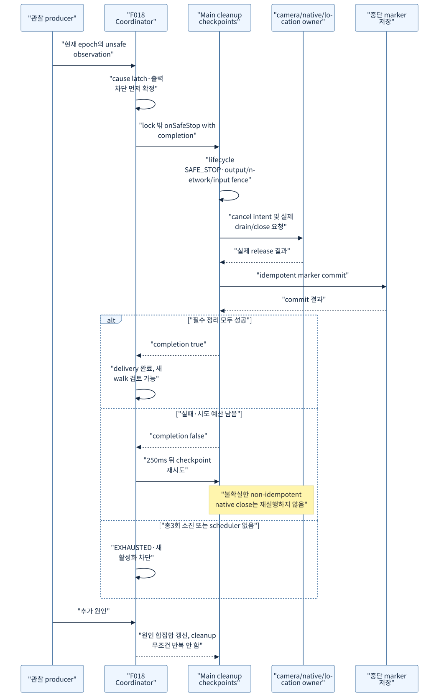

F-D02-019 고정 이미지 CPU/GPU 실행기 선택
| 항목 | 명세 |
|---|---|
| 분야 | D02 보행 세션 생명주기·기기 준비·안전 중단·음성 및 진동 출력·접근성 |
| 목적 | 카메라를 점유하지 않고 bundled fixture로 실제 실행기 선택을 확인한다. |
| 사용 주체 | Main 사용자 성능 검사/초기 detector load |
| 활성 상태 | ACTIVE |
| 진입점 | apps/android/app/src/main/java/kr/co/hanium/dreamup/walksafe/device/AndroidFixedFixtureRuntimeSelector.kt:14 object AndroidFixedFixtureRuntimeSelector | AndroidFixedFixtureRuntimeSelector.select |
| 실행 전제 | worker thread·현재 request predicate·모델 config·fixture binding; CPU threads 1..4 |
| 입력 출처 형식 검증 최신성 | binding은 runtime/input version·device/OS/ABIs·전체 model/threshold/fixture hash. 시간/boot/session expiry 아님. fixture required roles 정확4; actual backend/threads exact, fallback 허용 안 함. |
시작 이벤트와 처리 순서
| 이벤트 ID | 발생원 | 이벤트 | 수신부 | 흐름 |
|---|---|---|---|---|
| E-D02-019-01 | Main 사용자 성능 검사/초기 detector load | fixed fixture selection 요청 | AndroidFixedFixtureRuntimeSelector.select | worker thread·현재 request predicate·모델 config·fixture binding; CPU threads 1..4 → selector lock을 50ms tryLock하며 cancellation 확인 → 최대2 detector 중 selected만 caller로 transfer. |
- selector lock을 50ms tryLock하며 cancellation 확인
- 유효 cache는 저장된 runtime을 load하고 한 fixture로 재검증
- invalid cache는 INVALID로 표시하고 CPU fallback; 새 비교를 몰래 수행하지 않음
- 새 비교는 CPU/GPU 각 warmup, fixture output gate, 2회 AB/BA·4 frame 총 각8 timing
- GPU 평균이 CPU보다 strictly 작을 때 GPU, 같거나 느리면 CPU
- 탈락 detector release 뒤 결과 저장 및 selected detector 소유권 이전
| 분기 조건 | 실제 처리 결과 | 구현 근거 |
|---|---|---|
| CPU 기준 fixture output 거절 | CPU 0 timings 결과 기억; 정확도 승인 아님 | apps/android/app/src/main/java/kr/co/hanium/dreamup/walksafe/device/AndroidFixedFixtureRuntimeSelector.kt:14 object AndroidFixedFixtureRuntimeSelector |
| GPU output/backend/fallback 불일치 | GPU 거절·CPU 선택 | apps/android/app/src/main/java/kr/co/hanium/dreamup/walksafe/device/AndroidFixedFixtureRuntimeSelector.kt:14 object AndroidFixedFixtureRuntimeSelector |
| cancel/currentness 변경 | 결과 전달/소유권 이전 금지 | apps/android/app/src/main/java/kr/co/hanium/dreamup/walksafe/device/AndroidFixedFixtureRuntimeSelector.kt:14 object AndroidFixedFixtureRuntimeSelector |
| prefs commit false | 메모리 결과 가능, durable 저장 성공 아님 | apps/android/app/src/main/java/kr/co/hanium/dreamup/walksafe/device/AndroidFixedFixtureRuntimeSelector.kt:14 object AndroidFixedFixtureRuntimeSelector |
| close 실패 | 실패 전파; 누수 없다고 주장하지 않음 | apps/android/app/src/main/java/kr/co/hanium/dreamup/walksafe/device/AndroidFixedFixtureRuntimeSelector.kt:14 object AndroidFixedFixtureRuntimeSelector |
효과 종료와 복구
고정 검사 진행/결과와 선택된 runtime; 실시간 tracking/depth 보정 profile 아님
| 상황 | 동작 |
|---|---|
| 정상 완료 | 최대2 detector 중 selected만 caller로 transfer. |
| 실패 | 해당 분기의 실패를 유지하며 성공으로 승격하지 않는다. |
| 시간 초과 | 독립 timeout 없음; 명시된 입력의 원본 유효기간 적용. |
| 중복 입력 | 현 상태/소유권과 비교해 중복을 무시하거나 기존 결과를 반환한다. |
| 취소 | lock 대기/각 native 전후 current predicate 확인; 이미 진행 native 호출은 강제 drain 완료로 간주하지 않음. |
| 중단과 생명주기 | 늦은 이전 소유자의 callback은 현 상태를 바꾸지 않는다. |
| 재시도 | cached invalid는 CPU fallback; 사용자 명시 재검사 경로로만 비교. |
| 복구 | 현재 조건과 소유권을 다시 검사한다. |
| 자원 정리 | 탈락/미인수 후보를 먼저 close; 선택 소유권 이전 뒤 selector가 다시 닫지 않음. |
상태 실행 맥락과 연결
| 항목 | 명세 |
|---|---|
| 초기 상태 | cache lookup |
| 상태 목록 | S-D02-019-00 cache lookup S-D02-019-01 cache verified S-D02-019-02 compare S-D02-019-03 CPU selected S-D02-019-04 GPU selected S-D02-019-05 cancelled/failed |
| 전이 조건과 전이 동작 | cache pass→transfer cache invalid→CPU fallback new compare fastergpu→GPU otherwise→CPU |
| 허용되지 않는 전이 | 고정 fixture 결과를 live CONFIRMED나 물체 검출 정확도 검증으로 사용 금지 |
| 동시성 순서와 작업 소유권 | worker-only ReentrantLock; 50ms bounded acquire loop; Main request/lifecycle generation이 callback을 fence. |
| 공유 상태와 다른 기능 연결 | D05 RuntimeCalibrationFixtures/OutputGate·실제 detector loader 및 추론 config, F-D02-020 live tuning store와 저장 namespace 별개. |
정책 근거와 검증 범위
| 항목 | 근거 |
|---|---|
| 정책 | P-D02-019 |
| 구현 | apps/android/app/src/main/java/kr/co/hanium/dreamup/walksafe/device/AndroidFixedFixtureRuntimeSelector.kt:14 · object AndroidFixedFixtureRuntimeSelector (범위 14–433)apps/android/app/src/main/java/kr/co/hanium/dreamup/walksafe/MainActivity.kt:35979 · private fun runFixedFixturePerformanceCheck( (범위 35979–36045) |
| 기존 개선 ID | 개별 동일성 미확인; 분야 연관은 별도 추적표 |
| 기존 분야 | 해당 없음 |
| 기존 실행 증거 | 과거 DONE/개선항목 주석은 이번 실행 증거가 아님. 정적 구현 및 TEST_EXPECTATION만 확인. |
| 한계 및 구분 | Android 실제 callback·센서·현장·청취는 이번 미검증. |
| 테스트 위치 | 심볼 | 증거 수준 | 기대와 한계 |
|---|---|---|---|
| apps/android/app/src/test/java/kr/co/hanium/dreamup/walksafe/device/AndroidFixedFixtureRuntimeSelectorTest.kt | AndroidFixedFixtureRuntimeSelectorTest | TEST_EXPECTATION | cache 검증·fallback·selected/rejected 소유권·commit 처리; 테스트 기대 정적 확인, 이번 미실행 |
이벤트 처리 그림

F-D02-020 실시간 tuning profile 정규 저장과 재시도 시각
| 항목 | 명세 |
|---|---|
| 분야 | D02 보행 세션 생명주기·기기 준비·안전 중단·음성 및 진동 출력·접근성 |
| 목적 | CONFIRMED 보정 결과와 시도 기록을 canonical 형식으로 저장하고 native 시작 전에 retry 예산을 남긴다. |
| 사용 주체 | calibration 준비 |
| 활성 상태 | UNCONNECTED |
| 진입점 | apps/android/app/src/main/java/kr/co/hanium/dreamup/walksafe/device/AndroidDeviceTuningProfileStore.kt:43 class AndroidDeviceTuningProfileStore | AndroidDeviceTuningProfileStore |
| 실행 전제 | worker thread·현재 binding 및 fixture set·CONFIRMED profile |
| 입력 출처 형식 검증 최신성 | canonical JSON schema1, String.length 최대262144 character. decode 후 canonical reencode 동일성을 요구하여 unknown/duplicate/coercion 거절. candidate preference는 실제 active runtime과 별개. |
시작 이벤트와 처리 순서
| 이벤트 ID | 발생원 | 이벤트 | 수신부 | 흐름 |
|---|---|---|---|---|
| E-D02-020-01 | calibration 준비 | load/save/recordAttempt/retryDue | AndroidDeviceTuningProfileStore | worker thread·현재 binding 및 fixture set·CONFIRMED profile → binding을 device/OS/app/model/feature scope/fixture에 맞춰 계산 → 유효한 결과를 현재 호출자에게 반환한다. |
- binding을 device/OS/app/model/feature scope/fixture에 맞춰 계산
- 프로필 load에서 schema/size/fields/현재 fixture/CONFIRMED 상태 검증
- attempt를 native 실행 전에 synchronous commit
- 동일 boot는 elapsed, reboot는 wall/rollback 방어로 24h cooldown 판정
- profile commit 실패는 이전 정상 record 보존
| 분기 조건 | 실제 처리 결과 | 구현 근거 |
|---|---|---|
| noncanonical/unknown/duplicate/oversize | load 거절 | apps/android/app/src/main/java/kr/co/hanium/dreamup/walksafe/device/AndroidDeviceTuningProfileStore.kt:43 class AndroidDeviceTuningProfileStore |
| 자동 retry 24h 미도달 | 대기 | apps/android/app/src/main/java/kr/co/hanium/dreamup/walksafe/device/AndroidDeviceTuningProfileStore.kt:43 class AndroidDeviceTuningProfileStore |
| manual 또는 execution recovery | cooldown 우회 가능한 명시 사유 | apps/android/app/src/main/java/kr/co/hanium/dreamup/walksafe/device/AndroidDeviceTuningProfileStore.kt:43 class AndroidDeviceTuningProfileStore |
| saved preference 있음 | 실제 detector active임을 의미하지 않음 | apps/android/app/src/main/java/kr/co/hanium/dreamup/walksafe/device/AndroidDeviceTuningProfileStore.kt:43 class AndroidDeviceTuningProfileStore |
효과 종료와 복구
local profile·attempt metadata; 임의 CPU/GPU 활성화 없이 caller가 검증/채택
| 상황 | 동작 |
|---|---|
| 정상 완료 | 유효한 결과를 현재 호출자에게 반환한다. |
| 실패 | commit 실패는 prior profile 보존; attempt 기록 실패는 그 결과를 caller에 전달. |
| 시간 초과 | 독립 timeout 없음; 명시된 입력의 원본 유효기간 적용. |
| 중복 입력 | 현 상태/소유권과 비교해 중복을 무시하거나 기존 결과를 반환한다. |
| 취소 | caller가 소유 세대/lease를 무효화하면 새 출력에 사용하지 않는다. |
| 중단과 생명주기 | 늦은 이전 소유자의 callback은 현 상태를 바꾸지 않는다. |
| 재시도 | 자동 retry 24h; 명시 manual/execution recovery 예외. |
| 복구 | 현재 조건과 소유권을 다시 검사한다. |
| 자원 정리 | 순수 정책은 외부 리소스를 소유하지 않는다. |
상태 실행 맥락과 연결
| 항목 | 명세 |
|---|---|
| 초기 상태 | no profile |
| 상태 목록 | S-D02-020-00 no profile S-D02-020-01 valid CONFIRMED S-D02-020-02 invalid S-D02-020-03 cooldown S-D02-020-04 retry eligible |
| 전이 조건과 전이 동작 | record attempt→cooldown 24h/manual/recovery→eligible confirmed save→valid |
| 허용되지 않는 전이 | 현재 Main의 live calibration 호출은 UNCONNECTED; store 존재가 운영 측정 완료 의미 아님 |
| 동시성 순서와 작업 소유권 | worker 동기 prefs mutation; before-native attempt commit으로 process death 후 반복 예산 소진 기록. |
| 공유 상태와 다른 기능 연결 | D05 RuntimeTuningProfile/SelectionPolicy schema, F-D02-021 live runner. |
정책 근거와 검증 범위
| 항목 | 근거 |
|---|---|
| 정책 | P-D02-020 |
| 구현 | apps/android/app/src/main/java/kr/co/hanium/dreamup/walksafe/device/AndroidDeviceTuningProfileStore.kt:43 · class AndroidDeviceTuningProfileStore (범위 43–399) |
| 기존 개선 ID | 개별 동일성 미확인; 분야 연관은 별도 추적표 |
| 기존 분야 | 해당 없음 |
| 기존 실행 증거 | 과거 DONE/개선항목 주석은 이번 실행 증거가 아님. 정적 구현 및 TEST_EXPECTATION만 확인. |
| 한계 및 구분 | profile/attempt load/save의 Main 경로는 현재 미호출 prepareDeviceRuntimeCalibration에 묶인다. runtime load의 markAttemptFinished 분기도 runtimeSelectionBinding이 이 prepare에서만 설정되어 현재 기본 경로에서는 활성화되지 않는다. RUNTIME_CONTRACT_VERSION/INPUT_CONTRACT_VERSION 상수만 fixed selector에서 재사용한다. |
| 테스트 위치 | 심볼 | 증거 수준 | 기대와 한계 |
|---|
연결한 테스트 미확인: 이번 작성 범위에서 이 기능에 대응하는 시험 단언을 연결하지 않았다. 테스트 자체가 없다는 판정이 아니다.
이벤트 처리 그림

F-D02-021 실시간 A/B 보정 runner와 후보 소유권 이전
| 항목 | 명세 |
|---|---|
| 분야 | D02 보행 세션 생명주기·기기 준비·안전 중단·음성 및 진동 출력·접근성 |
| 목적 | fixed correctness·교차 실행·실시간 frame 증거를 모아 채택 가능한 후보를 넘기는 별도 구현이다. |
| 사용 주체 | calibration session candidate consumer |
| 활성 상태 | UNCONNECTED |
| 진입점 | apps/android/app/src/main/java/kr/co/hanium/dreamup/walksafe/device/AndroidRuntimeCalibrationRunner.kt:82 class AndroidRuntimeCalibrationRunner | AndroidRuntimeCalibrationRunner apps/android/app/src/main/java/kr/co/hanium/dreamup/walksafe/device/AndroidRuntimeCalibrationRunner.kt:82 class AndroidRuntimeCalibrationRunner | RuntimeCalibrationSelection |
| 실행 전제 | 현재 Main schedule은 fixed 검사/loadDetector로만 연결; prepareDeviceRuntimeCalibration 정의만 존재하므로 현재 UI 경로 미연결 |
| 입력 출처 형식 검증 최신성 | baseline borrowed + candidate owned 최대2개. fixed outputs/ABBA/noise/confirmation는 D05 정책; live 각 window>=10초·최대25초·완료>=10, evidence age<=800ms, time alignment<=50ms, tracking/depth scope·speech idle·stable environment. |
시작 이벤트와 처리 순서
| 이벤트 ID | 발생원 | 이벤트 | 수신부 | 흐름 |
|---|---|---|---|---|
| E-D02-021-01 | calibration session | start/cancel/offerLiveImage | AndroidRuntimeCalibrationRunner | 현재 Main schedule은 fixed 검사/loadDetector로만 연결; prepareDeviceRuntimeCalibration 정의만 존재하므로 현재 UI 경로 미연결 → deadline/cleanup reserve를 확보하고 candidate scalar screening → 실제 drained 뒤 완료 callback. |
| E-D02-021-02 | candidate consumer | tryAdopt/reject | RuntimeCalibrationSelection | 현재 Main schedule은 fixed 검사/loadDetector로만 연결; prepareDeviceRuntimeCalibration 정의만 존재하므로 현재 UI 경로 미연결 → deadline/cleanup reserve를 확보하고 candidate scalar screening → 실제 drained 뒤 완료 callback. |
| E-D02-021-03 | RuntimeCalibrationSessionDeviceTest runnerFactory | 실제 baseline borrow 및 runner 생성 | AndroidRuntimeCalibrationRunner | explicit opt-in real-camera test → host.borrowDetector → single baseline executor의 실제 추론 → selection.tryAdopt expected identity 교체 → 이전 detector close 확인. 이번 실행하지 않음 |
- deadline/cleanup reserve를 확보하고 candidate scalar screening
- 최종 후보에 fixture correctness·AB/BA와 confirmation 비교
- live baseline·candidate frame을 각자 실제 backend로 실행하고 quality 집계
- D05 RuntimeSelectionPolicy가 CONFIRMED인 경우에만 profile 저장 후 selection 제공
- tryAdopt swap 성공일 때만 후보 owner transfer; 거절 또는 stale은 close
- draining 완료 후에만 onFinished/whenDrained ack
| 분기 조건 | 실제 처리 결과 | 구현 근거 |
|---|---|---|
| 총300000ms 또는 reserve 침범 | 중단/부분 결과; native 완료로 간주하지 않음 | apps/android/app/src/main/java/kr/co/hanium/dreamup/walksafe/device/AndroidRuntimeCalibrationRunner.kt:82 class AndroidRuntimeCalibrationRunner |
| near threshold evidence 부족/quality 불충족 | CONFIRMED 생성 안 함 | apps/android/app/src/main/java/kr/co/hanium/dreamup/walksafe/device/AndroidRuntimeCalibrationRunner.kt:82 class AndroidRuntimeCalibrationRunner |
| borrowed baseline native 진행 | 강제 interrupt로 안전 종료라고 하지 않음 | apps/android/app/src/main/java/kr/co/hanium/dreamup/walksafe/device/AndroidRuntimeCalibrationRunner.kt:82 class AndroidRuntimeCalibrationRunner |
| candidate selection 거절 | runner가 candidate close | apps/android/app/src/main/java/kr/co/hanium/dreamup/walksafe/device/AndroidRuntimeCalibrationRunner.kt:82 class AndroidRuntimeCalibrationRunner |
| native/image close 실패 | drain ACK withheld; 새 camera owner 금지 | apps/android/app/src/main/java/kr/co/hanium/dreamup/walksafe/device/AndroidRuntimeCalibrationRunner.kt:82 class AndroidRuntimeCalibrationRunner |
효과 종료와 복구
실시간 보정 progress/outcome·후보 profile; 현재 active UI 없음
| 상황 | 동작 |
|---|---|
| 정상 완료 | 실제 drained 뒤 완료 callback. |
| 실패 | 해당 분기의 실패를 유지하며 성공으로 승격하지 않는다. |
| 시간 초과 | 총5분, cleanup20초/final90초 reserve; live window 최대25초. |
| 중복 입력 | 현 상태/소유권과 비교해 중복을 무시하거나 기존 결과를 반환한다. |
| 취소 | cancel은 interruption intent와 late publication fence; 실제 native 반환·image close 기다림. |
| 중단과 생명주기 | 늦은 이전 소유자의 callback은 현 상태를 바꾸지 않는다. |
| 재시도 | Main live entry 미연결; store가 cooldown 여부 별도 판정. |
| 복구 | 현재 조건과 소유권을 다시 검사한다. |
| 자원 정리 | borrowed baseline 닫지 않고 owned 후보/image/timer를 정리. close 실패는 drained 성공으로 보고하지 않음. |
상태 실행 맥락과 연결
| 항목 | 명세 |
|---|---|
| 초기 상태 | PREPARING |
| 상태 목록 | S-D02-021-00 PREPARING S-D02-021-01 OUTPUT_CHECK S-D02-021-02 COMPARING S-D02-021-03 LIVE_BASELINE S-D02-021-04 LIVE_CANDIDATE S-D02-021-05 SELECTING S-D02-021-06 DRAINING S-D02-021-07 FINISHED/CANCELLED |
| 전이 조건과 전이 동작 | screen→fixed compare→liveA→liveB→select confirmed+adopt→transfer cancel/failure→drain→finish |
| 허용되지 않는 전이 | 고정 검사만으로 live profile confirmed 금지; cleanup 미완료를 finish로 위장 금지 |
| 동시성 순서와 작업 소유권 | 단일 worker 및 borrowed baseline executor; monitor/atomic owner; callbacks main executor에서 current 검사. adopt와 cancellation 경쟁을 하나의 owner 판정으로 보호. |
| 공유 상태와 다른 기능 연결 | D05 selection mathematical criteria·fixture semantic tolerances, F-D02-020 profile store, F-D02-022 camera ownership. UnknownRuntimeCalibration 경로도 prepareDeviceRuntimeCalibration 후속에 종속. |
정책 근거와 검증 범위
| 항목 | 근거 |
|---|---|
| 정책 | P-D02-021 |
| 구현 | apps/android/app/src/main/java/kr/co/hanium/dreamup/walksafe/device/AndroidRuntimeCalibrationRunner.kt:82 · class AndroidRuntimeCalibrationRunner (범위 82–871)apps/android/app/src/debug/java/kr/co/hanium/dreamup/walksafe/device/RuntimeCalibrationTestHostActivity.kt:9 · RuntimeCalibrationTestHostActivity (범위 9–47) |
| 기존 개선 ID | 개별 동일성 미확인; 분야 연관은 별도 추적표 |
| 기존 분야 | 해당 없음 |
| 기존 실행 증거 | 과거 DONE/개선항목 주석은 이번 실행 증거가 아님. 정적 구현 및 TEST_EXPECTATION만 확인. |
| 한계 및 구분 | MainActivity scheduleDeviceRuntimeCalibration(36103)는 manual→fixed 검사, automatic→loadDetector 경로만 사용. prepareDeviceRuntimeCalibration(36125)은 정의만 검색되었다. live runner 실행 성공을 주장하지 않는다. UNCONNECTED는 Main 제품 UI 진입점 기준이다. debug/non-exported RuntimeCalibrationTestHostActivity와 explicit opt-in instrumentation에는 별도 실행 연결이 존재한다. 이번에 instrumentation을 실행하지 않았다. |
| 테스트 위치 | 심볼 | 증거 수준 | 기대와 한계 |
|---|---|---|---|
| apps/android/app/src/androidTest/java/kr/co/hanium/dreamup/walksafe/device/RuntimeCalibrationSessionDeviceTest.kt | realMetricSessionThenCameraCancellationAndReentry | TEST_EXPECTATION | allowRuntimeCalibrationSessionDeviceTest=true와 기존 CAMERA grant를 전제로 real model/camera metric300초 및 camera-only cancel/drain/reentry를 시험하도록 구현. 계정/앱 prefs/권한 변경·Depth/pose 주입·카메라 내용 저장 없이 실제 drain ACK를 확인하는 기대. 선언 및 factory 경로 정적 확인, 이번 미실행 |
이벤트 처리 그림


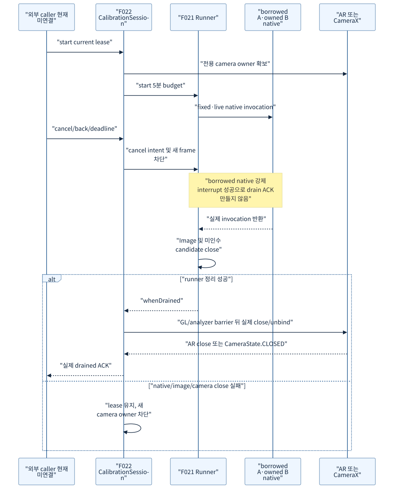

F-D02-022 실시간 보정 camera lease·UI deadline·실제 drain
| 항목 | 명세 |
|---|---|
| 분야 | D02 보행 세션 생명주기·기기 준비·안전 중단·음성 및 진동 출력·접근성 |
| 목적 | 보정용 camera/native 리소스가 실제 해제되기 전 다른 사용자가 인수하지 못하도록 한다. |
| 사용 주체 | session caller UI/GL/CameraX |
| 활성 상태 | UNCONNECTED |
| 진입점 | apps/android/app/src/main/java/kr/co/hanium/dreamup/walksafe/device/AndroidRuntimeCalibrationSession.kt:73 class AndroidRuntimeCalibrationSession | AndroidRuntimeCalibrationSession apps/android/app/src/main/java/kr/co/hanium/dreamup/walksafe/device/AndroidRuntimeCalibrationSession.kt:73 class AndroidRuntimeCalibrationSession | session owner apps/android/app/src/debug/java/kr/co/hanium/dreamup/walksafe/device/RuntimeCalibrationTestHostActivity.kt:16 onCreate apps/android/app/src/debug/java/kr/co/hanium/dreamup/walksafe/device/RuntimeCalibrationTestHostActivity.kt:38 onPause apps/android/app/src/debug/java/kr/co/hanium/dreamup/walksafe/device/RuntimeCalibrationTestHostActivity.kt:43 onDestroy apps/android/app/src/androidTest/java/kr/co/hanium/dreamup/walksafe/device/RuntimeCalibrationSessionDeviceTest.kt:231 session/runnerFactory |
| 실행 전제 | 현재 live entry UNCONNECTED; foreground·권한·first-run/page/account/기기 검사 snapshot·generation 일치 |
| 입력 출처 형식 검증 최신성 | AR tracking source history32; CameraX640x480 latest-only; private GL/AR or camera fallback owner. UI 최대5분, progress text polite live region. |
시작 이벤트와 처리 순서
| 이벤트 ID | 발생원 | 이벤트 | 수신부 | 흐름 |
|---|---|---|---|---|
| E-D02-022-01 | session caller | start·cancel·whenDrained | AndroidRuntimeCalibrationSession | 현재 live entry UNCONNECTED; foreground·권한·first-run/page/account/기기 검사 snapshot·generation 일치 → 전용 dialog와 camera/GL owner 준비; 권한을 새로 요청하지 않음 → 유효한 결과를 현재 호출자에게 반환한다. |
| E-D02-022-02 | UI/GL/CameraX | dialog cancel/back·frame·camera closed | session owner | 현재 live entry UNCONNECTED; foreground·권한·first-run/page/account/기기 검사 snapshot·generation 일치 → 전용 dialog와 camera/GL owner 준비; 권한을 새로 요청하지 않음 → 유효한 결과를 현재 호출자에게 반환한다. |
| E-D02-022-03 | debug instrumentation ActivityScenario | test host onCreate/onPause/onDestroy 및 detector borrow/replace/detach | RuntimeCalibrationTestHostActivity | explicit opt-in+기존 camera 권한 → host label UI → fixture-owned detector install/borrow → selection.tryAdopt 안에서 expected identity replace → pause/destroy onHostUnavailable callback → fixture attempt.cancel → 실제 drain과 detector detach/close 확인 |
- 전용 dialog와 camera/GL owner 준비; 권한을 새로 요청하지 않음
- frame을 current runner에 전달하고 거절 frame 즉시 close
- cancel intent는 UI와 frame publication을 막고 runner drain 대기
- AR은 image/native drain→GL pause/provider pause→worker Session.close
- CameraX는 analyzer serial barrier→unbind→실제 CameraState.CLOSED를 100ms 간격 관찰
- 모든 실제 owner 해제가 확인된 뒤 drained callback
- debug 테스트 host는 onCreate에 테스트 label만 표시하고 계정·readiness·앱 preference를 읽지 않는다. install은 한 detector만, replace는 expected identity 일치 시만 허용, detach는 참조를 비운다.
- onPause/onDestroy는 instrumentation이 등록/제거하는 onHostUnavailable callback을 호출한다. fixture는 이를 attempt.cancel(test_host_paused)에 연결한다. host 자체가 detector를 자동 close하지 않고 fixture가 기존 detector executor와 drain 확인을 소유한다.
| 분기 조건 | 실제 처리 결과 | 구현 근거 |
|---|---|---|
| deadline/back/window cancel | cancel intent; 곧바로 camera free로 표시하지 않음 | apps/android/app/src/main/java/kr/co/hanium/dreamup/walksafe/device/AndroidRuntimeCalibrationSession.kt:73 class AndroidRuntimeCalibrationSession |
| late provider/frame | current generation 검사 뒤 close/discard | apps/android/app/src/main/java/kr/co/hanium/dreamup/walksafe/device/AndroidRuntimeCalibrationSession.kt:73 class AndroidRuntimeCalibrationSession |
| close 실패 | camera lease 유지·앱 재시작 필요 표시 | apps/android/app/src/main/java/kr/co/hanium/dreamup/walksafe/device/AndroidRuntimeCalibrationSession.kt:73 class AndroidRuntimeCalibrationSession |
| runner만 종료/UI만 dismiss | drain 완료 근거 아님 | apps/android/app/src/main/java/kr/co/hanium/dreamup/walksafe/device/AndroidRuntimeCalibrationSession.kt:73 class AndroidRuntimeCalibrationSession |
효과 종료와 복구
보정 진행/취소 UI, 성공적으로 정리된 뒤 owner release; 현재 사용자 연결은 없음
| 상황 | 동작 |
|---|---|
| 정상 완료 | 유효한 결과를 현재 호출자에게 반환한다. |
| 실패 | 해당 분기의 실패를 유지하며 성공으로 승격하지 않는다. |
| 시간 초과 | 5분 request deadline; deadline은 native 정리 완료를 보장하지 않음. |
| 중복 입력 | 현 상태/소유권과 비교해 중복을 무시하거나 기존 결과를 반환한다. |
| 취소 | button/back/window lifecycle에서 같은 cancellation owner 사용. |
| 중단과 생명주기 | 늦은 이전 소유자의 callback은 현 상태를 바꾸지 않는다. |
| 재시도 | close 실패 뒤 자동 camera 재사용 없음. |
| 복구 | 현재 조건과 소유권을 다시 검사한다. |
| 자원 정리 | AR 실제 close 또는 CameraX CLOSED 확인, failed close는 lease를 붙들고 새 owner 차단. |
상태 실행 맥락과 연결
| 항목 | 명세 |
|---|---|
| 초기 상태 | PREPARING |
| 상태 목록 | S-D02-022-00 PREPARING S-D02-022-01 RUNNING S-D02-022-02 CANCELLING S-D02-022-03 WAITING_RUNNER_DRAIN S-D02-022-04 WAITING_CAMERA_CLOSE S-D02-022-05 DRAINED S-D02-022-06 CLOSE_FAILED |
| 전이 조건과 전이 동작 | start→running cancel→runnerdrain→cameraclose→drained close error→close_failed |
| 허용되지 않는 전이 | 취소/시간초과/UI 해제만으로 native 작업 종료 ACK 금지 |
| 동시성 순서와 작업 소유권 | UI main·GL render thread·camera analyzer executor·AR close worker. 모든 늦은 callback generation/currentness; analyzer barrier와 state CLOSED로 실제 release 순서 보장. debug fixture는 ActivityScenario/main callbacks·단일 baseline executor·main Handler callback executor를 사용하고 selection.tryAdopt 안에서 host expected identity replace를 수행한다. |
| 공유 상태와 다른 기능 연결 | D05 borrowed detector owner, D07 ARCore provider, D04 camera callbacks. |
정책 근거와 검증 범위
| 항목 | 근거 |
|---|---|
| 정책 | P-D02-022 |
| 구현 | apps/android/app/src/main/java/kr/co/hanium/dreamup/walksafe/device/AndroidRuntimeCalibrationSession.kt:73 · class AndroidRuntimeCalibrationSession (범위 73–717)apps/android/app/src/main/java/kr/co/hanium/dreamup/walksafe/device/RuntimeArSessionCleanupOwnership.kt:4 · RuntimeArSessionCleanupOwnership (범위 4–64)apps/android/app/src/main/java/kr/co/hanium/dreamup/walksafe/MainActivity.kt:36125 · private fun prepareDeviceRuntimeCalibration( (범위 36125–36321)apps/android/app/src/debug/java/kr/co/hanium/dreamup/walksafe/device/RuntimeCalibrationTestHostActivity.kt:9 · RuntimeCalibrationTestHostActivity (범위 9–47) |
| 기존 개선 ID | 개별 동일성 미확인; 분야 연관은 별도 추적표 |
| 기존 분야 | 해당 없음 |
| 기존 실행 증거 | 과거 DONE/개선항목 주석은 이번 실행 증거가 아님. 정적 구현 및 TEST_EXPECTATION만 확인. |
| 한계 및 구분 | Android 실제 callback·센서·현장·청취는 이번 미검증. UNCONNECTED는 Main 제품 UI 진입점 기준이다. debug/non-exported RuntimeCalibrationTestHostActivity와 explicit opt-in instrumentation에는 별도 실행 연결이 존재한다. 이번에 instrumentation을 실행하지 않았다. |
| 테스트 위치 | 심볼 | 증거 수준 | 기대와 한계 |
|---|---|---|---|
| apps/android/app/src/test/java/kr/co/hanium/dreamup/walksafe/device/AndroidRuntimeCalibrationSessionDeadlineTest.java | AndroidRuntimeCalibrationSessionDeadlineTest | TEST_EXPECTATION | deadline cancellation과 actual drain 구분; 테스트 기대 정적 확인, 이번 미실행 |
| apps/android/app/src/androidTest/java/kr/co/hanium/dreamup/walksafe/device/RuntimeCalibrationSessionDeviceTest.kt | realMetricSessionThenCameraCancellationAndReentry | TEST_EXPECTATION | allowRuntimeCalibrationSessionDeviceTest=true와 기존 CAMERA grant를 전제로 real model/camera metric300초 및 camera-only cancel/drain/reentry를 시험하도록 구현. 계정/앱 prefs/권한 변경·Depth/pose 주입·카메라 내용 저장 없이 실제 drain ACK를 확인하는 기대. 선언 및 factory 경로 정적 확인, 이번 미실행 |
이벤트 처리 그림

F-D02-023 위험 음성 후보 안정화·공정 큐·원본 lease
| 항목 | 명세 |
|---|---|
| 분야 | D02 보행 세션 생명주기·기기 준비·안전 중단·음성 및 진동 출력·접근성 |
| 목적 | 안정된 현재 위험을 우선 전달하고 실제 완료로 cooldown을 확정한다. |
| 사용 주체 | 위험 pipeline actuator |
| 활성 상태 | ACTIVE |
| 진입점 | apps/android/app/src/main/java/kr/co/hanium/dreamup/walksafe/feedback/WalkSafeFeedbackPolicy.kt:160 class WalkSafeFeedbackPolicy | WalkSafeFeedbackPolicy.evaluate apps/android/app/src/main/java/kr/co/hanium/dreamup/walksafe/feedback/WalkSafeFeedbackPolicy.kt:160 class WalkSafeFeedbackPolicy | delivery reservation lifecycle |
| 실행 전제 | 현재 walk/frame/source owner·finite elapsed 원본 증거. metric risk confidence>=.55; qualitative polygon은 별도 CAUTION 제한 |
| 입력 출처 형식 검증 최신성 | stable>=3frames AND >=700ms; missing1500ms; safe2회 clear; source risk max age800ms 또는 producer의 더 짧은 lease; queue cap3/startTTL1500ms. dispatch 시각으로 source age 재설정 금지. |
시작 이벤트와 처리 순서
| 이벤트 ID | 발생원 | 이벤트 | 수신부 | 흐름 |
|---|---|---|---|---|
| E-D02-023-01 | 위험 pipeline | current risk observations | WalkSafeFeedbackPolicy.evaluate | 현재 walk/frame/source owner·finite elapsed 원본 증거. metric risk confidence>=.55; qualitative polygon은 별도 CAUTION 제한 → 신뢰 source·distance/TTC/confidence·원본 만료를 검사 → actual DONE이 confirmed cooldown/FIFO 상태 반영. |
| E-D02-023-02 | actuator | claim/start/done/reject | delivery reservation lifecycle | 현재 walk/frame/source owner·finite elapsed 원본 증거. metric risk confidence>=.55; qualitative polygon은 별도 CAUTION 제한 → 신뢰 source·distance/TTC/confidence·원본 만료를 검사 → actual DONE이 confirmed cooldown/FIFO 상태 반영. |
- 신뢰 source·distance/TTC/confidence·원본 만료를 검사
- track별 안정화 후 severity·approach·distance·FIFO 공정순위로 후보 예약
- global/track/navigation cooldown과 동일 CAUTION 억제를 적용
- 높은 severity는 기존 위험을 preempt; 같은 rank 악화는 policy replacement token으로만 교체
- actuator가 새 owner를 실제 수락한 뒤 이전 예약을 revoke
- 실제 DONE으로 cooldown 확정, 거절/실패는 예약 회계 rollback
| 분기 조건 | 실제 처리 결과 | 구현 근거 |
|---|---|---|
| emergency RAW STOP conf>=.90·2frame·100ms·TTC<=300·dist<=.9·남은 lease>400 | 일반 stability보다 빠른 STOP 허용 | apps/android/app/src/main/java/kr/co/hanium/dreamup/walksafe/feedback/WalkSafeFeedbackPolicy.kt:160 class WalkSafeFeedbackPolicy |
| same severity worsen | newer source+later deadline 및 TTC band+절반 또는 distance band+margin 조건; global700ms는 유지 | apps/android/app/src/main/java/kr/co/hanium/dreamup/walksafe/feedback/WalkSafeFeedbackPolicy.kt:160 class WalkSafeFeedbackPolicy |
| same continuous CAUTION | distance band가 margin 이상 변하지 않으면 반복 억제 | apps/android/app/src/main/java/kr/co/hanium/dreamup/walksafe/feedback/WalkSafeFeedbackPolicy.kt:160 class WalkSafeFeedbackPolicy |
| claimed/started 후 startTTL 만료 | 진행 발화를 임의 무효화하지 않고 terminal owner 보존 | apps/android/app/src/main/java/kr/co/hanium/dreamup/walksafe/feedback/WalkSafeFeedbackPolicy.kt:160 class WalkSafeFeedbackPolicy |
| scene/source owner 사라짐 | 미시작 candidate 취소; 이미 시작 terminal receipt 별도 | apps/android/app/src/main/java/kr/co/hanium/dreamup/walksafe/feedback/WalkSafeFeedbackPolicy.kt:160 class WalkSafeFeedbackPolicy |
효과 종료와 복구
위험 음성/진동 action·delivery reservation·경로 안내 suppression
| 상황 | 동작 |
|---|---|
| 정상 완료 | actual DONE이 confirmed cooldown/FIFO 상태 반영. |
| 실패 | rejected/failed/cancelled owner만 rollback; 새 owner receipt를 소비하지 않음. |
| 시간 초과 | source lease는 실제 시작까지, queue TTL1500; 발화 완료 예산은 actuator 별도. |
| 중복 입력 | 현 상태/소유권과 비교해 중복을 무시하거나 기존 결과를 반환한다. |
| 취소 | pending cancellation은 exact receipt/owner에만 적용. |
| 중단과 생명주기 | 늦은 이전 소유자의 callback은 현 상태를 바꾸지 않는다. |
| 재시도 | 자동 재시도 없음; 새 적법한 요청이 필요하다. |
| 복구 | 현재 조건과 소유권을 다시 검사한다. |
| 자원 정리 | 새 walk reset은 track/history/pending 전체; owner-specific reset은 해당 source만. |
상태 실행 맥락과 연결
| 항목 | 명세 |
|---|---|
| 초기 상태 | observed |
| 상태 목록 | S-D02-023-00 observed S-D02-023-01 stable S-D02-023-02 queued S-D02-023-03 reserved S-D02-023-04 claimed S-D02-023-05 started S-D02-023-06 done S-D02-023-07 rejected/cancelled |
| 전이 조건과 전이 동작 | stable+lease→reserve actuator accepted→claim native start→started done→confirm cooldown reject→rollback |
| 허용되지 않는 전이 | qualitative CAUTION은 metric distance/TTC 또는 보고 권한을 생성하지 않음 |
| 동시성 순서와 작업 소유권 | policy 동기화된 reserve/claim identity; 원본 capture 시계와 완료 시계 분리. queued candidate를 새 frame이 자동 갱신해 원본 lease 연장 금지. |
| 공유 상태와 다른 기능 연결 | D07/Dnavigation risk producer; F-D02-024/025 native dispatch; route cue suppression. |
정책 근거와 검증 범위
| 항목 | 근거 |
|---|---|
| 정책 | P-D02-023 |
| 구현 | apps/android/app/src/main/java/kr/co/hanium/dreamup/walksafe/feedback/WalkSafeFeedbackPolicy.kt:160 · class WalkSafeFeedbackPolicy (범위 160–1037) |
| 기존 개선 ID | 개별 동일성 미확인; 분야 연관은 별도 추적표 |
| 기존 분야 | 해당 없음 |
| 기존 실행 증거 | 과거 DONE/개선항목 주석은 이번 실행 증거가 아님. 정적 구현 및 TEST_EXPECTATION만 확인. |
| 한계 및 구분 | Android 실제 callback·센서·현장·청취는 이번 미검증. |
| 테스트 위치 | 심볼 | 증거 수준 | 기대와 한계 |
|---|---|---|---|
| apps/android/app/src/test/java/kr/co/hanium/dreamup/walksafe/feedback/WalkSafeFeedbackRiskWorseningTest.kt | WalkSafeFeedbackRiskWorseningTest | TEST_EXPECTATION | same-rank 악화의 owner 교체; 테스트 기대 정적 확인, 이번 미실행 |
| apps/android/app/src/test/java/kr/co/hanium/dreamup/walksafe/feedback/WalkSafeFeedbackFairnessTest.kt | WalkSafeFeedbackFairnessTest | TEST_EXPECTATION | 동급 위험 공정 순서; 테스트 기대 정적 확인, 이번 미실행 |
| apps/android/app/src/test/java/kr/co/hanium/dreamup/walksafe/feedback/WalkSafeFeedbackOutputRejectionTest.kt | WalkSafeFeedbackOutputRejectionTest | TEST_EXPECTATION | 거절 rollback과 완료 cooldown; 테스트 기대 정적 확인, 이번 미실행 |
이벤트 처리 그림

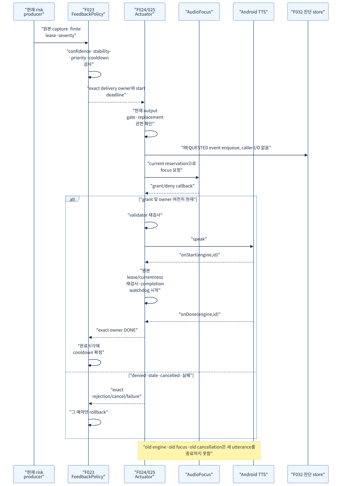

F-D02-024 TTS engine 준비·복구 예산·callback watchdog
| 항목 | 명세 |
|---|---|
| 분야 | D02 보행 세션 생명주기·기기 준비·안전 중단·음성 및 진동 출력·접근성 |
| 목적 | 현재 출력 엔진과 utterance identity의 실제 START/DONE을 추적한다. |
| 사용 주체 | Main Android TTS |
| 활성 상태 | ACTIVE |
| 진입점 | apps/android/app/src/main/java/kr/co/hanium/dreamup/walksafe/feedback/AndroidFeedbackActuator.kt:52 class AndroidFeedbackActuator | AndroidFeedbackActuator apps/android/app/src/main/java/kr/co/hanium/dreamup/walksafe/feedback/AndroidFeedbackActuator.kt:52 class AndroidFeedbackActuator | current engine callbacks |
| 실행 전제 | 설치된 nonnetwork Korean voice; current engine generation·current utterance ID; main callback dispatcher |
| 입력 출처 형식 검증 최신성 | INITIALIZING/READY/FAILED/LANGUAGE_UNSUPPORTED/CLOSED. audio attributes USAGE_ASSISTANCE_ACCESSIBILITY. init deadline10000ms; production auto recovery budget0. test injector는1회/250ms 가능. |
시작 이벤트와 처리 순서
| 이벤트 ID | 발생원 | 이벤트 | 수신부 | 흐름 |
|---|---|---|---|---|
| E-D02-024-01 | Main | ensure actuator·speech request·close | AndroidFeedbackActuator | 설치된 nonnetwork Korean voice; current engine generation·current utterance ID; main callback dispatcher → engine init 후 Korean voice·listener·attributes 설정 성공해야 READY → onDone만 실제 엔진 완료; REQUESTED/QUEUED와 구분. |
| E-D02-024-02 | Android TTS | onInit/onStart/onDone/onError/onStop | current engine callbacks | 설치된 nonnetwork Korean voice; current engine generation·current utterance ID; main callback dispatcher → engine init 후 Korean voice·listener·attributes 설정 성공해야 READY → onDone만 실제 엔진 완료; REQUESTED/QUEUED와 구분. |
- engine init 후 Korean voice·listener·attributes 설정 성공해야 READY
- INITIALIZING 요청은 UNAVAILABLE; 후속 READY에 옛 문구 재생하지 않음
- dispatch 앞/후와 actual onStart에서 currentness·source deadline 재검사
- head utterance start watchdog 최대8000ms, 실제 START 뒤 message-family completion watchdog 시작
- exact engine+ID terminal callback 한 번만 소비
- service error는 engine failure; not-installed는 language unavailable; 그 밖은 utterance failure
- close는 generation을 먼저 revoke하고 native stop/shutdown 및 callbacks 정리
| 분기 조건 | 실제 처리 결과 | 구현 근거 |
|---|---|---|
| init/recovery 실패 | FAILED 및 Main readiness 차단/안전정지 | apps/android/app/src/main/java/kr/co/hanium/dreamup/walksafe/feedback/AndroidFeedbackActuator.kt:52 class AndroidFeedbackActuator |
| late 이전 engine callback | 무시 | apps/android/app/src/main/java/kr/co/hanium/dreamup/walksafe/feedback/AndroidFeedbackActuator.kt:52 class AndroidFeedbackActuator |
| 다음 utterance START 도착 | 이전 utterance DONE을 만들어내지 않고 실패 처리 | apps/android/app/src/main/java/kr/co/hanium/dreamup/walksafe/feedback/AndroidFeedbackActuator.kt:52 class AndroidFeedbackActuator |
| source deadline=now | START 허용; expiry scheduling은 deadline+1 | apps/android/app/src/main/java/kr/co/hanium/dreamup/walksafe/feedback/AndroidFeedbackActuator.kt:52 class AndroidFeedbackActuator |
| native stop/shutdown 예외 | 나머지 cleanup 계속, 성공 청취라고 주장하지 않음 | apps/android/app/src/main/java/kr/co/hanium/dreamup/walksafe/feedback/AndroidFeedbackActuator.kt:52 class AndroidFeedbackActuator |
효과 종료와 복구
TTS readiness·actual terminal receipts·failure diagnostics
| 상황 | 동작 |
|---|---|
| 정상 완료 | onDone만 실제 엔진 완료; REQUESTED/QUEUED와 구분. |
| 실패 | 해당 분기의 실패를 유지하며 성공으로 승격하지 않는다. |
| 시간 초과 | init10초/start8초/START 후 family별 completion 예산. caller readiness 대기 최대20500ms. |
| 중복 입력 | 현 상태/소유권과 비교해 중복을 무시하거나 기존 결과를 반환한다. |
| 취소 | exact owner 취소 callbacks, reentrant close 도중 native lock 밖에 deferred 전달. |
| 중단과 생명주기 | 늦은 이전 소유자의 callback은 현 상태를 바꾸지 않는다. |
| 재시도 | production automatic init retry0; 주입 테스트1회250ms만 별도. |
| 복구 | 현재 조건과 소유권을 다시 검사한다. |
| 자원 정리 | generation revoke→watchdog/queue callbacks 해제→focus release→stop/shutdown, 예외 뒤에도 다음 단계 진행. |
상태 실행 맥락과 연결
| 항목 | 명세 |
|---|---|
| 초기 상태 | INITIALIZING |
| 상태 목록 | S-D02-024-00 INITIALIZING S-D02-024-01 READY S-D02-024-02 FAILED S-D02-024-03 LANGUAGE_UNSUPPORTED S-D02-024-04 CLOSED |
| 전이 조건과 전이 동작 | init success→ready deadline/service failure→failed language not installed→unsupported close→closed |
| 허용되지 않는 전이 | READY 전에 받은 오래된 말 자동 replay 없음; production retry를 테스트 설정과 혼동 금지 |
| 동시성 순서와 작업 소유권 | main handler callback + engine/effect lock·atomic epoch. 사용자 validator와 callbacks는 외부 호출을 lock 밖에서 처리해 reentry 보호. |
| 공유 상태와 다른 기능 연결 | D03 STT는 모든 pending/output 종료 뒤500ms quiet 대기; PendingSpeechQueue 구현은 존재하나 current speak 경로는 offer하지 않고 flush clear만 하므로 legacy/unconnected 보조 자료. |
정책 근거와 검증 범위
| 항목 | 근거 |
|---|---|
| 정책 | P-D02-024 |
| 구현 | apps/android/app/src/main/java/kr/co/hanium/dreamup/walksafe/feedback/AndroidFeedbackActuator.kt:52 · class AndroidFeedbackActuator (범위 52–2337)apps/android/app/src/main/java/kr/co/hanium/dreamup/walksafe/feedback/UtteranceCallbackRegistry.kt:27 · UtteranceCallbackRegistry (범위 27–138)apps/android/app/src/main/java/kr/co/hanium/dreamup/walksafe/feedback/PendingSpeechQueue.kt:17 · PendingSpeechQueue (범위 17–67) |
| 기존 개선 ID | 개별 동일성 미확인; 분야 연관은 별도 추적표 |
| 기존 분야 | 해당 없음 |
| 기존 실행 증거 | 과거 DONE/개선항목 주석은 이번 실행 증거가 아님. 정적 구현 및 TEST_EXPECTATION만 확인. |
| 한계 및 구분 | Android 실제 callback·센서·현장·청취는 이번 미검증. |
| 테스트 위치 | 심볼 | 증거 수준 | 기대와 한계 |
|---|---|---|---|
| apps/android/app/src/test/java/kr/co/hanium/dreamup/walksafe/feedback/AndroidFeedbackActuatorRuntimeRegressionTest.kt | AndroidFeedbackActuatorRuntimeRegressionTest | TEST_EXPECTATION | reentry·stale engine·focus·native cleanup 예외; 테스트 기대 정적 확인, 이번 미실행 |
| apps/android/app/src/test/java/kr/co/hanium/dreamup/walksafe/feedback/UtteranceCallbackRegistryTest.kt | UtteranceCallbackRegistryTest | TEST_EXPECTATION | exact terminal identity; 테스트 기대 정적 확인, 이번 미실행 |
| apps/android/app/src/test/java/kr/co/hanium/dreamup/walksafe/feedback/TtsFirstFailureInterimPolicyTest.kt | TtsFirstFailureInterimPolicyTest | TEST_EXPECTATION | production recovery 정책; 테스트 기대 정적 확인, 이번 미실행 |
이벤트 처리 그림


F-D02-025 음성 우선순위·audio focus·정확한 취소 소유권
| 항목 | 명세 |
|---|---|
| 분야 | D02 보행 세션 생명주기·기기 준비·안전 중단·음성 및 진동 출력·접근성 |
| 목적 | 새 위험이 낮은 우선 출력을 선점하면서 예전 취소/focus callback이 새 위험을 중단하지 못하도록 한다. |
| 사용 주체 | 위험/대화/경로/참고 안내 AudioManager |
| 활성 상태 | ACTIVE |
| 진입점 | apps/android/app/src/main/java/kr/co/hanium/dreamup/walksafe/feedback/AndroidFeedbackActuator.kt:723 fun speakNavigation | AndroidFeedbackActuator.speak* apps/android/app/src/main/java/kr/co/hanium/dreamup/walksafe/feedback/AndroidFeedbackActuator.kt:723 fun speakNavigation | focus owner |
| 실행 전제 | engine READY, current validator, source start deadline, voice recognition suppression. protected education/consent owner는 특별 nonrisk 보호 |
| 입력 출처 형식 검증 최신성 | risk>interaction>navigation>advisory. risk AUDIOFOCUS_GAIN_TRANSIENT, 일반 MAY_DUCK. duplicate risk800/interaction1000/nav2000ms. focus identity와 pending utterance reservation 연결. |
시작 이벤트와 처리 순서
| 이벤트 ID | 발생원 | 이벤트 | 수신부 | 흐름 |
|---|---|---|---|---|
| E-D02-025-01 | 위험/대화/경로/참고 안내 | speech dispatch | AndroidFeedbackActuator.speak* | engine READY, current validator, source start deadline, voice recognition suppression. protected education/consent owner는 특별 nonrisk 보호 → risk admission은 낮은 출력 flush; active risk는 strictly higher rank 또는 policy-approved same-rank replacement만 허용 → 유효한 결과를 현재 호출자에게 반환한다. |
| E-D02-025-02 | AudioManager | focus grant/denial/loss | focus owner | engine READY, current validator, source start deadline, voice recognition suppression. protected education/consent owner는 특별 nonrisk 보호 → risk admission은 낮은 출력 flush; active risk는 strictly higher rank 또는 policy-approved same-rank replacement만 허용 → 유효한 결과를 현재 호출자에게 반환한다. |
- risk admission은 낮은 출력 flush; active risk는 strictly higher rank 또는 policy-approved same-rank replacement만 허용
- protected education/consent는 다른 nonrisk 차단; advisory는 idle만, navigation은 advisory만 교체 가능
- REQUESTED 진단 뒤 reservation을 만들고 focus 요청
- focus 복귀 후 owner/currentness 재검사; grant late/stale면 해당 request만 release
- native speak 및 START에서 validator 재검사
- focus loss/duck 또는 explicit cancellation은 현재 소유 음성·tone만 retire
| 분기 조건 | 실제 처리 결과 | 구현 근거 |
|---|---|---|
| STT active | nonrisk suppress, risk 허용 | apps/android/app/src/main/java/kr/co/hanium/dreamup/walksafe/feedback/AndroidFeedbackActuator.kt:723 fun speakNavigation |
| audio focus denied/exception | UNAVAILABLE, pending retire; engine retry 예산 소비하지 않음 | apps/android/app/src/main/java/kr/co/hanium/dreamup/walksafe/feedback/AndroidFeedbackActuator.kt:723 fun speakNavigation |
| cancel B 이전 A의 late focus loss | B 유지 | apps/android/app/src/main/java/kr/co/hanium/dreamup/walksafe/feedback/AndroidFeedbackActuator.kt:723 fun speakNavigation |
| duplicate/suppressed | 재생 없이 SUPPRESSED; TalkBack fallback 유발 안 함 | apps/android/app/src/main/java/kr/co/hanium/dreamup/walksafe/feedback/AndroidFeedbackActuator.kt:723 fun speakNavigation |
| same rank 위험 | 정책 replacement lease 없으면 차단 | apps/android/app/src/main/java/kr/co/hanium/dreamup/walksafe/feedback/AndroidFeedbackActuator.kt:723 fun speakNavigation |
효과 종료와 복구
발화 선점·output quiet 상태·focus 획득/반납·exact terminal cancel receipt
| 상황 | 동작 |
|---|---|
| 정상 완료 | 유효한 결과를 현재 호출자에게 반환한다. |
| 실패 | validator 예외/false는 fail closed; 사용자 callback 예외가 owner cleanup을 막지 않도록 격리. |
| 시간 초과 | 독립 timeout 없음; 명시된 입력의 원본 유효기간 적용. |
| 중복 입력 | 현 상태/소유권과 비교해 중복을 무시하거나 기존 결과를 반환한다. |
| 취소 | 취소 receipt가 현재 utterance와 일치할 때만 native stop; 이미 교체된 owner는 successor를 stop하지 않음. |
| 중단과 생명주기 | 늦은 이전 소유자의 callback은 현 상태를 바꾸지 않는다. |
| 재시도 | 자동 재시도 없음; 새 적법한 요청이 필요하다. |
| 복구 | 현재 조건과 소유권을 다시 검사한다. |
| 자원 정리 | focus token registration generation 확인 후 abandon; tone과 speech owner 분리. |
상태 실행 맥락과 연결
| 항목 | 명세 |
|---|---|
| 초기 상태 | reserved |
| 상태 목록 | S-D02-025-00 reserved S-D02-025-01 focus pending S-D02-025-02 focus granted S-D02-025-03 native requested S-D02-025-04 started S-D02-025-05 done/failed/cancelled S-D02-025-06 suppressed |
| 전이 조건과 전이 동작 | valid admission→reserve→focus→speak loss/cancel→retire current preempt→replace owner |
| 허용되지 않는 전이 | focus grant/dispatch acceptance를 user heard 또는 DONE으로 승격하지 않음 |
| 동시성 순서와 작업 소유권 | native engine/effect locks와 callback 밖 validator; focus request 재진입 중 신규 위험이 생성돼도 오래된 outer request가 이를 retire하지 못함. |
| 공유 상태와 다른 기능 연결 | F-D02-023 정책 예약과 atomic replacement handshake. D01 protected priority education·consent, D03 voice recognition gate. |
정책 근거와 검증 범위
| 항목 | 근거 |
|---|---|
| 정책 | P-D02-025 |
| 구현 | apps/android/app/src/main/java/kr/co/hanium/dreamup/walksafe/feedback/AndroidFeedbackActuator.kt:723 · fun speakNavigation (범위 723–2337)apps/android/app/src/main/java/kr/co/hanium/dreamup/walksafe/feedback/FeedbackOutputGate.kt:4 · FeedbackOutputGate (범위 4–59)apps/android/app/src/main/java/kr/co/hanium/dreamup/walksafe/feedback/AdvisorySpeechReceipt.kt:7 · AdvisorySpeechReceipt |
| 기존 개선 ID | 개별 동일성 미확인; 분야 연관은 별도 추적표 |
| 기존 분야 | 해당 없음 |
| 기존 실행 증거 | 과거 DONE/개선항목 주석은 이번 실행 증거가 아님. 정적 구현 및 TEST_EXPECTATION만 확인. |
| 한계 및 구분 | Android 실제 callback·센서·현장·청취는 이번 미검증. |
| 테스트 위치 | 심볼 | 증거 수준 | 기대와 한계 |
|---|---|---|---|
| apps/android/app/src/test/java/kr/co/hanium/dreamup/walksafe/feedback/AndroidFeedbackActuatorConcurrentDispatchRegressionTest.kt | AndroidFeedbackActuatorConcurrentDispatchRegressionTest | TEST_EXPECTATION | 동시 dispatch owner; 테스트 기대 정적 확인, 이번 미실행 |
| apps/android/app/src/test/java/kr/co/hanium/dreamup/walksafe/feedback/AndroidFeedbackActuatorExactRiskCancellationTest.kt | AndroidFeedbackActuatorExactRiskCancellationTest | TEST_EXPECTATION | exact risk cancel; 테스트 기대 정적 확인, 이번 미실행 |
| apps/android/app/src/test/java/kr/co/hanium/dreamup/walksafe/feedback/AndroidFeedbackActuatorInteractionCurrentnessRegressionTest.kt | AndroidFeedbackActuatorInteractionCurrentnessRegressionTest | TEST_EXPECTATION | late callback/currentness; 테스트 기대 정적 확인, 이번 미실행 |
이벤트 처리 그림

F-D02-026 위험 진동·청취 cue·교육 진동·진행음
| 항목 | 명세 |
|---|---|
| 분야 | D02 보행 세션 생명주기·기기 준비·안전 중단·음성 및 진동 출력·접근성 |
| 목적 | 음성 없이도 출력 cue를 제공하며 진행 중 STOP 진동을 낮은 cue가 덮지 않도록 한다. |
| 사용 주체 | 위험/voice/교육/기기점검 |
| 활성 상태 | ACTIVE |
| 진입점 | apps/android/app/src/main/java/kr/co/hanium/dreamup/walksafe/feedback/AndroidFeedbackActuator.kt:585 fun playPriorityUserTrainingVibration | AndroidFeedbackActuator/AndroidDeviceCheckHapticProbe |
| 실행 전제 | vibrator 존재·현재 output validator·위험 source start lease; training은 별도 priority-user currentness |
| 입력 출처 형식 검증 최신성 | STOP [0,180,80,240,80,320]ms, WARNING[0,220], CAUTION 없음. listening start35ms, end35/45/35, route paused와 mounting correction120ms, 교육0/140/90/140. |
시작 이벤트와 처리 순서
| 이벤트 ID | 발생원 | 이벤트 | 수신부 | 흐름 |
|---|---|---|---|---|
| E-D02-026-01 | 위험/voice/교육/기기점검 | 진동 또는 progress tone 요청 | AndroidFeedbackActuator/AndroidDeviceCheckHapticProbe | vibrator 존재·현재 output validator·위험 source start lease; training은 별도 priority-user currentness → 현재 rank·동일 event의 completion time·pattern duplicate를 판정 → 교육 timer는 요청된 waveform 시간 경과만 의미; 실제 진동 체감 완료가 아님. |
- 현재 rank·동일 event의 completion time·pattern duplicate를 판정
- 높은 rank는 선점, 진행 STOP의 동일 event 재요청은 원래 완료 시각까지 거절
- vibrator 호출 성공은 요청 수락; physical felt 확인과 분리
- 교육 waveform370ms elapsed 뒤 completion callback, 교체/취소면 failure
- progress beep은 no speech와 focus 조건 아래80ms·volume0..100, 종료+50ms에 focus release
| 분기 조건 | 실제 처리 결과 | 구현 근거 |
|---|---|---|
| 같은 STOP event와 연장된 lease | 완료 전 재시작/완료시각 연장 금지 | apps/android/app/src/main/java/kr/co/hanium/dreamup/walksafe/feedback/AndroidFeedbackActuator.kt:585 fun playPriorityUserTrainingVibration |
| 낮은 rank cue가 위험 진동 중 | 억제 | apps/android/app/src/main/java/kr/co/hanium/dreamup/walksafe/feedback/AndroidFeedbackActuator.kt:585 fun playPriorityUserTrainingVibration |
| init/final TTS failure STOP | close 동안 지정 실패 패턴 보존 | apps/android/app/src/main/java/kr/co/hanium/dreamup/walksafe/feedback/AndroidFeedbackActuator.kt:585 fun playPriorityUserTrainingVibration |
| vibrator 미지원/예외 | false/실패; 음성 capability 전체 성공으로 치환 안 함 | apps/android/app/src/main/java/kr/co/hanium/dreamup/walksafe/feedback/AndroidFeedbackActuator.kt:585 fun playPriorityUserTrainingVibration |
| 진행음 중 speech 또는 stale timer | tone만 retire; 새 speech focus 보존 | apps/android/app/src/main/java/kr/co/hanium/dreamup/walksafe/feedback/AndroidFeedbackActuator.kt:585 fun playPriorityUserTrainingVibration |
효과 종료와 복구
진동/짧은 진행 beep; 실제 느낌/청취는 사용자 또는 기기 확인 필요
| 상황 | 동작 |
|---|---|
| 정상 완료 | 교육 timer는 요청된 waveform 시간 경과만 의미; 실제 진동 체감 완료가 아님. |
| 실패 | 실패를 성공 완료로 변환하지 않는다. |
| 시간 초과 | 진동 자체는 pattern duration으로 gate; beep80+50ms. |
| 중복 입력 | 현재 identity와 상태에 따라 무시 또는 기존 결과 반환. |
| 취소 | 교육 completion runnable exact identity로 취소; STOP 유지 예외를 고려. |
| 중단과 생명주기 | foreground/actor/epoch 변경 시 현재 요청을 폐기한다. |
| 재시도 | 자동 재시도 없음; 새 적법한 이벤트 필요. |
| 복구 | 현재 owner와 조건을 다시 확보해야 한다. |
| 자원 정리 | vibrator cancel·tone release·focus owner 해제; native 예외 뒤 cleanup 계속. |
상태 실행 맥락과 연결
| 항목 | 명세 |
|---|---|
| 초기 상태 | idle |
| 상태 목록 | S-D02-026-00 idle S-D02-026-01 vibrating warning S-D02-026-02 vibrating stop S-D02-026-03 training window S-D02-026-04 beeping S-D02-026-05 cancelled |
| 전이 조건과 전이 동작 | valid request→vibrate/tone higher risk→preempt same STOP before finish→reject timer→complete/release |
| 허용되지 않는 전이 | 하드웨어 API 수락 또는370ms 경과를 실제 사용자가 느꼈다고 기록 금지 |
| 동시성 순서와 작업 소유권 | main handler training completion/progress-tone timer와 effect owner generation; 늦은 old timer가 새 음성/focus를 종료하지 못함. |
| 공유 상태와 다른 기능 연결 | D01 교육/연습 확인, D03 listening cues, F-D02-025 speech priority. |
정책 근거와 검증 범위
| 항목 | 근거 |
|---|---|
| 정책 | P-D02-026 |
| 구현 | apps/android/app/src/main/java/kr/co/hanium/dreamup/walksafe/feedback/AndroidFeedbackActuator.kt:585 · fun playPriorityUserTrainingVibration (범위 585–2337)apps/android/app/src/main/java/kr/co/hanium/dreamup/walksafe/feedback/WalkSafeFeedbackPolicy.kt:160 · WalkSafeFeedbackPolicy (범위 160–1037)apps/android/app/src/main/java/kr/co/hanium/dreamup/walksafe/device/AndroidDeviceCheckHapticProbe.kt:11 · AndroidDeviceCheckHapticProbe (범위 11–32) |
| 기존 개선 ID | 개별 동일성 미확인; 분야 연관은 별도 추적표 |
| 기존 분야 | 해당 없음 |
| 기존 실행 증거 | 과거 DONE 또는 주석을 이번 실행 증거로 사용하지 않음. 정적 구현 및 TEST_EXPECTATION만 확인. |
| 한계 및 구분 | 정적 코드 근거이며 실기기·청취·현장 전달은 이번 미검증. |
| 테스트 위치 | 심볼 | 증거 수준 | 기대와 한계 |
|---|---|---|---|
| apps/android/app/src/test/java/kr/co/hanium/dreamup/walksafe/feedback/AndroidFeedbackActuatorStopVibrationCompletionRegressionTest.kt | AndroidFeedbackActuatorStopVibrationCompletionRegressionTest | TEST_EXPECTATION | 같은 STOP의 lease refresh가 재시작/기간 연장을 만들지 않음; 테스트 기대 정적 확인, 이번 미실행 |
이벤트 처리 그림

F-D02-027 경로 음성 전달과 TalkBack 대체 채널
| 항목 | 명세 |
|---|---|
| 분야 | D02 보행 세션 생명주기·기기 준비·안전 중단·음성 및 진동 출력·접근성 |
| 목적 | 경로 진행은 앱 음성 실제 완료로 확정하고 접근성 이벤트 전달과 분리한다. |
| 사용 주체 | 경로 caller actuator 접근성 |
| 활성 상태 | ACTIVE |
| 진입점 | apps/android/app/src/main/java/kr/co/hanium/dreamup/walksafe/feedback/NavigationSpeechDelivery.kt:20 fun dispatchCurrentNavigationSpeech | MainActivity navigation speech apps/android/app/src/main/java/kr/co/hanium/dreamup/walksafe/feedback/NavigationSpeechDelivery.kt:20 fun dispatchCurrentNavigationSpeech | dispatchCurrentNavigationSpeech apps/android/app/src/main/java/kr/co/hanium/dreamup/walksafe/feedback/NavigationSpeechDelivery.kt:20 fun dispatchCurrentNavigationSpeech | announceForTalkBack |
| 실행 전제 | foreground·feedback generation·walk epoch·routeId·pendingDecisionToken·instruction currentness·ACTIVE·navigation environment·STT idle |
| 입력 출처 형식 검증 최신성 | capture는 UI post 이전. source predicate를 dispatch/fallback/native START에서 재검사. TalkBack active는 enabled accessibility manager의 spoken service 존재로 확인. |
시작 이벤트와 처리 순서
| 이벤트 ID | 발생원 | 이벤트 | 수신부 | 흐름 |
|---|---|---|---|---|
| E-D02-027-01 | 경로 caller | navigation instruction | MainActivity navigation speech | foreground·feedback generation·walk epoch·routeId·pendingDecisionToken·instruction currentness·ACTIVE·navigation environment·STT idle → current output guard로 요청 예약 → 앱 DONE만 route completion; TalkBack fallback은 표시 요청 후 reservation failure/retry 경로. |
| E-D02-027-02 | actuator | unavailable/async fail/complete | dispatchCurrentNavigationSpeech | foreground·feedback generation·walk epoch·routeId·pendingDecisionToken·instruction currentness·ACTIVE·navigation environment·STT idle → current output guard로 요청 예약 → 앱 DONE만 route completion; TalkBack fallback은 표시 요청 후 reservation failure/retry 경로. |
| E-D02-027-03 | 접근성 | TalkBack announcement 요청 | announceForTalkBack | foreground·feedback generation·walk epoch·routeId·pendingDecisionToken·instruction currentness·ACTIVE·navigation environment·STT idle → current output guard로 요청 예약 → 앱 DONE만 route completion; TalkBack fallback은 표시 요청 후 reservation failure/retry 경로. |
- current output guard로 요청 예약
- 앱 TTS navigation request와 explicit terminal callbacks 등록
- UNAVAILABLE/async failure에만 fallback 한 번; SUPPRESSED/cancel은 fallback 아님
- TalkBack active·instruction current일 때 우선순위 검사 후 live region에 표시
- Main fallback dispatched는 failOnce로 caller reservation을 해제하고 route progress를 완료시키지 않음
- TTS DONE의 current callback만 complete once
| 분기 조건 | 실제 처리 결과 | 구현 근거 |
|---|---|---|
| higher active TalkBack risk | 낮은 risk/경로/참고 억제, interaction은 지연 | apps/android/app/src/main/java/kr/co/hanium/dreamup/walksafe/feedback/NavigationSpeechDelivery.kt:20 fun dispatchCurrentNavigationSpeech |
| TalkBack risk | assertive live region; 나머지는 polite | apps/android/app/src/main/java/kr/co/hanium/dreamup/walksafe/feedback/NavigationSpeechDelivery.kt:20 fun dispatchCurrentNavigationSpeech |
| stale UI runnable 또는 target invisible | 표시하지 않음 | apps/android/app/src/main/java/kr/co/hanium/dreamup/walksafe/feedback/NavigationSpeechDelivery.kt:20 fun dispatchCurrentNavigationSpeech |
| risk track 사라짐 | risk hold clear, 다른 risk 없으면 pending interaction 실행 | apps/android/app/src/main/java/kr/co/hanium/dreamup/walksafe/feedback/NavigationSpeechDelivery.kt:20 fun dispatchCurrentNavigationSpeech |
| STT active | risk 외 announcement 억제; failure guidance는500ms recheck 가능 | apps/android/app/src/main/java/kr/co/hanium/dreamup/walksafe/feedback/NavigationSpeechDelivery.kt:20 fun dispatchCurrentNavigationSpeech |
효과 종료와 복구
앱 음성 또는 TalkBack live-region 요청·마지막 안내 텍스트; TalkBack 발화 완료 ACK 없음
| 상황 | 동작 |
|---|---|
| 정상 완료 | 앱 DONE만 route completion; TalkBack fallback은 표시 요청 후 reservation failure/retry 경로. |
| 실패 | 실패를 성공 완료로 변환하지 않는다. |
| 시간 초과 | 독립 타이머 없음; 명시한 입력 lease/상위 기능의 deadline 적용. |
| 중복 입력 | TalkBack risk/interaction1000ms, navigation2000ms, advisory4000ms; interaction 우선750ms. |
| 취소 | pause/teardown pending interaction runnable 제거, exact generation predicate 폐기. |
| 중단과 생명주기 | foreground/actor/epoch 변경 시 현재 요청을 폐기한다. |
| 재시도 | TalkBack 지연 interaction은 current일 때만 다시 판정; route 재시도 규칙은 Dnavigation 소유. |
| 복구 | 현재 owner와 조건을 다시 확보해야 한다. |
| 자원 정리 | 순수 판단 로직은 외부 자원을 소유하지 않는다. |
상태 실행 맥락과 연결
| 항목 | 명세 |
|---|---|
| 초기 상태 | pending TTS |
| 상태 목록 | S-D02-027-00 pending TTS S-D02-027-01 TTS accepted S-D02-027-02 DONE S-D02-027-03 failed S-D02-027-04 TalkBack dispatched S-D02-027-05 suppressed S-D02-027-06 interaction delayed |
| 전이 조건과 전이 동작 | TTS done/current→complete unavailable/fail→one fallback fallback dispatch→release without route completion cancel→terminal failure |
| 허용되지 않는 전이 | TalkBack onDelivered를 읽기 완료·경로 진행 완료로 사용 금지 |
| 동시성 순서와 작업 소유권 | UI handler/runOnUiThread; accepted announcement 시간은 request 시각이며 실제 읽기 종료 clock 아님. source guard와 AtomicBoolean terminal/fallback-once. |
| 공유 상태와 다른 기능 연결 | Dnavigation route instruction/decision token, D03 STT output gate, D01 교육은 TalkBack 활성 시 별도 발표 경로. |
정책 근거와 검증 범위
| 항목 | 근거 |
|---|---|
| 정책 | P-D02-027 |
| 구현 | apps/android/app/src/main/java/kr/co/hanium/dreamup/walksafe/feedback/NavigationSpeechDelivery.kt:20 · fun dispatchCurrentNavigationSpeech (범위 20–51)apps/android/app/src/main/java/kr/co/hanium/dreamup/walksafe/MainActivity.kt:38058 · private fun announceForTalkBack( (범위 38058–38133) |
| 기존 개선 ID | 개별 동일성 미확인; 분야 연관은 별도 추적표 |
| 기존 분야 | 해당 없음 |
| 기존 실행 증거 | 과거 DONE 또는 주석을 이번 실행 증거로 사용하지 않음. 정적 구현 및 TEST_EXPECTATION만 확인. |
| 한계 및 구분 | 정적 코드 근거이며 실기기·청취·현장 전달은 이번 미검증. |
| 테스트 위치 | 심볼 | 증거 수준 | 기대와 한계 |
|---|---|---|---|
| apps/android/app/src/test/java/kr/co/hanium/dreamup/walksafe/feedback/NavigationSpeechDeliveryTest.kt | NavigationSpeechDeliveryTest | TEST_EXPECTATION | fallback once·suppressed와 unavailable 구분; 테스트 기대 정적 확인, 이번 미실행 |
| apps/android/app/src/test/java/kr/co/hanium/dreamup/walksafe/feedback/NavigationSpeechActualStartCheckTest.kt | NavigationSpeechActualStartCheckTest | TEST_EXPECTATION | actual start currentness; 테스트 기대 정적 확인, 이번 미실행 |
| apps/android/app/src/test/java/kr/co/hanium/dreamup/walksafe/MainActivitySpeechMessageFamilyHoldTest.kt | MainActivitySpeechMessageFamilyHoldTest | TEST_EXPECTATION | message family hold; 테스트 기대 정적 확인, 이번 미실행 |
이벤트 처리 그림

F-D02-028 camera+IMU 비거리 장애물 참고 안내
| 항목 | 명세 |
|---|---|
| 분야 | D02 보행 세션 생명주기·기기 준비·안전 중단·음성 및 진동 출력·접근성 |
| 목적 | Depth가 없는 현재 camera/IMU에서 미터·충돌 예측 없이 물체 방향 참고만 제공한다. |
| 사용 주체 | CameraX detection |
| 활성 상태 | CONDITIONAL |
| 진입점 | apps/android/app/src/main/java/kr/co/hanium/dreamup/walksafe/feedback/AndroidNonMetricObstacleAdvisoryPolicy.kt:51 class AndroidNonMetricObstacleAdvisoryPolicy | AndroidNonMetricObstacleAdvisoryPolicy |
| 실행 전제 | camera permission·detector available·camera fallback running·fresh IMU; route active가 필수는 아님 |
| 입력 출처 형식 검증 최신성 | 명시 지원 class, confidence>=.70, normalized bbox valid·area>=.015·bottom>=.58. centerX<.38 left, >.62 right, 나머지 center. stable>=3frames and700ms·IoU>=.10·gap<=1600ms. |
시작 이벤트와 처리 순서
| 이벤트 ID | 발생원 | 이벤트 | 수신부 | 흐름 |
|---|---|---|---|---|
| E-D02-028-01 | CameraX detection | 현재 detector boxes | AndroidNonMetricObstacleAdvisoryPolicy | camera permission·detector available·camera fallback running·fresh IMU; route active가 필수는 아님 → local tactile tier에서 ARCORE_METRIC 또는 CAMERA_IMU_NON_METRIC/TMAP_ONLY 선택 → 현재 owner에 결과 전달. |
- local tactile tier에서 ARCORE_METRIC 또는 CAMERA_IMU_NON_METRIC/TMAP_ONLY 선택
- nonmetric일 때 class/box/near-field proxy로 후보 추림
- 동일 class+direction+IoU를 안정화
- queue 최대3, center 우선 뒤 confidence+area·FIFO
- 1500ms action lease로 advisory 발급; DONE 후 global/perkey cooldown
| 분기 조건 | 실제 처리 결과 | 구현 근거 |
|---|---|---|
| fresh camera/IMU 부족 | TMAP_ONLY; local advisory 없음 | apps/android/app/src/main/java/kr/co/hanium/dreamup/walksafe/feedback/AndroidNonMetricObstacleAdvisoryPolicy.kt:51 class AndroidNonMetricObstacleAdvisoryPolicy |
| 불안정/작은 box/위쪽 box | 참고 후보 제외 | apps/android/app/src/main/java/kr/co/hanium/dreamup/walksafe/feedback/AndroidNonMetricObstacleAdvisoryPolicy.kt:51 class AndroidNonMetricObstacleAdvisoryPolicy |
| TTS suppressed/failed | DONE cooldown 소비 안 함 | apps/android/app/src/main/java/kr/co/hanium/dreamup/walksafe/feedback/AndroidNonMetricObstacleAdvisoryPolicy.kt:51 class AndroidNonMetricObstacleAdvisoryPolicy |
| route inactive | camera+IMU 조건이면 local qualitative 안내 가능 | apps/android/app/src/main/java/kr/co/hanium/dreamup/walksafe/feedback/AndroidNonMetricObstacleAdvisoryPolicy.kt:51 class AndroidNonMetricObstacleAdvisoryPolicy |
효과 종료와 복구
방향별 물체 참고 음성; 거리·TTC·report candidate 권한 생성 안 함
| 상황 | 동작 |
|---|---|
| 정상 완료 | 현재 owner에 결과 전달. |
| 실패 | 실패를 성공 완료로 변환하지 않는다. |
| 시간 초과 | action startTTL1500ms, stable continuity gap1600ms. |
| 중복 입력 | 현재 identity와 상태에 따라 무시 또는 기존 결과 반환. |
| 취소 | 소유권을 폐기하면 늦은 결과가 새 요청을 변경하지 못한다. |
| 중단과 생명주기 | foreground/actor/epoch 변경 시 현재 요청을 폐기한다. |
| 재시도 | 자동 재시도 없음; 새 적법한 이벤트 필요. |
| 복구 | 현재 owner와 조건을 다시 확보해야 한다. |
| 자원 정리 | 새 source/epoch reset은 pending·history 제거; 오래된 receipt가 새 owner의 cooldown을 소비하지 않음. |
상태 실행 맥락과 연결
| 항목 | 명세 |
|---|---|
| 초기 상태 | not available |
| 상태 목록 | S-D02-028-00 not available S-D02-028-01 observing S-D02-028-02 stable S-D02-028-03 reserved S-D02-028-04 done S-D02-028-05 rejected |
| 전이 조건과 전이 동작 | camera+IMU→nonmetric stable box→advisory DONE→cooldown |
| 허용되지 않는 전이 | bbox size/position을 미터 거리 또는 안전 보장으로 설명 금지 |
| 동시성 순서와 작업 소유권 | policy reservation owner와 source freshness; bounded queue·terminal callback identity. |
| 공유 상태와 다른 기능 연결 | D05 bbox producer; D04 IMU; Dnavigation tactile tier. ARCORE_METRIC만 mayCreateReportCandidates=true. |
정책 근거와 검증 범위
| 항목 | 근거 |
|---|---|
| 정책 | P-D02-028 |
| 구현 | apps/android/app/src/main/java/kr/co/hanium/dreamup/walksafe/feedback/AndroidNonMetricObstacleAdvisoryPolicy.kt:51 · class AndroidNonMetricObstacleAdvisoryPolicy (범위 51–307)apps/android/app/src/main/java/kr/co/hanium/dreamup/walksafe/device/AndroidLocalTactileCapability.kt:12 · AndroidLocalTactileCapability (범위 12–44) |
| 기존 개선 ID | 개별 동일성 미확인; 분야 연관은 별도 추적표 |
| 기존 분야 | 해당 없음 |
| 기존 실행 증거 | 과거 DONE 또는 주석을 이번 실행 증거로 사용하지 않음. 정적 구현 및 TEST_EXPECTATION만 확인. |
| 한계 및 구분 | 정적 코드 근거이며 실기기·청취·현장 전달은 이번 미검증. |
| 테스트 위치 | 심볼 | 증거 수준 | 기대와 한계 |
|---|
연결한 테스트 미확인: 이번 작성 범위에서 이 기능에 대응하는 시험 단언을 연결하지 않았다. 테스트 자체가 없다는 판정이 아니다.
이벤트 처리 그림

F-D02-029 점형 점자블록 참고 안내의 완료 영수증
| 항목 | 명세 |
|---|---|
| 분야 | D02 보행 세션 생명주기·기기 준비·안전 중단·음성 및 진동 출력·접근성 |
| 목적 | 같은 관측이 발급한 시작 기한과 소유권을 완료까지 보존한다. |
| 사용 주체 | GL tactile publication UI/actuator |
| 활성 상태 | ACTIVE |
| 진입점 | apps/android/app/src/main/java/kr/co/hanium/dreamup/walksafe/feedback/TactileDotReferenceDeliveryPolicy.kt:22 class TactileDotReferenceDeliveryPolicy | publishObservation apps/android/app/src/main/java/kr/co/hanium/dreamup/walksafe/feedback/TactileDotReferenceDeliveryPolicy.kt:22 class TactileDotReferenceDeliveryPolicy | TactileDotReferenceDeliveryPolicy |
| 실행 전제 | current walk epoch·feedback generation·frame generation·AR generation owner |
| 입력 출처 형식 검증 최신성 | 원본 capture elapsed·track·reference notice의 start TTL. same-track 새 frame도 이미 발급된 deadline 갱신하지 않음; pathGuidanceInterval=8000ms. |
시작 이벤트와 처리 순서
| 이벤트 ID | 발생원 | 이벤트 | 수신부 | 흐름 |
|---|---|---|---|---|
| E-D02-029-01 | GL tactile publication | reference notice/없는 관측 | publishObservation | current walk epoch·feedback generation·frame generation·AR generation owner → 최신 GL 원본 관측만 publish → 실제 DONE만 cooldown; failure는 pending release. |
| E-D02-029-02 | UI/actuator | reserve/start/DONE/fail | TactileDotReferenceDeliveryPolicy | current walk epoch·feedback generation·frame generation·AR generation owner → 최신 GL 원본 관측만 publish → 실제 DONE만 cooldown; failure는 pending release. |
- 최신 GL 원본 관측만 publish
- 현재 evidence·owner·cooldown·one pending 확인 후 identity token 예약
- actual start는 latest source와 issued original deadline 재검사
- source loss는 미시작 owner를 취소할 exact receipt를 반환하지만 terminal owner는 보존
- actual DONE은 source가 사라졌거나 start deadline 지나도 같은 시작된 receipt이면 완료 시각부터 interval 반영
| 분기 조건 | 실제 처리 결과 | 구현 근거 |
|---|---|---|
| future/negative/malformed/expired observation | 예약 거절 | apps/android/app/src/main/java/kr/co/hanium/dreamup/walksafe/feedback/TactileDotReferenceDeliveryPolicy.kt:22 class TactileDotReferenceDeliveryPolicy |
| old capture/old UI time | 최신 관측을 덮지 못함 | apps/android/app/src/main/java/kr/co/hanium/dreamup/walksafe/feedback/TactileDotReferenceDeliveryPolicy.kt:22 class TactileDotReferenceDeliveryPolicy |
| failure/rejected | 완료 interval 소비 없음 | apps/android/app/src/main/java/kr/co/hanium/dreamup/walksafe/feedback/TactileDotReferenceDeliveryPolicy.kt:22 class TactileDotReferenceDeliveryPolicy |
| same values로 reset 후 이전 receipt | reference identity 달라 소비 불가 | apps/android/app/src/main/java/kr/co/hanium/dreamup/walksafe/feedback/TactileDotReferenceDeliveryPolicy.kt:22 class TactileDotReferenceDeliveryPolicy |
효과 종료와 복구
점형 참고 speech와 완료 기반8초 rate limit; route 이동 결정을 대신하지 않음
| 상황 | 동작 |
|---|---|
| 정상 완료 | 실제 DONE만 cooldown; failure는 pending release. |
| 실패 | 실패를 성공 완료로 변환하지 않는다. |
| 시간 초과 | 독립 타이머 없음; 명시한 입력 lease/상위 기능의 deadline 적용. |
| 중복 입력 | one pending과 identity token으로 concurrent UI reservation 하나만 허용. |
| 취소 | source loss/owner reset은 exact old advisory cancel receipt 반환. |
| 중단과 생명주기 | foreground/actor/epoch 변경 시 현재 요청을 폐기한다. |
| 재시도 | 자동 재시도 없음; 새 적법한 이벤트 필요. |
| 복구 | 현재 owner와 조건을 다시 확보해야 한다. |
| 자원 정리 | 순수 판단 로직은 외부 자원을 소유하지 않는다. |
상태 실행 맥락과 연결
| 항목 | 명세 |
|---|---|
| 초기 상태 | no evidence |
| 상태 목록 | S-D02-029-00 no evidence S-D02-029-01 published S-D02-029-02 pending S-D02-029-03 started S-D02-029-04 done/cooldown S-D02-029-05 failed |
| 전이 조건과 전이 동작 | valid publish→reserve source loss→start blocked actual done→cooldown |
| 허용되지 않는 전이 | 새 frame으로 이미 발급된 lease를 늘리거나 source loss 후 옛 관측 부활 금지 |
| 동시성 순서와 작업 소유권 | GL publication와 UI reservation 동기화; owner tuple과 token reference identity로 ABA·late DONE 방지. |
| 공유 상태와 다른 기능 연결 | Dnavigation tactile notice producer; F-D02-025 exact advisory cancellation. |
정책 근거와 검증 범위
| 항목 | 근거 |
|---|---|
| 정책 | P-D02-029 |
| 구현 | apps/android/app/src/main/java/kr/co/hanium/dreamup/walksafe/feedback/TactileDotReferenceDeliveryPolicy.kt:22 · class TactileDotReferenceDeliveryPolicy (범위 22–127) |
| 기존 개선 ID | 개별 동일성 미확인; 분야 연관은 별도 추적표 |
| 기존 분야 | 해당 없음 |
| 기존 실행 증거 | 과거 DONE 또는 주석을 이번 실행 증거로 사용하지 않음. 정적 구현 및 TEST_EXPECTATION만 확인. |
| 한계 및 구분 | 정적 코드 근거이며 실기기·청취·현장 전달은 이번 미검증. |
| 테스트 위치 | 심볼 | 증거 수준 | 기대와 한계 |
|---|---|---|---|
| apps/android/app/src/test/java/kr/co/hanium/dreamup/walksafe/feedback/TactileDotReferenceDeliveryPolicyTest.kt | TactileDotReferenceDeliveryPolicyTest | TEST_EXPECTATION | lease 갱신 금지·source loss 이후 done·ABA·동시 reserve; 테스트 기대 정적 확인, 이번 미실행 |
이벤트 처리 그림

F-D02-030 횡단보도 참고 안내의 경로 일치 영수증
| 항목 | 명세 |
|---|---|
| 분야 | D02 보행 세션 생명주기·기기 준비·안전 중단·음성 및 진동 출력·접근성 |
| 목적 | 점자/횡단보도 참고 출력을 현재 경로 구간과 원본 프레임에 묶는다. |
| 사용 주체 | GL crosswalk producer UI/actuator |
| 활성 상태 | ACTIVE |
| 진입점 | apps/android/app/src/main/java/kr/co/hanium/dreamup/walksafe/feedback/CrosswalkReferenceDeliveryPolicy.kt:22 class CrosswalkReferenceDeliveryPolicy | CrosswalkReferenceDeliveryPolicy apps/android/app/src/main/java/kr/co/hanium/dreamup/walksafe/feedback/CrosswalkReferenceDeliveryPolicy.kt:22 class CrosswalkReferenceDeliveryPolicy | reference receipt |
| 실행 전제 | walk·feedback·frame·AR owner와 route ID/version/segment 모두 현재 |
| 입력 출처 형식 검증 최신성 | capture elapsed·track·route identity·issued start deadline. interval8000ms; same-track 새 frame은 issued lease를 연장하지 않음. |
시작 이벤트와 처리 순서
| 이벤트 ID | 발생원 | 이벤트 | 수신부 | 흐름 |
|---|---|---|---|---|
| E-D02-030-01 | GL crosswalk producer | route-bound reference observation | CrosswalkReferenceDeliveryPolicy | walk·feedback·frame·AR owner와 route ID/version/segment 모두 현재 → GL observation의 latest/current route tuple 검증 → DONE 기반8초 interval; route 진행 완료는 별도 navigation 계약. |
| E-D02-030-02 | UI/actuator | reserve/start/DONE/fail | reference receipt | walk·feedback·frame·AR owner와 route ID/version/segment 모두 현재 → GL observation의 latest/current route tuple 검증 → DONE 기반8초 interval; route 진행 완료는 별도 navigation 계약. |
- GL observation의 latest/current route tuple 검증
- one pending identity reservation
- actual start에서 최신 route/track 및 원본 deadline 검증
- source loss 또는 route component 변경은 old start 차단
- 실제 시작한 exact receipt DONE은 후속 source loss/TTL 만료와 별개로 completion interval 반영
| 분기 조건 | 실제 처리 결과 | 구현 근거 |
|---|---|---|
| route ID/version/segment 하나라도 달라짐 | old start 불가; owner 완료/실패 처리 대기 | apps/android/app/src/main/java/kr/co/hanium/dreamup/walksafe/feedback/CrosswalkReferenceDeliveryPolicy.kt:22 class CrosswalkReferenceDeliveryPolicy |
| invalid/future/expired/malformed | 예약 불가 | apps/android/app/src/main/java/kr/co/hanium/dreamup/walksafe/feedback/CrosswalkReferenceDeliveryPolicy.kt:22 class CrosswalkReferenceDeliveryPolicy |
| same capture로 source loss 복원 시도 | 거절 | apps/android/app/src/main/java/kr/co/hanium/dreamup/walksafe/feedback/CrosswalkReferenceDeliveryPolicy.kt:22 class CrosswalkReferenceDeliveryPolicy |
| 실패/거절/old receipt | 다음 token/cooldown을 소비하지 않음 | apps/android/app/src/main/java/kr/co/hanium/dreamup/walksafe/feedback/CrosswalkReferenceDeliveryPolicy.kt:22 class CrosswalkReferenceDeliveryPolicy |
효과 종료와 복구
현재 경로의 횡단보도 참고 음성; 신호 판독 또는 횡단 허가가 아님
| 상황 | 동작 |
|---|---|
| 정상 완료 | DONE 기반8초 interval; route 진행 완료는 별도 navigation 계약. |
| 실패 | 실패를 성공 완료로 변환하지 않는다. |
| 시간 초과 | 독립 타이머 없음; 명시한 입력 lease/상위 기능의 deadline 적용. |
| 중복 입력 | concurrent reserve 하나, reset reference identity로 stale ABA 방지. |
| 취소 | owner 교체/reset은 old receipt exact cancellation. |
| 중단과 생명주기 | foreground/actor/epoch 변경 시 현재 요청을 폐기한다. |
| 재시도 | 자동 재시도 없음; 새 적법한 이벤트 필요. |
| 복구 | 현재 owner와 조건을 다시 확보해야 한다. |
| 자원 정리 | 순수 판단 로직은 외부 자원을 소유하지 않는다. |
상태 실행 맥락과 연결
| 항목 | 명세 |
|---|---|
| 초기 상태 | no current route notice |
| 상태 목록 | S-D02-030-00 no current route notice S-D02-030-01 published S-D02-030-02 pending S-D02-030-03 started S-D02-030-04 done/cooldown S-D02-030-05 failed |
| 전이 조건과 전이 동작 | current route notice→reserve route changed→start reject actual done→cooldown |
| 허용되지 않는 전이 | 횡단 가능/신호 안전을 판단하는 기능으로 설명 금지 |
| 동시성 순서와 작업 소유권 | GL/UI 동기화 및 source capture ordering; route value+owner reference 둘 다 검사. |
| 공유 상태와 다른 기능 연결 | Dnavigation crosswalk reference producer/route generation; F-D02-025 advisory native owner. |
정책 근거와 검증 범위
| 항목 | 근거 |
|---|---|
| 정책 | P-D02-030 |
| 구현 | apps/android/app/src/main/java/kr/co/hanium/dreamup/walksafe/feedback/CrosswalkReferenceDeliveryPolicy.kt:22 · class CrosswalkReferenceDeliveryPolicy (범위 22–116) |
| 기존 개선 ID | 개별 동일성 미확인; 분야 연관은 별도 추적표 |
| 기존 분야 | 해당 없음 |
| 기존 실행 증거 | 과거 DONE 또는 주석을 이번 실행 증거로 사용하지 않음. 정적 구현 및 TEST_EXPECTATION만 확인. |
| 한계 및 구분 | 정적 코드 근거이며 실기기·청취·현장 전달은 이번 미검증. |
| 테스트 위치 | 심볼 | 증거 수준 | 기대와 한계 |
|---|---|---|---|
| apps/android/app/src/test/java/kr/co/hanium/dreamup/walksafe/feedback/CrosswalkReferenceDeliveryPolicyTest.kt | CrosswalkReferenceDeliveryPolicyTest | TEST_EXPECTATION | route component 변경·source loss·ABA·동시 reservation; 테스트 기대 정적 확인, 이번 미실행 |
이벤트 처리 그림

F-D02-031 텍스트 없는 출력 진단 집계
| 항목 | 명세 |
|---|---|
| 분야 | D02 보행 세션 생명주기·기기 준비·안전 중단·음성 및 진동 출력·접근성 |
| 목적 | 발화 내용 없이 요청·시작·완료·실패·취소를 구분해 제한된 진단을 남긴다. |
| 사용 주체 | TTS actuator 동의된 진단 caller |
| 활성 상태 | ACTIVE |
| 진입점 | apps/android/app/src/main/java/kr/co/hanium/dreamup/walksafe/feedback/SpeechOutputDiagnostics.kt:60 class SpeechOutputDiagnostics | SpeechOutputDiagnostics.record apps/android/app/src/main/java/kr/co/hanium/dreamup/walksafe/feedback/SpeechOutputDiagnostics.kt:60 class SpeechOutputDiagnostics | SpeechOutputDiagnostics |
| 실행 전제 | 이벤트 kind는 utterance ID prefix로 분류하며 내용으로 파생하지 않음 |
| 입력 출처 형식 검증 최신성 | kind RISK/INTERACTION/NAVIGATION/ADVISORY/OTHER; outcome 열거값·원본 elapsed·optional platform errorCode만. text/utteranceId/destination/report content 없음. |
시작 이벤트와 처리 순서
| 이벤트 ID | 발생원 | 이벤트 | 수신부 | 흐름 |
|---|---|---|---|---|
| E-D02-031-01 | TTS actuator | SpeechOutputEvent | SpeechOutputDiagnostics.record | 이벤트 kind는 utterance ID prefix로 분류하며 내용으로 파생하지 않음 → kind/outcome별 count 포화 증가 → 현재 owner에 결과 전달. |
| E-D02-031-02 | 동의된 진단 caller | snapshot/drain | SpeechOutputDiagnostics | 이벤트 kind는 utterance ID prefix로 분류하며 내용으로 파생하지 않음 → kind/outcome별 count 포화 증가 → 현재 owner에 결과 전달. |
- kind/outcome별 count 포화 증가
- distinct platform errorCode 최대16개
- lastEventAt은 받은 원본 시각 유지
- snapshot은 nonzero만; drain은 현재 aggregate 반환 후 clear
| 분기 조건 | 실제 처리 결과 | 구현 근거 |
|---|---|---|
| count Int.MAX_VALUE | 포화 유지 | apps/android/app/src/main/java/kr/co/hanium/dreamup/walksafe/feedback/SpeechOutputDiagnostics.kt:60 class SpeechOutputDiagnostics |
| 17번째 새로운 errorCode | 추가 key 생략; 기존16 count는 계속 | apps/android/app/src/main/java/kr/co/hanium/dreamup/walksafe/feedback/SpeechOutputDiagnostics.kt:60 class SpeechOutputDiagnostics |
| REQUESTED/CANCELLED_RISK/CANCELLED_ADVISORY | 등록/소유권 폐기 증거; 실제 재생 ACK 아님 | apps/android/app/src/main/java/kr/co/hanium/dreamup/walksafe/feedback/SpeechOutputDiagnostics.kt:60 class SpeechOutputDiagnostics |
효과 종료와 복구
작은 메모리 집계만 생성; 자체 저장/전송 없음
| 상황 | 동작 |
|---|---|
| 정상 완료 | 현재 owner에 결과 전달. |
| 실패 | 실패를 성공 완료로 변환하지 않는다. |
| 시간 초과 | 독립 타이머 없음; 명시한 입력 lease/상위 기능의 deadline 적용. |
| 중복 입력 | 현재 identity와 상태에 따라 무시 또는 기존 결과 반환. |
| 취소 | 소유권을 폐기하면 늦은 결과가 새 요청을 변경하지 못한다. |
| 중단과 생명주기 | foreground/actor/epoch 변경 시 현재 요청을 폐기한다. |
| 재시도 | 자동 재시도 없음; 새 적법한 이벤트 필요. |
| 복구 | 현재 owner와 조건을 다시 확보해야 한다. |
| 자원 정리 | drain으로 capture window 집계 clear; state 소유 외 리소스 없음. |
상태 실행 맥락과 연결
| 항목 | 명세 |
|---|---|
| 초기 상태 | empty |
| 상태 목록 | S-D02-031-00 empty S-D02-031-01 accumulating S-D02-031-02 drained |
| 전이 조건과 전이 동작 | event→count drain→empty |
| 허용되지 않는 전이 | output REQUESTED를 queue/청취/DONE으로 오해 금지 |
| 동시성 순서와 작업 소유권 | record/snapshot/drain @Synchronized; 저장 I/O 없는 observer. |
| 공유 상태와 다른 기능 연결 | F-D02-032 동의된 encrypted sink, Main diagnostic collector. |
정책 근거와 검증 범위
| 항목 | 근거 |
|---|---|
| 정책 | P-D02-031 |
| 구현 | apps/android/app/src/main/java/kr/co/hanium/dreamup/walksafe/feedback/SpeechOutputDiagnostics.kt:60 · class SpeechOutputDiagnostics (범위 60–112) |
| 기존 개선 ID | 개별 동일성 미확인; 분야 연관은 별도 추적표 |
| 기존 분야 | 해당 없음 |
| 기존 실행 증거 | 과거 DONE 또는 주석을 이번 실행 증거로 사용하지 않음. 정적 구현 및 TEST_EXPECTATION만 확인. |
| 한계 및 구분 | 정적 코드 근거이며 실기기·청취·현장 전달은 이번 미검증. |
| 테스트 위치 | 심볼 | 증거 수준 | 기대와 한계 |
|---|---|---|---|
| apps/android/app/src/test/java/kr/co/hanium/dreamup/walksafe/feedback/SpeechOutputDiagnosticsTest.kt | SpeechOutputDiagnosticsTest | TEST_EXPECTATION | bounded text-free aggregate와 drain; 테스트 기대 정적 확인, 이번 미실행 |
| apps/android/app/src/test/java/kr/co/hanium/dreamup/walksafe/feedback/SpeechOutputRequestedTimingRegressionTest.kt | SpeechOutputRequestedTimingRegressionTest | TEST_EXPECTATION | focus/native 이전 REQUESTED 시각; 테스트 기대 정적 확인, 이번 미실행 |
이벤트 처리 그림

F-D02-032 동의·계정·세션에 묶인 암호화 출력 진단 저장
| 항목 | 명세 |
|---|---|
| 분야 | D02 보행 세션 생명주기·기기 준비·안전 중단·음성 및 진동 출력·접근성 |
| 목적 | 출력 observer가 I/O를 막지 않고 원래 동의·actor·walk의 진단만 기존 암호화 저장에 남기게 한다. |
| 사용 주체 | Main actuator captured listener privacy flow |
| 활성 상태 | CONDITIONAL |
| 진입점 | apps/android/app/src/main/java/kr/co/hanium/dreamup/walksafe/feedback/ConsentBoundSpeechOutputStore.kt:61 class ConsentBoundSpeechOutputStore | ConsentBoundSpeechOutputStore apps/android/app/src/main/java/kr/co/hanium/dreamup/walksafe/feedback/ConsentBoundSpeechOutputStore.kt:61 class ConsentBoundSpeechOutputStore | serial EventWrite apps/android/app/src/main/java/kr/co/hanium/dreamup/walksafe/feedback/ConsentBoundSpeechOutputStore.kt:61 class ConsentBoundSpeechOutputStore | store/provider |
| 실행 전제 | raw consent·permission·ACTIVE epoch·gateway generation·actor·feedback lifetime·capture window가 current. provider는 기존 field root/key/profile 사용 |
| 입력 출처 형식 검증 최신성 | 원본 kind/outcome/elapsed/errorCode만, binding reference identity와 permanent invalidation. 대기 event64 bounded queue; 음수 timestamp drop. |
시작 이벤트와 처리 순서
| 이벤트 ID | 발생원 | 이벤트 | 수신부 | 흐름 |
|---|---|---|---|---|
| E-D02-032-01 | Main | publish/invalidate consent binding | ConsentBoundSpeechOutputStore | raw consent·permission·ACTIVE epoch·gateway generation·actor·feedback lifetime·capture window가 current. provider는 기존 field root/key/profile 사용 → publish는 currentness를 lock 밖 검사하고 admission token identity를 다시 검사하여 ABA 방어 → 성공 append 또는 정해진 drop; observer는 disk ACK/청취 완료를 받지 않음. |
| E-D02-032-02 | actuator captured listener | enqueue output event | serial EventWrite | raw consent·permission·ACTIVE epoch·gateway generation·actor·feedback lifetime·capture window가 current. provider는 기존 field root/key/profile 사용 → publish는 currentness를 lock 밖 검사하고 admission token identity를 다시 검사하여 ABA 방어 → 성공 append 또는 정해진 drop; observer는 disk ACK/청취 완료를 받지 않음. |
| E-D02-032-03 | privacy flow | invalidateAndPurge/closeAndDrain | store/provider | raw consent·permission·ACTIVE epoch·gateway generation·actor·feedback lifetime·capture window가 current. provider는 기존 field root/key/profile 사용 → publish는 currentness를 lock 밖 검사하고 admission token identity를 다시 검사하여 ABA 방어 → 성공 append 또는 정해진 drop; observer는 disk ACK/청취 완료를 받지 않음. |
- publish는 currentness를 lock 밖 검사하고 admission token identity를 다시 검사하여 ABA 방어
- observer enqueue는 짧은 admission만 수행, full/shutdown이면 drop count
- single worker는 crypto seal 전과 disk write 직전 privacy currentness 재검사
- provider는 AAD(window,ordinal)·AEAD envelope·strict path/no symlink/단일 hardlink·canonical authenticated record 검증 후 fsync append
- purge는 먼저 publication fence·대기 event 제거, in-flight write 뒤 같은 serial queue에서 삭제
- closeAndDrain은 이전 작업의 quiescence ack이며 삭제 성공과 별개
| 분기 조건 | 실제 처리 결과 | 구현 근거 |
|---|---|---|
| binding 교체/철회/삭제/epoch 변경 | queued old event drop; 새 actor binding 사용 금지 | apps/android/app/src/main/java/kr/co/hanium/dreamup/walksafe/feedback/ConsentBoundSpeechOutputStore.kt:61 class ConsentBoundSpeechOutputStore |
| queue64 초과·seal/append 실패 | best effort drop, auto retry 없음 | apps/android/app/src/main/java/kr/co/hanium/dreamup/walksafe/feedback/ConsentBoundSpeechOutputStore.kt:61 class ConsentBoundSpeechOutputStore |
| purge failure | future false 관찰 가능, publication 계속 차단 | apps/android/app/src/main/java/kr/co/hanium/dreamup/walksafe/feedback/ConsentBoundSpeechOutputStore.kt:61 class ConsentBoundSpeechOutputStore |
| provider window removed/aged/clock rollback | 새로 부활시키지 않고 차단 | apps/android/app/src/main/java/kr/co/hanium/dreamup/walksafe/feedback/ConsentBoundSpeechOutputStore.kt:61 class ConsentBoundSpeechOutputStore |
| close while crypto write/purge 진행 | close 즉시 돌아가도 drain ACK는 이전 in-flight/control task의 직렬 처리 뒤 quiescence를 확인한다. executor terminated 상태의 보장은 아니다. | apps/android/app/src/main/java/kr/co/hanium/dreamup/walksafe/feedback/ConsentBoundSpeechOutputStore.kt:61 class ConsentBoundSpeechOutputStore |
효과 종료와 복구
기존 field 저장소의 speech-output/window-16자리/records-4자리 JSONL 암호문; shared retention 사용. 텍스트·위치 없음
| 상황 | 동작 |
|---|---|
| 정상 완료 | 성공 append 또는 정해진 drop; observer는 disk ACK/청취 완료를 받지 않음. |
| 실패 | purge/crypto/path failure는 fail closed; 자동 retry 없음. |
| 시간 초과 | 독립 타이머 없음; 명시한 입력 lease/상위 기능의 deadline 적용. |
| 중복 입력 | 현재 identity와 상태에 따라 무시 또는 기존 결과 반환. |
| 취소 | binding invalidation은 enqueue 이전/이후 task 모두 영구 차단. |
| 중단과 생명주기 | foreground/actor/epoch 변경 시 현재 요청을 폐기한다. |
| 재시도 | 검증된 deletion/reconsent가 새 lifetime/provider를 만드는 상위 흐름만 회복 가능. |
| 복구 | 현재 owner와 조건을 다시 확보해야 한다. |
| 자원 정리 | serial purge는 in-flight write 다음 실행한다. closeAndDrain은 앞선 작업 처리와 shutdown 요청 결과의 quiescence ACK이며 executor terminated 보장은 아니다. purge future는 삭제 결과로 별도 확인한다. |
상태 실행 맥락과 연결
| 항목 | 명세 |
|---|---|
| 초기 상태 | unpublished |
| 상태 목록 | S-D02-032-00 unpublished S-D02-032-01 published S-D02-032-02 invalidated S-D02-032-03 purging S-D02-032-04 purged/failed S-D02-032-05 closed S-D02-032-06 drained |
| 전이 조건과 전이 동작 | current binding→publish current event→enqueue→doublecheck→seal→append withdrawal→invalidate→serial purge close→drain |
| 허용되지 않는 전이 | drain 성공은 데이터 삭제·서버 전송·사용자 청취 성공을 의미하지 않음 |
| 동시성 순서와 작업 소유권 | 단일 daemon ThreadPoolExecutor ArrayBlockingQueue64 AbortPolicy; observer/Main/actor lock 아래 I/O 금지. admission token reference로 concurrent/reentrant publish/invalidate ABA 방어. provider I/O는 field PROCESS_LOCK. |
| 공유 상태와 다른 기능 연결 | D01 consent/account deletion·D06 PersistentFieldSessionLog.SpeechStorageAccess의 기존 storage profile/AEAD/retention; 숫자 저장 한도는 D06 소유 영역. |
정책 근거와 검증 범위
| 항목 | 근거 |
|---|---|
| 정책 | P-D02-032 |
| 구현 | apps/android/app/src/main/java/kr/co/hanium/dreamup/walksafe/feedback/ConsentBoundSpeechOutputStore.kt:61 · class ConsentBoundSpeechOutputStore (범위 61–244)apps/android/app/src/main/java/kr/co/hanium/dreamup/walksafe/feedback/FieldSpeechOutputStorageProvider.kt:25 · FieldSpeechOutputStorageProvider (범위 25–302)apps/android/app/src/main/java/kr/co/hanium/dreamup/walksafe/MainActivity.kt:38434 · private fun refreshSpeechOutputStorageBinding (범위 38434–38507) |
| 기존 개선 ID | 개별 동일성 미확인; 분야 연관은 별도 추적표 |
| 기존 분야 | 해당 없음 |
| 기존 실행 증거 | 과거 DONE 또는 주석을 이번 실행 증거로 사용하지 않음. 정적 구현 및 TEST_EXPECTATION만 확인. |
| 한계 및 구분 | 정적 코드 근거이며 실기기·청취·현장 전달은 이번 미검증. |
| 테스트 위치 | 심볼 | 증거 수준 | 기대와 한계 |
|---|---|---|---|
| apps/android/app/src/test/java/kr/co/hanium/dreamup/walksafe/feedback/ConsentBoundSpeechOutputStoreTest.kt | ConsentBoundSpeechOutputStoreTest | TEST_EXPECTATION | queue64·double privacy check·ABA·purge order·drain; 테스트 기대 정적 확인, 이번 미실행 |
| apps/android/app/src/test/java/kr/co/hanium/dreamup/walksafe/feedback/FieldSpeechOutputStorageProviderTest.kt | FieldSpeechOutputStorageProviderTest | TEST_EXPECTATION | 실제 field root/crypto·shared retention·strict path·purge; 테스트 기대 정적 확인, 이번 미실행 |
이벤트 처리 그림


F-D02-033 이전 보행 중단 안내와 개인정보 최소 기록
| 항목 | 명세 |
|---|---|
| 분야 | D02 보행 세션 생명주기·기기 준비·안전 중단·음성 및 진동 출력·접근성 |
| 목적 | 프로세스 종료 뒤 자동 재개 없이 이전 중단 사실만 알린다. |
| 사용 주체 | Main lifecycle 다음 실행 |
| 활성 상태 | ACTIVE |
| 진입점 | apps/android/app/src/main/java/kr/co/hanium/dreamup/walksafe/session/PreviousWalkInterruptionMarker.kt:4 class PreviousWalkInterruptionMarker | WalkInterruptionRecord.forCurrentWalk apps/android/app/src/main/java/kr/co/hanium/dreamup/walksafe/session/PreviousWalkInterruptionMarker.kt:4 class PreviousWalkInterruptionMarker | WalkInterruptionRecord.restore |
| 실행 전제 | 중단 pending authority는 기존 Boolean marker; record는 보조 설명 |
| 입력 출처 형식 검증 최신성 | version2: opaque walk ID·ACTIVE/PAUSED/SAFE_STOP/UNKNOWN·sanitized reason<=160 chars·actor SHA-256 앞16byte=32hex·wall record time. location/destination/image/voice/readiness 없음. |
시작 이벤트와 처리 순서
| 이벤트 ID | 발생원 | 이벤트 | 수신부 | 흐름 |
|---|---|---|---|---|
| E-D02-033-01 | Main lifecycle | ACTIVE/PAUSED/SAFE_STOP 저장·종료 clear | WalkInterruptionRecord.forCurrentWalk | 중단 pending authority는 기존 Boolean marker; record는 보조 설명 → interrupting state만 record 생성; READY/ENDED는 null → 안내 확인/새 세션 시작으로 marker 처리; lifecycle는 fresh READY 또는 configuration retention 별도. |
| E-D02-033-02 | 다음 실행 | boolean marker+record 복원 | WalkInterruptionRecord.restore | 중단 pending authority는 기존 Boolean marker; record는 보조 설명 → interrupting state만 record 생성; READY/ENDED는 null → 안내 확인/새 세션 시작으로 marker 처리; lifecycle는 fresh READY 또는 configuration retention 별도. |
- interrupting state만 record 생성; READY/ENDED는 null
- boolean marker false면 남은 record 무시
- marker true인데 record 없거나 damage/version wrong이면 LEGACY UNKNOWN 안내
- 다른 actor hash이면 계정 중립 UNKNOWN 문구
- 항상 자동 재개 없음과 새 기기 점검/보행 시작 안내
| 분기 조건 | 실제 처리 결과 | 구현 근거 |
|---|---|---|
| 정상 pause와 safe stop와 active crash | 각 다른 중단 설명 | apps/android/app/src/main/java/kr/co/hanium/dreamup/walksafe/session/PreviousWalkInterruptionMarker.kt:4 class PreviousWalkInterruptionMarker |
| 다른 계정 | 구체 prior state 설명 대신 중립 안내 | apps/android/app/src/main/java/kr/co/hanium/dreamup/walksafe/session/PreviousWalkInterruptionMarker.kt:4 class PreviousWalkInterruptionMarker |
| record의 이유 unsafe chars | lowercase 허용 문자 외 underscore,160자 제한 | apps/android/app/src/main/java/kr/co/hanium/dreamup/walksafe/session/PreviousWalkInterruptionMarker.kt:4 class PreviousWalkInterruptionMarker |
| start/resume 거절 | token 값 없이 WRONG_STATE/STALE_EPOCH/READINESS_EXPIRED 등 진단 | apps/android/app/src/main/java/kr/co/hanium/dreamup/walksafe/session/PreviousWalkInterruptionMarker.kt:4 class PreviousWalkInterruptionMarker |
효과 종료와 복구
로컬 interruption marker/record와 다음 앱 안내; 기존 보행 authority 복원하지 않음
| 상황 | 동작 |
|---|---|
| 정상 완료 | 안내 확인/새 세션 시작으로 marker 처리; lifecycle는 fresh READY 또는 configuration retention 별도. |
| 실패 | 실패를 성공 완료로 변환하지 않는다. |
| 시간 초과 | 독립 타이머 없음; 명시한 입력 lease/상위 기능의 deadline 적용. |
| 중복 입력 | 현재 identity와 상태에 따라 무시 또는 기존 결과 반환. |
| 취소 | 소유권을 폐기하면 늦은 결과가 새 요청을 변경하지 못한다. |
| 중단과 생명주기 | foreground/actor/epoch 변경 시 현재 요청을 폐기한다. |
| 재시도 | 자동 재시도 없음; 새 적법한 이벤트 필요. |
| 복구 | 현재 owner와 조건을 다시 확보해야 한다. |
| 자원 정리 | marker clear와 record cleanup은 Main persistence stage, 실패는 상위 cleanup checkpoint에 남김. |
상태 실행 맥락과 연결
| 항목 | 명세 |
|---|---|
| 초기 상태 | no pending |
| 상태 목록 | S-D02-033-00 no pending S-D02-033-01 pending active S-D02-033-02 pending paused S-D02-033-03 pending safestop S-D02-033-04 pending unknown |
| 전이 조건과 전이 동작 | interrupting state→record marker false→none damaged+true→unknown |
| 허용되지 않는 전이 | record로 readiness/ACTIVE state를 복원하거나 자동 재개 금지 |
| 동시성 순서와 작업 소유권 | Main transition persistence; elapsed evidence 대신 기록 시각만 wall clock 사용. 늦은 record가 신규 actor/session 활성화 권한이 되지 않음. |
| 공유 상태와 다른 기능 연결 | F-D02-001 새 process UUID, F-D02-034 configuration change는 동일 프로세스 별도. |
정책 근거와 검증 범위
| 항목 | 근거 |
|---|---|
| 정책 | P-D02-033 |
| 구현 | apps/android/app/src/main/java/kr/co/hanium/dreamup/walksafe/session/PreviousWalkInterruptionMarker.kt:4 · class PreviousWalkInterruptionMarker (범위 4–30)apps/android/app/src/main/java/kr/co/hanium/dreamup/walksafe/session/WalkInterruptionRecord.kt:22 · WalkInterruptionRecord (범위 22–147)apps/android/app/src/main/java/kr/co/hanium/dreamup/walksafe/session/WalkSessionTransitionDiagnostics.kt:21 · WalkSessionTransitionDiagnostics (범위 21–95)apps/android/app/src/main/java/kr/co/hanium/dreamup/walksafe/MainActivity.kt:30486 · private fun persistWalkSessionInterruptionMarker (범위 30486–30507) |
| 기존 개선 ID | 개별 동일성 미확인; 분야 연관은 별도 추적표 |
| 기존 분야 | 해당 없음 |
| 기존 실행 증거 | 과거 DONE 또는 주석을 이번 실행 증거로 사용하지 않음. 정적 구현 및 TEST_EXPECTATION만 확인. |
| 한계 및 구분 | 정적 코드 근거이며 실기기·청취·현장 전달은 이번 미검증. |
| 테스트 위치 | 심볼 | 증거 수준 | 기대와 한계 |
|---|---|---|---|
| apps/android/app/src/test/java/kr/co/hanium/dreamup/walksafe/session/WalkInterruptionRecordTest.kt | WalkInterruptionRecordTest | TEST_EXPECTATION | legacy marker authority·다른 actor 중립·minimal record; 테스트 기대 정적 확인, 이번 미실행 |
| apps/android/app/src/test/java/kr/co/hanium/dreamup/walksafe/session/WalkSessionTransitionDiagnosticsTest.kt | WalkSessionTransitionDiagnosticsTest | TEST_EXPECTATION | rejection reason에 token 값 없음; 테스트 기대 정적 확인, 이번 미실행 |
이벤트 처리 그림

F-D02-034 Activity foreground·background·destroy와 세션 정리
| 항목 | 명세 |
|---|---|
| 분야 | D02 보행 세션 생명주기·기기 준비·안전 중단·음성 및 진동 출력·접근성 |
| 목적 | 앱 화면 생명주기에 맞춰 callback·sensor·출력·권한을 fence하고 실제 native owner를 정리한다. |
| 사용 주체 | Android Activity 정리 worker |
| 활성 상태 | ACTIVE |
| 진입점 | apps/android/app/src/main/java/kr/co/hanium/dreamup/walksafe/MainActivity.kt:13161 override fun onResume() | MainActivity lifecycle apps/android/app/src/main/java/kr/co/hanium/dreamup/walksafe/MainActivity.kt:13161 override fun onResume() | runtime cleanup callbacks |
| 실행 전제 | 현재 Activity instance·feedback/session generation·privacy startup 단계; configuration change 여부 |
| 입력 출처 형식 검증 최신성 | onResume rechecks permission/resource/gateway/retained walk; onPause/output generation·foreground false. READY/PAUSED/ACTIVE lifecycle와 UI state 분리. |
시작 이벤트와 처리 순서
| 이벤트 ID | 발생원 | 이벤트 | 수신부 | 흐름 |
|---|---|---|---|---|
| E-D02-034-01 | Android Activity | onResume/onPause/onStop/onDestroy | MainActivity lifecycle | 현재 Activity instance·feedback/session generation·privacy startup 단계; configuration change 여부 → pause에서 foreground input/output callback fence, wake/recognition/gateway speech·navigation·prewalk/보정 취소 → 각 resource owner의 실제 close와 callback fence 후 Activity destroy 반환. |
| E-D02-034-02 | 정리 worker | AR/camera/detector close 완료 | runtime cleanup callbacks | 현재 Activity instance·feedback/session generation·privacy startup 단계; configuration change 여부 → pause에서 foreground input/output callback fence, wake/recognition/gateway speech·navigation·prewalk/보정 취소 → 각 resource owner의 실제 close와 callback fence 후 Activity destroy 반환. |
- pause에서 foreground input/output callback fence, wake/recognition/gateway speech·navigation·prewalk/보정 취소
- camera/depth/location/step/orientation·IMU evidence invalidation 및 session background event
- destroy는 safety coordinator close·retry 제거·detector generation 증가·각 executor/call authority fence
- configuration change는 같은 process paused lifecycle+gateway lease retention 가능; 이전 Activity는 새 placeholder lifecycle로 교체
- AR invalidation preparation→실제 close stage→independent cleanup tail 순서
- feedback close·speech recognizer destroy·startup/resource probe close·async detector close
- RuntimeArSessionCleanupOwnership.processSingleton은 retained owner/action 하나만 보유한다. beforeClose 또는 native close가 RuntimeException이면 firstFailure를 남기고 pending을 유지하며 attempted=true로 같은 close를 재실행하지 않는다. 다른 owner는 그 lease를 해제하지 못한다.
| 분기 조건 | 실제 처리 결과 | 구현 근거 |
|---|---|---|
| privacy startup inspection 미완료 | 전용 early cleanup 후 super.onDestroy; 미초기화 자원 사용 금지 | apps/android/app/src/main/java/kr/co/hanium/dreamup/walksafe/MainActivity.kt:13161 override fun onResume() |
| configuration change retention 성공 | 동일 walk ID/lease 보관, 자동 ACTIVE 복원 아님; 다음 foreground 재검사 | apps/android/app/src/main/java/kr/co/hanium/dreamup/walksafe/MainActivity.kt:13161 override fun onResume() |
| finishing/프로세스 재시작 | gateway authority reset·새 보행 경로 | apps/android/app/src/main/java/kr/co/hanium/dreamup/walksafe/MainActivity.kt:13161 override fun onResume() |
| 한 cleanup 단계 예외 | 독립 단계 계속; 성공하지 않은 native release ACK를 조작하지 않음 | apps/android/app/src/main/java/kr/co/hanium/dreamup/walksafe/MainActivity.kt:13161 override fun onResume() |
| destroyed Activity late callback | placeholder epoch/generation으로 retained lifecycle 변경 불가 | apps/android/app/src/main/java/kr/co/hanium/dreamup/walksafe/MainActivity.kt:13161 override fun onResume() |
효과 종료와 복구
sensor/output/네트워크 취소·화면 재검사·중단/retention 동작; process teardown 물리 완료는 callback 범위로만 판단
| 상황 | 동작 |
|---|---|
| 정상 완료 | 각 독립 cleanup 단계와 callback fence를 수행하거나 비동기 close 요청을 등록한 뒤 Activity onDestroy가 반환한다. 모든 owner의 실제 release를 동기 대기하는 것은 아니며 완료는 해당 owner ACK로 확인한다. |
| 실패 | 실패를 성공 완료로 변환하지 않는다. |
| 시간 초과 | 독립 타이머 없음; 명시한 입력 lease/상위 기능의 deadline 적용. |
| 중복 입력 | 현재 identity와 상태에 따라 무시 또는 기존 결과 반환. |
| 취소 | pause/destroy는 current action과 output lease를 무효화. |
| 중단과 생명주기 | foreground/actor/epoch 변경 시 현재 요청을 폐기한다. |
| 재시도 | foreground 복귀는 full readiness와 explicit resume; 자동 active 없음. |
| 복구 | 현재 owner와 조건을 다시 확보해야 한다. |
| 자원 정리 | 원본 resource owner 확인; async detector/native drain은 시작 intent와 완료 ack 분리. onDestroy 자체가 모든 worker 종료를 동기 보장한다고 주장하지 않음. |
상태 실행 맥락과 연결
| 항목 | 명세 |
|---|---|
| 초기 상태 | foreground |
| 상태 목록 | S-D02-034-00 foreground S-D02-034-01 background paused S-D02-034-02 destroying S-D02-034-03 retained configuration owner S-D02-034-04 new placeholder S-D02-034-05 destroyed |
| 전이 조건과 전이 동작 | foreground→pause→fenced paused destroy+config→retain+placeholder destroy otherwise→reset new foreground→recheck |
| 허용되지 않는 전이 | onResume만으로 ACTIVE 또는 예전 readiness 재사용 금지 |
| 동시성 순서와 작업 소유권 | Android main lifecycle + worker/GL/analyzer shutdown. beforePublish/generation fences precede callbacks; independent cleanup tails survive errors; old Activity cannot mutate handed-off owner. |
| 공유 상태와 다른 기능 연결 | D01 privacy/startup ownership·D03 wake/STT·D04 sensors·D05 detector executor·D07 AR·D08 gateway. processWalkConfigurationChangeRetention 구현은 다른 파일 소유이며 Main 호출 계약만 확인. |
정책 근거와 검증 범위
| 항목 | 근거 |
|---|---|
| 정책 | P-D02-034 |
| 구현 | apps/android/app/src/main/java/kr/co/hanium/dreamup/walksafe/MainActivity.kt:13161 · override fun onResume() (범위 13161–13186)apps/android/app/src/main/java/kr/co/hanium/dreamup/walksafe/MainActivity.kt:13469 · override fun onDestroy() (범위 13469–13639)apps/android/app/src/main/java/kr/co/hanium/dreamup/walksafe/device/RuntimeArSessionCleanupOwnership.kt:4 · RuntimeArSessionCleanupOwnership (범위 4–64) |
| 기존 개선 ID | 개별 동일성 미확인; 분야 연관은 별도 추적표 |
| 기존 분야 | 해당 없음 |
| 기존 실행 증거 | 과거 DONE 또는 주석을 이번 실행 증거로 사용하지 않음. 정적 구현 및 TEST_EXPECTATION만 확인. |
| 한계 및 구분 | 정적 코드 근거이며 실기기·청취·현장 전달은 이번 미검증. |
| 테스트 위치 | 심볼 | 증거 수준 | 기대와 한계 |
|---|---|---|---|
| apps/android/app/src/test/java/kr/co/hanium/dreamup/walksafe/MainActivityWalkSessionLifecycleStaticTest.kt | MainActivityWalkSessionLifecycleStaticTest | TEST_EXPECTATION | Main state/lifecycle 계약; 테스트 기대 정적 확인, 이번 미실행 |
| apps/android/app/src/test/java/kr/co/hanium/dreamup/walksafe/MainActivitySpeechCancellationOwnershipTest.kt | MainActivitySpeechCancellationOwnershipTest | TEST_EXPECTATION | output 취소 소유권; 테스트 기대 정적 확인, 이번 미실행 |
| apps/android/app/src/test/java/kr/co/hanium/dreamup/walksafe/MainActivityResourceMonitoringRecoveryStaticTest.kt | MainActivityResourceMonitoringRecoveryStaticTest | TEST_EXPECTATION | foreground resource monitor 회복; 테스트 기대 정적 확인, 이번 미실행 |
이벤트 처리 그림

F-D02-035 gateway 임시 WAV 재생과 파일 소유권
| 항목 | 명세 |
|---|---|
| 분야 | D02 보행 세션 생명주기·기기 준비·안전 중단·음성 및 진동 출력·접근성 |
| 목적 | gateway 음성 응답을 현재 foreground interaction 안에서 재생하고 임시 파일을 소유·삭제한다. |
| 사용 주체 | gateway speech response MediaPlayer Main |
| 활성 상태 | CONDITIONAL |
| 진입점 | apps/android/app/src/main/java/kr/co/hanium/dreamup/walksafe/feedback/GatewayVoiceAudio.kt:94 internal class TemporaryGatewayWavPlayer | TemporaryGatewayWavPlayer.play apps/android/app/src/main/java/kr/co/hanium/dreamup/walksafe/feedback/GatewayVoiceAudio.kt:94 internal class TemporaryGatewayWavPlayer | current player listener apps/android/app/src/main/java/kr/co/hanium/dreamup/walksafe/feedback/GatewayVoiceAudio.kt:94 internal class TemporaryGatewayWavPlayer | player.cancel |
| 실행 전제 | 현재 gateway request/interaction lease와 foreground는 Main에서 검증; 파일이 실제 존재 Main currentness는 ACTIVE 또는 PAUSED의 exact walk epoch, gateway actor/session generation/instance, interaction generation/network ticket, foreground, onboarding/device gate를 검사한다. |
| 입력 출처 형식 검증 최신성 | player helper에는 별도 source TTL/timeout 없음. Main current request·output gate에 의존. AAC 입력 helper는 D03 소유(16kHz/64kbps/12초/1MiB; stop grace14초). |
시작 이벤트와 처리 순서
| 이벤트 ID | 발생원 | 이벤트 | 수신부 | 흐름 |
|---|---|---|---|---|
| E-D02-035-01 | gateway speech response | validated temporary WAV file | TemporaryGatewayWavPlayer.play | 현재 gateway request/interaction lease와 foreground는 Main에서 검증; 파일이 실제 존재 → play는 이전 active player/file을 취소·삭제 → MediaPlayer current completion은 해당 파일 재생 완료 callback; 실제 청취 증거는 아님. |
| E-D02-035-02 | MediaPlayer | completion/error | current player listener | 현재 gateway request/interaction lease와 foreground는 Main에서 검증; 파일이 실제 존재 → play는 이전 active player/file을 취소·삭제 → MediaPlayer current completion은 해당 파일 재생 완료 callback; 실제 청취 증거는 아님. |
| E-D02-035-03 | Main | cancelGatewaySpeechInteraction | player.cancel | 현재 gateway request/interaction lease와 foreground는 Main에서 검증; 파일이 실제 존재 → play는 이전 active player/file을 취소·삭제 → MediaPlayer current completion은 해당 파일 재생 완료 callback; 실제 청취 증거는 아님. |
- play는 이전 active player/file을 취소·삭제
- 새 file isFile 아니면 삭제 시도 후 false
- assistance accessibility/speech attributes와 exact player listener 설정
- setDataSource→prepare→start; synchronous failure는 release/delete 후 false
- current completion/error만 active clear·listener detach·stop/release·file delete 뒤 callback
- Main은 screen reader 활성 또는 synthesis bind/execute 실패 때 local interaction으로 fallback한다. stale gateway 결과의 file은 삭제하고 재생하지 않는다. completion/error는 releaseGatewaySpeechPlayerIfOwned(player)일 때만 interaction을 종료한다.
| 분기 조건 | 실제 처리 결과 | 구현 근거 |
|---|---|---|
| old MediaPlayer callback | identity 불일치 무시 | apps/android/app/src/main/java/kr/co/hanium/dreamup/walksafe/feedback/GatewayVoiceAudio.kt:94 internal class TemporaryGatewayWavPlayer |
| cancel/replacement | 현재 file 삭제; 이전 callback가 새 파일을 지우지 못함 | apps/android/app/src/main/java/kr/co/hanium/dreamup/walksafe/feedback/GatewayVoiceAudio.kt:94 internal class TemporaryGatewayWavPlayer |
| missing file/prepare/start error | false 반환; 재생 성공 아님 | apps/android/app/src/main/java/kr/co/hanium/dreamup/walksafe/feedback/GatewayVoiceAudio.kt:94 internal class TemporaryGatewayWavPlayer |
| completion | 현재 player 정리 후 onCompleted | apps/android/app/src/main/java/kr/co/hanium/dreamup/walksafe/feedback/GatewayVoiceAudio.kt:94 internal class TemporaryGatewayWavPlayer |
효과 종료와 복구
gateway WAV 재생 및 cache 파일 삭제; remote synthesis 품질·네트워크 완료는 별도
| 상황 | 동작 |
|---|---|
| 정상 완료 | MediaPlayer current completion은 해당 파일 재생 완료 callback; 실제 청취 증거는 아님. |
| 실패 | runCatching 범위의 datasource/prepare/start 실패는 cleanup; attributes/listener setup 예외는 이 helper 내부 보호 범위 밖임. |
| 시간 초과 | helper 자체 deadline 없음; Main gateway interaction cancel·상위 network deadline. |
| 중복 입력 | 현재 identity와 상태에 따라 무시 또는 기존 결과 반환. |
| 취소 | cancel은 active refs를 먼저 null로 하고 listener 제거/stop/release/delete. |
| 중단과 생명주기 | foreground/actor/epoch 변경 시 현재 요청을 폐기한다. |
| 재시도 | 자동 재시도 없음; 새 적법한 이벤트 필요. |
| 복구 | 현재 owner와 조건을 다시 확보해야 한다. |
| 자원 정리 | delete() 반환값 검사/재시도는 없음; 실제 삭제 성공 보장하지 않음. |
상태 실행 맥락과 연결
| 항목 | 명세 |
|---|---|
| 초기 상태 | idle |
| 상태 목록 | S-D02-035-00 idle S-D02-035-01 preparing S-D02-035-02 playing S-D02-035-03 completed S-D02-035-04 failed S-D02-035-05 cancelled |
| 전이 조건과 전이 동작 | play→cancelold→prepare→start current done/error→release cancel→idle |
| 허용되지 않는 전이 | helper에는 독자 audio-focus/source lease gate가 없으므로 Main 계약과 분리해 설명 금지 |
| 동시성 순서와 작업 소유권 | Main에서 호출하는 mutable player owner; listener는 activePlayer===player만 current. TTS actuator와 별도 player이므로 Main external speech output ownership이 필요. |
| 공유 상태와 다른 기능 연결 | D03 gateway voice interaction 및 D08 speech client·응답 file validation. ForegroundAacRecorder 입력·업로드는 D03 F-D03-040의 구현 존재/제품 진입 미연결 경로에 속하므로 호출 시에만 이 player 계약이 적용된다. |
정책 근거와 검증 범위
| 항목 | 근거 |
|---|---|
| 정책 | P-D02-035 |
| 구현 | apps/android/app/src/main/java/kr/co/hanium/dreamup/walksafe/feedback/GatewayVoiceAudio.kt:94 · internal class TemporaryGatewayWavPlayer (범위 94–156)apps/android/app/src/main/java/kr/co/hanium/dreamup/walksafe/MainActivity.kt:40965 · val player = TemporaryGatewayWavPlayer() (범위 40965–40997) |
| 기존 개선 ID | 개별 동일성 미확인; 분야 연관은 별도 추적표 |
| 기존 분야 | 해당 없음 |
| 기존 실행 증거 | 과거 DONE 또는 주석을 이번 실행 증거로 사용하지 않음. 정적 구현 및 TEST_EXPECTATION만 확인. |
| 한계 및 구분 | 정적 코드 근거이며 실기기·청취·현장 전달은 이번 미검증. |
| 테스트 위치 | 심볼 | 증거 수준 | 기대와 한계 |
|---|---|---|---|
| apps/android/app/src/test/java/kr/co/hanium/dreamup/walksafe/MainActivityGatewaySpeechStaticTest.kt | MainActivityGatewaySpeechStaticTest | TEST_EXPECTATION | gateway speech foreground flow; 테스트 기대 정적 확인, 이번 미실행 |
| apps/android/app/src/test/java/kr/co/hanium/dreamup/walksafe/MainActivityExternalFallbackNativeSpeechOwnershipTest.kt | MainActivityExternalFallbackNativeSpeechOwnershipTest | TEST_EXPECTATION | external/native speech 소유권 경계; 테스트 기대 정적 확인, 이번 미실행 |
이벤트 처리 그림

F-D02-036 기기 gate의 준비·위험·제보 목적 분리
| 항목 | 명세 |
|---|---|
| 분야 | D02 보행 세션 생명주기·기기 준비·안전 중단·음성 및 진동 출력·접근성 |
| 목적 | 일반 상태 안내를 위험 물체 부재와 구분하고 제보에만 fresh metric object를 요구한다. |
| 사용 주체 | metric pipeline feedback dispatcher report candidate caller |
| 활성 상태 | ACTIVE |
| 진입점 | apps/android/app/src/main/java/kr/co/hanium/dreamup/walksafe/device/DeviceGate.kt:30 DeviceGateState.allows/blockedReason |
| 실행 전제 | 현재 camera permission·ARCore/depth 지원·TFLite config·detector·AR session facts를 caller가 전달한다. |
| 입력 출처 형식 검증 최신성 | cameraPermissionGranted, arCoreSupported, depthSupported, tfliteConfigLoaded, detectorAvailable, arSessionRunning, freshDepthObject, freshQualitativeObject, staleReason. Boolean 기본값 false. |
시작 이벤트와 처리 순서
| 이벤트 ID | 발생원 | 이벤트 | 수신부 | 흐름 |
|---|---|---|---|---|
| E-D02-036-01 | metric pipeline/출력/제보 호출자 | purpose-specific allows/blockedReason | DeviceGateState | 현재 camera/AR/depth/model/session facts → startup/stale 검사 → 목적별 fresh object 검사 → allow와 동일한 reason 반환 |
- startupReady는 camera permission·ARCore·depth·config·detector·AR session 모두 true일 때만 true
- actuatorsAllowed는 startupReady이고 staleReason null
- RISK_ALERT는 actuatorsAllowed 및 fresh metric 또는 fresh qualitative object
- REPORT_CANDIDATE는 actuatorsAllowed 및 fresh metric object만
- blockedReason은 같은 조건 순서로 첫 차단 사유를 반환하며 allows true일 때 정확히 null
| 분기 조건 | 실제 처리 결과 | 구현 근거 |
|---|---|---|
| ACTUATOR_READINESS | fresh object 없어도 startup/current면 true | apps/android/app/src/main/java/kr/co/hanium/dreamup/walksafe/device/DeviceGate.kt:24 actuatorsAllowed |
| RISK_ALERT | metric 또는 qualitative fresh object 필요 | apps/android/app/src/main/java/kr/co/hanium/dreamup/walksafe/device/DeviceGate.kt:27 alertsAllowed |
| REPORT_CANDIDATE | metric fresh object만 허용 | apps/android/app/src/main/java/kr/co/hanium/dreamup/walksafe/device/DeviceGate.kt:30 reportCandidatesAllowed |
| startup false/staleReason 존재 | 모든 목적 차단, 실제 첫 원인 반환 | apps/android/app/src/main/java/kr/co/hanium/dreamup/walksafe/device/DeviceGate.kt:39 blockedReason |
효과 종료와 복구
출력 준비·위험 알림·제보 후보가 각 목적에 맞게 별도 허용된다.
| 상황 | 동작 |
|---|---|
| 정상 완료 | allows Boolean과 대응 blockedReason 반환. |
| 실패 | missing 사실은 false·명시 사유. |
| 시간 초과 | 별도 타이머 없음; caller가 freshness facts 생성. |
| 중복 입력 | immutable 동일 state+purpose는 동일 결과. |
| 취소 | 순수 값 판단이라 취소 API 없음. |
| 중단과 생명주기 | caller가 새 state를 생성한다. |
| 재시도 | 새 사실로 재평가만 가능. |
| 복구 | source producer의 실제 facts 갱신 필요. |
| 자원 정리 | 외부 리소스 없음. |
상태 실행 맥락과 연결
| 항목 | 명세 |
|---|---|
| 초기 상태 | 모든 capability false |
| 상태 목록 | S-D02-036-00 BLOCKED S-D02-036-01 ACTUATOR_READY S-D02-036-02 RISK_ALLOWED S-D02-036-03 REPORT_ALLOWED |
| 전이 조건과 전이 동작 | startup/current→actuator ready fresh qualitative or metric→risk allowed fresh metric→report allowed |
| 허용되지 않는 전이 | qualitative object만으로 report candidate 허용 금지. fresh object 부재만으로 일반 actuator readiness 차단 금지. |
| 동시성 순서와 작업 소유권 | immutable state의 순수 계산; 스레드·타이머 없음. 입력 fresh 사실의 생성 책임은 producer. |
| 공유 상태와 다른 기능 연결 | D07 metric/qualitative source, F-D02-023 risk, D06 report candidate. camera fallback 비거리 안내는 F-D02-028 별도 경로. |
정책 근거와 검증 범위
| 항목 | 근거 |
|---|---|
| 정책 | P-D02-036 |
| 구현 | apps/android/app/src/main/java/kr/co/hanium/dreamup/walksafe/device/DeviceGate.kt:3 · data class DeviceGateState (범위 3–68) |
| 기존 개선 ID | 개별 동일성 미확인; 분야 연관은 별도 추적표 |
| 기존 분야 | 해당 없음 |
| 기존 실행 증거 | 과거 DONE 또는 개선항목 주석은 이번 실행 증거로 사용하지 않음. 현재 스냅샷 코드와 TEST_EXPECTATION만 기술. |
| 한계 및 구분 | DeviceGateState만으로 모든 Main interaction을 허용한다는 뜻이 아니다. Main lifecycle·output priority·STT·source lease가 추가 적용된다. |
| 테스트 위치 | 심볼 | 증거 수준 | 기대와 한계 |
|---|---|---|---|
| apps/android/app/src/test/java/kr/co/hanium/dreamup/walksafe/device/DeviceGatePurposeTest.kt | DeviceGatePurposeTest | TEST_EXPECTATION | purpose별 readiness/risk/report와 blocked reason 일치; 이번 미실행 |
이벤트 처리 그림

F-D02-037 공통 저시력 조작 크기·큰 글자 배치·읽기 대상
| 항목 | 명세 |
|---|---|
| 분야 | D02 보행 세션 생명주기·기기 준비·안전 중단·음성 및 진동 출력·접근성 |
| 목적 | 작은 조작부와 중복 읽기를 줄이는 공통 Android UI 규칙을 적용한다. |
| 사용 주체 | 화면 builder Android configuration TalkBack 사용자 |
| 활성 상태 | ACTIVE |
| 진입점 | apps/android/app/src/main/java/kr/co/hanium/dreamup/walksafe/MainActivity.kt:15429 applyAccessibleControlDefaults apps/android/app/src/main/java/kr/co/hanium/dreamup/walksafe/MainActivity.kt:18171 walkTwoColumnRow |
| 실행 전제 | Main native 화면을 생성하며 현재 density·scaledDensity·screenWidthDp·fontScale을 사용한다. |
| 입력 출처 형식 검증 최신성 | 공통 최소64dp·walk action style72dp·interactive text18sp·stack gap12dp. 각 화면 고유 contentDescription/heading/traversal은 D01 및 해당 화면 담당과 연결. |
시작 이벤트와 처리 순서
| 이벤트 ID | 발생원 | 이벤트 | 수신부 | 흐름 |
|---|---|---|---|---|
| E-D02-037-01 | native UI builder | root에 공통 control defaults 적용 | applyAccessibleControlDefaults | view tree 순회 → Button/EditText/CheckBox 최소 크기·텍스트·접근성 대상 부여 → 하위 view 재귀 적용 |
| E-D02-037-02 | Android configuration로 화면 생성 | 화면 폭·fontScale 기반 배치 | walkTwoColumnRow | width<600dp 또는 fontScale>=1.3 → 세로 쌓기, 그 밖에는 균등2열 → 장식 container는 읽기 제외 |
- Button(non CompoundButton)은 walk action style, EditText는 field style, vertical LinearLayout은 stack spacing을 적용
- Button/EditText/CheckBox minimumWidth/Height를 기존값과64dp 중 큰 값으로 보정하고 textSize가18sp 미만일 때만 올림
- interactive view는 IMPORTANT_FOR_ACCESSIBILITY_YES, 장식 preview/container는 NO
- vertical stack의 기존 bottomMargin=0인 중간 자식에12dp 간격을 넣음
- walkTwoColumnRow는 width<600dp 또는 fontScale>=1.3이면 세로 전체폭, 그 밖에는 균등2열로 생성
- home card는 제목·설명·잠김 이유를 단일 contentDescription으로 전달하고 lock notice의 확인 버튼에 focus 요청
| 분기 조건 | 실제 처리 결과 | 구현 근거 |
|---|---|---|
| screenWidthDp<600 또는 fontScale>=1.3 | 세로 배치·각 view 전체폭 | apps/android/app/src/main/java/kr/co/hanium/dreamup/walksafe/MainActivity.kt:18174 |
| 화면 넓고 fontScale<1.3 | 수평 균등2열, 중간 간격 분배 | apps/android/app/src/main/java/kr/co/hanium/dreamup/walksafe/MainActivity.kt:18175 |
| 기존 크기·글자가 더 큼 | 축소하지 않음 | apps/android/app/src/main/java/kr/co/hanium/dreamup/walksafe/MainActivity.kt:15444 |
| 장식 preview/container | 읽기 대상에서 제외; 실제 control은 남김 | apps/android/app/src/main/java/kr/co/hanium/dreamup/walksafe/MainActivity.kt:18210 |
효과 종료와 복구
조작 최소크기·큰 글자 배치·카드 설명·focus/읽기 대상 UI 설정.
| 상황 | 동작 |
|---|---|
| 정상 완료 | 생성/기본 스타일 적용 후 화면 사용. |
| 실패 | 별도 실패 복구 state 없음; Android view 생성 오류를 이 helper가 별도 수습하지 않음. |
| 시간 초과 | 타이머 없음. |
| 중복 입력 | minimum을 낮추지 않고 기존 nonzero margin 보존; screen builder의 재구성은 별도. |
| 취소 | 화면 폐기로 view lifecycle 종료; helper 취소 API 없음. |
| 중단과 생명주기 | Activity configuration 재생성은 F034에서 처리. |
| 재시도 | 화면 재생성 시 현재 configuration으로 재적용. |
| 복구 | 실제 view focus·글자 잘림·screen reader 순서는 UI 검증 필요. |
| 자원 정리 | helper는 외부 resource 없음. |
상태 실행 맥락과 연결
| 항목 | 명세 |
|---|---|
| 초기 상태 | view 생성 전 |
| 상태 목록 | S-D02-037-00 BUILDING S-D02-037-01 STACKED S-D02-037-02 TWO_COLUMN S-D02-037-03 ACCESSIBLE_CONTROLS |
| 전이 조건과 전이 동작 | configuration→stacked/two_column recursive defaults→interactive minimum/description |
| 허용되지 않는 전이 | sp를 고정 pixel로 취급하거나 기존 큰 글자/조작 크기를 축소하지 않음. UI 스타일만으로 접근성 전수 PASS 주장 금지. |
| 동시성 순서와 작업 소유권 | Android UI thread에서 view 생성/스타일 적용; 별도 worker·callback 없음. |
| 공유 상태와 다른 기능 연결 | D01 교육/동의의 heading/traversal·각 화면 콘텐츠, F027 중앙 TalkBack announcement 채널. |
정책 근거와 검증 범위
| 항목 | 근거 |
|---|---|
| 정책 | P-D02-037 |
| 구현 | apps/android/app/src/main/java/kr/co/hanium/dreamup/walksafe/MainActivity.kt:15429 · applyAccessibleControlDefaults (범위 15429–15652)apps/android/app/src/main/java/kr/co/hanium/dreamup/walksafe/MainActivity.kt:18171 · walkTwoColumnRow (범위 18171–18214)apps/android/app/src/main/java/kr/co/hanium/dreamup/walksafe/MainActivity.kt:49231 · WS_TOUCH_WALK_ACTION_DP (범위 49231–49276) |
| 기존 개선 ID | 개별 동일성 미확인; 분야 연관은 별도 추적표 |
| 기존 분야 | 해당 없음 |
| 기존 실행 증거 | 과거 DONE 또는 개선항목 주석은 이번 실행 증거로 사용하지 않음. 현재 스냅샷 코드와 TEST_EXPECTATION만 기술. |
| 한계 및 구분 | 팔레트 상수 또는 정적 contrast test 존재만으로 실제 화면 대비·큰 글자 잘림·TalkBack 탐색 완료를 주장하지 않는다. |
| 테스트 위치 | 심볼 | 증거 수준 | 기대와 한계 |
|---|---|---|---|
| apps/android/app/src/test/java/kr/co/hanium/dreamup/walksafe/MainActivityAccessibilityStaticTest.kt | MainActivityAccessibilityStaticTest | TEST_EXPECTATION | 화면 접근성 관련 정적 기대 존재. 관련 선언/일부 몸체만 확인, 이번 미실행 |
| apps/android/app/src/test/java/kr/co/hanium/dreamup/walksafe/MainActivityAccessibilityAnnouncementStaticTest.kt | onlyTheCentralTalkBackChannelCallsAnnounceForAccessibility | TEST_EXPECTATION | 직접 announce 호출1개 기대와 현재 live-region 구현의 정적 불일치 R-D02-009. 이번 미실행 |
이벤트 처리 그림

P-D02-001 명시 시작·일시중지·재개 확인과 모드 보존 판단 정책
| 순서 | 정책 |
|---|---|
| 범위 | F-D02-001 |
| 적용 조건 | 현재 walkSessionId와 recoveryGeneration의 epoch, foreground에서 시작/재개 확인 |
| 판단 기준 | epoch·action·state·foreground·token·증거 만료를 모두 충족해야 활성화 |
| 실행 차단 동작 | 무효 입력은 상태별 재검사 또는 정지 |
| 예외 | SAFE_STOP→ACTIVE 직접 전이는 금지 |
| 사용자 결과 | 화면 상태·안내 활성화·재개 대화상자·전이 진단 변경 |
| 우선순위와 충돌 | 해당 기능의 앞선 차단 조건이 우선하며 타 기능의 권한을 생성하지 않는다. |
| 적용 기능 | F-D02-001 |
| 구현 근거 | apps/android/app/src/main/java/kr/co/hanium/dreamup/walksafe/session/WalkSessionLifecycle.kt:197 · class WalkSessionLifecycle (범위 197–544)apps/android/app/src/main/java/kr/co/hanium/dreamup/walksafe/MainActivity.kt:28459 · private fun transitionWalkSession (범위 28459–28600) |
| 수치 이름 | 값 | 단위 | 경계값 포함 | 변경 가능 여부 | 설정 출처와 적용 위치 |
|---|---|---|---|---|---|
| confirmation TTL | 30000 | ms | age 0 이상 30000 이하 | 코드 const 고정, 생성자 설정 아님 | WalkSessionLifecycle |
P-D02-002 행동별 준비 증거 집계 판단 정책
| 순서 | 정책 |
|---|---|
| 범위 | F-D02-002 |
| 적용 조건 | 동일 epoch·현재 행동 plan |
| 판단 기준 | 요구 집합 전체·freshness·version 충족 |
| 실행 차단 동작 | feature readiness를 action에 맞게 축소 |
| 예외 | 필수 관찰 누락을 NOT_REQUIRED로 감추지 않음 |
| 사용자 결과 | 준비 대기/차단 항목과 안전 중단 안내를 제공 |
| 우선순위와 충돌 | 해당 기능의 앞선 차단 조건이 우선하며 타 기능의 권한을 생성하지 않는다. |
| 적용 기능 | F-D02-002 |
| 구현 근거 | apps/android/app/src/main/java/kr/co/hanium/dreamup/walksafe/session/WalkSessionReadiness.kt:48 · data class WalkSessionReadinessPlan (범위 48–297)apps/android/app/src/main/java/kr/co/hanium/dreamup/walksafe/session/WalkSessionFeatureReadiness.kt:12 · WalkSessionFeatureReadiness (범위 12–81)apps/android/app/src/main/java/kr/co/hanium/dreamup/walksafe/session/WalkReadinessStopGuidance.kt:8 · walkReadinessStopReasonKo (범위 8–27)apps/android/app/src/main/java/kr/co/hanium/dreamup/walksafe/MainActivity.kt:29929 · private fun captureWalkSessionReadiness (범위 29929–30195)apps/android/app/src/main/java/kr/co/hanium/dreamup/walksafe/device/RunningDetectorReadiness.kt:11 · object RunningDetectorReadiness (범위 11–42) |
| 수치 이름 | 값 | 단위 | 경계값 포함 | 변경 가능 여부 | 설정 출처와 적용 위치 |
|---|---|---|---|---|---|
| evidence age | 0..maxAgeMs | ms | 양끝 포함 | producer/승인 profile | WalkSessionReadinessEvidence |
P-D02-003 권한 묶음 검사와 설정 복귀의 명시 회복 판단 정책
| 순서 | 정책 |
|---|---|
| 범위 | F-D02-003 |
| 적용 조건 | actor hash·gateway session generation·walk epoch·recheck ID가 일치 |
| 판단 기준 | 필수 권한 모두·exact recovery binding |
| 실행 차단 동작 | 누락 종속 기능 종료, 복구는 재검사 |
| 예외 | 권한 grant는 동의·교육·gateway·센서 품질을 대신하지 않음 |
| 사용자 결과 | 권한 설명·설정 유도·명시 재개 화면 및 종속 기능 중단 |
| 우선순위와 충돌 | 해당 기능의 앞선 차단 조건이 우선하며 타 기능의 권한을 생성하지 않는다. |
| 적용 기능 | F-D02-003 |
| 구현 근거 | apps/android/app/src/main/java/kr/co/hanium/dreamup/walksafe/session/PermissionSessionPolicy.kt:190 · enum class PermissionRecovery (범위 190–352)apps/android/app/src/main/java/kr/co/hanium/dreamup/walksafe/MainActivity.kt:32749 · private fun applyObservedPermissionStateChange (범위 32749–32841) |
수치 임계: 해당 없음 또는 수치 미정의. 정책 본문을 확인한다.
P-D02-004 Android 시작 능력과 승인 기기 프로필 판단 정책
| 순서 | 정책 |
|---|---|
| 범위 | F-D02-004 |
| 적용 조건 | Android 기능 조회 가능, 앱 생명주기 probe가 닫히지 않음 |
| 판단 기준 | SDK>=31·필수 장치·STT·TTS 결과 |
| 실행 차단 동작 | 실제 unavailable/pending 유지 |
| 예외 | Main 기기 프로필 gate 명시 비활성; production profile 승인 주장 금지 |
| 사용자 결과 | 시작 제한 이유·거리 제한 안내·진동 훈련 가능 여부 제공 |
| 우선순위와 충돌 | 해당 기능의 앞선 차단 조건이 우선하며 타 기능의 권한을 생성하지 않는다. |
| 적용 기능 | F-D02-004 |
| 구현 근거 | apps/android/app/src/main/java/kr/co/hanium/dreamup/walksafe/device/WalkSafeStartupCapability.kt:100 · object WalkSafeStartupCapability (범위 100–218)apps/android/app/src/main/java/kr/co/hanium/dreamup/walksafe/device/AndroidStartupCapabilityProbe.kt:15 · AndroidStartupCapabilityProbe (범위 15–287)apps/android/app/src/main/java/kr/co/hanium/dreamup/walksafe/device/ApprovedDeviceProfile.kt:12 · ApprovedDeviceProfile (범위 12–113)apps/android/app/src/main/java/kr/co/hanium/dreamup/walksafe/device/DeviceGate.kt:3 · DeviceGate (범위 3–68)apps/android/app/src/main/java/kr/co/hanium/dreamup/walksafe/MainActivity.kt:27721 · private fun resolveCurrentStartupCapabilityDecision (범위 27721–27768) |
| 수치 이름 | 값 | 단위 | 경계값 포함 | 변경 가능 여부 | 설정 출처와 적용 위치 |
|---|---|---|---|---|---|
| Android minimum | 31 | API | 31 이상 | 코드 상수 | WalkSafeStartupCapability |
| production approved devices | 빈 목록 | 개 | 지정 검증 미완료 | 승인 registry | ApprovedDeviceProfile |
P-D02-005 로그인 후 사용자 시작 기기 검사 판단 정책
| 순서 | 정책 |
|---|---|
| 범위 | F-D02-005 |
| 적용 조건 | 로그인된 actor/session binding·foreground; 사용자 이벤트만 시작 |
| 판단 기준 | 현 시도의 실제 automatic probe 결과만 완료 근거 |
| 실행 차단 동작 | unsupported feature는 제한 집합; 권한 거절은 영구 hardware 제한으로 저장하지 않음 |
| 예외 | vibration/실제 location fix 확인은 이 완료 gate에서 제외 |
| 사용자 결과 | 검사 진행·FULL/LIMITED/FAIL와 정확한 disabled feature 목록; 180초 watchdog |
| 우선순위와 충돌 | 해당 기능의 앞선 차단 조건이 우선하며 타 기능의 권한을 생성하지 않는다. |
| 적용 기능 | F-D02-005 |
| 구현 근거 | apps/android/app/src/main/java/kr/co/hanium/dreamup/walksafe/device/PostLoginDeviceCheckPolicy.kt:3 · class PostLoginDeviceCheck (범위 3–292)apps/android/app/src/main/java/kr/co/hanium/dreamup/walksafe/MainActivity.kt:22795 · private fun beginPostLoginDeviceCheck (범위 22795–22857) |
| 수치 이름 | 값 | 단위 | 경계값 포함 | 변경 가능 여부 | 설정 출처와 적용 위치 |
|---|---|---|---|---|---|
| overall timeout | 180000 | ms | 현재 running 시도에 도달 시 실패 | Main 상수 | MainActivity POST_LOGIN_DEVICE_CHECK_TIMEOUT_MS |
P-D02-006 기기 검사 결과 정규 저장과 복원 판단 정책
| 순서 | 정책 |
|---|---|
| 범위 | F-D02-006 |
| 적용 조건 | FULL 또는 LIMITED의 내부 일관된 snapshot |
| 판단 기준 | canonical record와 정확한 binding |
| 실행 차단 동작 | 모순/부분/legacy policy 거절 또는 선택 재검사 |
| 예외 | 기기 검사 저장이 현재 권한·센서 evidence를 저장하거나 활성화하지 않음 |
| 사용자 결과 | 로컬 SharedPreferences 저장; 원문 actor/install 값 대신 digest |
| 우선순위와 충돌 | 해당 기능의 앞선 차단 조건이 우선하며 타 기능의 권한을 생성하지 않는다. |
| 적용 기능 | F-D02-006 |
| 구현 근거 | apps/android/app/src/main/java/kr/co/hanium/dreamup/walksafe/device/AndroidDeviceCheckResultStore.kt:44 · class AndroidDeviceCheckResultStore (범위 44–242) |
| 수치 이름 | 값 | 단위 | 경계값 포함 | 변경 가능 여부 | 설정 출처와 적용 위치 |
|---|---|---|---|---|---|
| result policy version | 4 | version | 동일 version | 코드 상수 | AndroidDeviceCheckResultStore |
| depth policy | 20260905-support-only-v1 | version | 일치 | 코드 상수 | AndroidDeviceCheckResultStore |
P-D02-007 한국어 오프라인 TTS 실제 파일 합성 검사 판단 정책
| 순서 | 정책 |
|---|---|
| 범위 | F-D02-007 |
| 적용 조건 | 현재 one-shot probe, installed Korean nonnetwork voice |
| 판단 기준 | 설치된 offline Korean voice·완전한 PCM 파일 |
| 실행 차단 동작 | 파일 생성과 최소 길이를 확인 |
| 예외 | 파일 합성은 스피커 가청성·언어 이해도·보행 중 전달 검증 아님 |
| 사용자 결과 | startup 음성 capability 결과; 검사 파일은 정리하며 실제 사용자 청취 성공을 주장하지 않음 |
| 우선순위와 충돌 | 해당 기능의 앞선 차단 조건이 우선하며 타 기능의 권한을 생성하지 않는다. |
| 적용 기능 | F-D02-007 |
| 구현 근거 | apps/android/app/src/main/java/kr/co/hanium/dreamup/walksafe/device/AndroidKoreanTextToSpeechSynthesisProbe.kt:59 · class AndroidKoreanTextToSpeechSynthesisProbe (범위 59–499)apps/android/app/src/main/java/kr/co/hanium/dreamup/walksafe/device/KoreanTtsOutputDurationPolicy.kt:14 · KoreanTtsOutputDurationPolicy (범위 14–105) |
| 수치 이름 | 값 | 단위 | 경계값 포함 | 변경 가능 여부 | 설정 출처와 적용 위치 |
|---|---|---|---|---|---|
| probe timeout | 10000 | ms | 도달 시 fail | constructor | AndroidKoreanTextToSpeechSynthesisProbe |
| minimum PCM | 1000 | ms | 이상 | 정책 | KoreanTtsOutputDurationPolicy |
P-D02-008 기기 검사 카메라 샘플과 실제 detector 실행 판단 정책
| 순서 | 정책 |
|---|---|
| 범위 | F-D02-008 |
| 적용 조건 | 현재 검사 lease·camera permission·정상 analyzer |
| 판단 기준 | 최종 실제 실행 및 모든 완료 모델 timing |
| 실행 차단 동작 | bounded sample result |
| 예외 | 0ms timing은 clock resolution상 유효; detection 개수 0은 실행 실패 아님 |
| 사용자 결과 | 카메라 장애물 기능 지원 결과·진단 sample count |
| 우선순위와 충돌 | 해당 기능의 앞선 차단 조건이 우선하며 타 기능의 권한을 생성하지 않는다. |
| 적용 기능 | F-D02-008 |
| 구현 근거 | apps/android/app/src/main/java/kr/co/hanium/dreamup/walksafe/device/DeviceCheckCameraSamplingPolicy.kt:14 · object DeviceCheckCameraSamplingPolicy (범위 14–32)apps/android/app/src/main/java/kr/co/hanium/dreamup/walksafe/device/DeviceCheckDetectorExecutionPolicy.kt:7 · DeviceCheckDetectorExecutionPolicy (범위 7–43)apps/android/app/src/main/java/kr/co/hanium/dreamup/walksafe/device/CameraDetectorAdmissionPolicy.kt:11 · CameraDetectorAdmissionPolicy (범위 11–36) |
| 수치 이름 | 값 | 단위 | 경계값 포함 | 변경 가능 여부 | 설정 출처와 적용 위치 |
|---|---|---|---|---|---|
| max samples | 10 | frame | 최대 | 코드 상수 | DeviceCheckCameraSamplingPolicy |
| early success | 8 | frame | 이상 | 코드 상수 | DeviceCheckCameraSamplingPolicy |
| early failure | 3 | frame | 이상 | 코드 상수 | DeviceCheckCameraSamplingPolicy |
P-D02-009 기기 검사 위치 품질 선택 판단 정책
| 순서 | 정책 |
|---|---|
| 범위 | F-D02-009 |
| 적용 조건 | 권한 및 device-check binding은 caller에서 유지 |
| 판단 기준 | 좌표 유효·신뢰·accuracy·age 동시 충족 |
| 실행 차단 동작 | 통과 중 최신 선택 |
| 예외 | accuracy는 OS 추정 오차 반경이며 실측 위치 오차 검증 아님 |
| 사용자 결과 | 위치 점검 표시용 결과; 현재 device-check terminal gate에서는 location fix가 필수 완료 항목 아님 |
| 우선순위와 충돌 | 해당 기능의 앞선 차단 조건이 우선하며 타 기능의 권한을 생성하지 않는다. |
| 적용 기능 | F-D02-009 |
| 구현 근거 | apps/android/app/src/main/java/kr/co/hanium/dreamup/walksafe/device/DeviceCheckLocationFixPolicy.kt:58 · object DeviceCheckLocationFixPolicy (범위 58–114) |
| 수치 이름 | 값 | 단위 | 경계값 포함 | 변경 가능 여부 | 설정 출처와 적용 위치 |
|---|---|---|---|---|---|
| max accuracy | 15 | m | 이하 | 정책 상수 | DeviceCheckLocationFixPolicy |
| max age | 30000 | ms | 0 이상 이하 | 정책 상수 | DeviceCheckLocationFixPolicy |
P-D02-010 배터리·저장공간·열 상태와 관찰 건강도 판단 정책
| 순서 | 정책 |
|---|---|
| 범위 | F-D02-010 |
| 적용 조건 | probe가 close되지 않음; event subscription 실패는 별도 건강도 |
| 판단 기준 | 시스템 명시 위험·query availability·monitor health 함께 평가 |
| 실행 차단 동작 | unknown을 안전값으로 치환하지 않음 |
| 예외 | query receipt time은 battery measurement timestamp가 아님 |
| 사용자 결과 | 리소스 준비 상태·자원 cause·숫자 diagnostics, 필요시 안전 중단 |
| 우선순위와 충돌 | 해당 기능의 앞선 차단 조건이 우선하며 타 기능의 권한을 생성하지 않는다. |
| 적용 기능 | F-D02-010 |
| 구현 근거 | apps/android/app/src/main/java/kr/co/hanium/dreamup/walksafe/device/AndroidWalkSessionResourceProbe.kt:341 · class AndroidWalkSessionResourceProbe (범위 341–483)apps/android/app/src/main/java/kr/co/hanium/dreamup/walksafe/device/WalkSessionResourceDiagnostics.kt:4 · resourceDiagnosticsLine (범위 4–51)apps/android/app/src/main/java/kr/co/hanium/dreamup/walksafe/device/AndroidChargingStateProbe.kt:22 · AndroidChargingStateProbe (범위 22–34)apps/android/app/src/main/java/kr/co/hanium/dreamup/walksafe/MainActivity.kt:22689 · private fun observeWalkRuntimeResourceSafety (범위 22689–22723) |
| 수치 이름 | 값 | 단위 | 경계값 포함 | 변경 가능 여부 | 설정 출처와 적용 위치 |
|---|---|---|---|---|---|
| walk thermal stop | THERMAL_STATUS_CRITICAL | Android enum | 이상 | Android 상태 | AndroidWalkSessionResourceProbe |
| performance throttle | THERMAL_STATUS_SEVERE | Android enum | 이상 제한 | Android 상태 | performanceMeasurementReadiness |
P-D02-011 부가 저장 기능 여유 공간 gate 판단 정책
| 순서 | 정책 |
|---|---|
| 범위 | F-D02-011 |
| 적용 조건 | 해당 부가기능의 maxItemBytes와 allocatable 조회 |
| 판단 기준 | 부가 feature reserve만 제한 |
| 실행 차단 동작 | 요청 범위의 write 보류 |
| 예외 | 기본 consent/security 저장이나 명시 제보를 이 정책으로 차단하지 않음 |
| 사용자 결과 | raw·automatic report hold; whole walk 중단으로 확대하지 않음 |
| 우선순위와 충돌 | 해당 기능의 앞선 차단 조건이 우선하며 타 기능의 권한을 생성하지 않는다. |
| 적용 기능 | F-D02-011 |
| 구현 근거 | apps/android/app/src/main/java/kr/co/hanium/dreamup/walksafe/device/FeatureStorageAllowance.kt:35 · object FeatureStorageAllowance (범위 35–101) |
| 수치 이름 | 값 | 단위 | 경계값 포함 | 변경 가능 여부 | 설정 출처와 적용 위치 |
|---|---|---|---|---|---|
| reserve multiplier | 2 | 배 | allocatable 이상 허용 | 코드 | FeatureStorageAllowance |
P-D02-012 공식 사용 환경과 런타임 품질 저하 제한 판단 정책
| 순서 | 정책 |
|---|---|
| 범위 | F-D02-012 |
| 적용 조건 | profile ID 및 epoch 일치; productionApproved=null, DEBUG만 testCandidate를 선택 |
| 판단 기준 | 공통 조건·사용한계 acknowledgement·enabled measured 판단 |
| 실행 차단 동작 | runtime 가능한 기능만 유지, 전체 불가이면 bounded retry |
| 예외 | production 승인 없음; testCandidate 숫자를 현장 승인값으로 표기 금지 |
| 사용자 결과 | 공식 지원/조건부 사용 안내·GPS 경로 또는 camera 출력 허용·안전 중단 |
| 우선순위와 충돌 | 해당 기능의 앞선 차단 조건이 우선하며 타 기능의 권한을 생성하지 않는다. |
| 적용 기능 | F-D02-012 |
| 구현 근거 | apps/android/app/src/main/java/kr/co/hanium/dreamup/walksafe/session/OfficialEnvironmentPolicy.kt:146 · object OfficialEnvironmentPolicy (범위 146–482)apps/android/app/src/main/java/kr/co/hanium/dreamup/walksafe/device/WalkSafeEnvironmentProfiles.kt:38 · WalkSafeEnvironmentProfiles (범위 38–79)apps/android/app/src/main/java/kr/co/hanium/dreamup/walksafe/device/OfficialEnvironmentPreflightPolicy.kt:19 · OfficialEnvironmentGpsPreflightPolicy (범위 19–130) |
| 수치 이름 | 값 | 단위 | 경계값 포함 | 변경 가능 여부 | 설정 출처와 적용 위치 |
|---|---|---|---|---|---|
| candidate GPS accuracy | 15 | m | 이하 | testCandidate | WalkSafeEnvironmentProfiles |
| candidate age | 10000 | ms | 0..max 포함 | testCandidate | WalkSafeEnvironmentProfiles |
| runtime retry max | 2 | attempt | 초과 시 stop | testCandidate | WalkSafeEnvironmentProfiles |
| retry interval | 3000 | ms | 이상 간격 소비 | profile | OfficialEnvironmentRuntimeGuard |
P-D02-013 카메라 화질 측정·추론 입장·짧은 품질 변동 흡수 판단 정책
| 순서 | 정책 |
|---|---|
| 범위 | F-D02-013 |
| 적용 조건 | current epoch·approved profile·fresh finite sample; candidate는 DEBUG 조건 |
| 판단 기준 | 모든 측정·profile·freshness 동시 충족 |
| 실행 차단 동작 | missing fail closed, 제한된 grace만 적용 |
| 예외 | luma dark fraction은 물체 가림 정답률이 아님 |
| 사용자 결과 | camera admission·환경 evidence·출력 억제 |
| 우선순위와 충돌 | 해당 기능의 앞선 차단 조건이 우선하며 타 기능의 권한을 생성하지 않는다. |
| 적용 기능 | F-D02-013 |
| 구현 근거 | apps/android/app/src/main/java/kr/co/hanium/dreamup/walksafe/device/CameraFrameQualityPolicy.kt:94 · object CameraFrameQualityPolicy (범위 94–215)apps/android/app/src/main/java/kr/co/hanium/dreamup/walksafe/device/CameraLumaMeasurement.kt:5 · CameraLumaMeasurement (범위 5–66)apps/android/app/src/main/java/kr/co/hanium/dreamup/walksafe/device/RuntimeMeasuredQualityGate.kt:8 · RuntimeMeasuredQualityGate (범위 8–162)apps/android/app/src/main/java/kr/co/hanium/dreamup/walksafe/device/OfficialEnvironmentPreflightPolicy.kt:19 · OfficialEnvironmentGpsPreflightPolicy (범위 19–130)apps/android/app/src/main/java/kr/co/hanium/dreamup/walksafe/device/CameraDetectorAdmissionPolicy.kt:11 · object CameraDetectorAdmissionPolicy (범위 11–36) |
| 수치 이름 | 값 | 단위 | 경계값 포함 | 변경 가능 여부 | 설정 출처와 적용 위치 |
|---|---|---|---|---|---|
| brightness min | .20 | normalized | 이상 | candidate | WalkSafeEnvironmentProfiles |
| occlusion max | .10 | fraction | 이하 | candidate | WalkSafeEnvironmentProfiles |
| shake max | 45 | deg/s | 이하 | candidate | WalkSafeEnvironmentProfiles |
| mount pitch | -45..45 | degree | 양끝 포함 | candidate | WalkSafeEnvironmentProfiles |
| frame age | 5000 | ms | 이하 | candidate | WalkSafeEnvironmentProfiles |
| transient grace | 1500 | ms | 미만 | 코드 기본값 | RuntimeMeasuredQualityGate |
P-D02-014 휴대폰 거치 확인과 runtime 교정 재시도 판단 정책
| 순서 | 정책 |
|---|---|
| 범위 | F-D02-014 |
| 적용 조건 | epoch·profile·camera evidence current; candidate profile 사용 조건 |
| 판단 기준 | 허용 거치와 새 camera 증거, 또는 explicit automatic check 계약 |
| 실행 차단 동작 | fault 즉시 억제하고 새 evidence로만 회복 |
| 예외 | automatic check가 실제 거치 방법을 판별했다고 주장하지 않음 |
| 사용자 결과 | 거치 재확인·교정 안내·카메라/제보 출력 lease 제한·정지 |
| 우선순위와 충돌 | 해당 기능의 앞선 차단 조건이 우선하며 타 기능의 권한을 생성하지 않는다. |
| 적용 기능 | F-D02-014 |
| 구현 근거 | apps/android/app/src/main/java/kr/co/hanium/dreamup/walksafe/device/PhoneMountingPolicy.kt:7 · class PhoneMounting (범위 7–643)apps/android/app/src/main/java/kr/co/hanium/dreamup/walksafe/device/WalkSafeEnvironmentProfiles.kt:38 · WalkSafeEnvironmentProfiles (범위 38–79) |
| 수치 이름 | 값 | 단위 | 경계값 포함 | 변경 가능 여부 | 설정 출처와 적용 위치 |
|---|---|---|---|---|---|
| confirmation age | 1800000 | ms | 이하 | candidate | WalkSafeEnvironmentProfiles |
| camera age | 5000 | ms | 이하 | candidate | WalkSafeEnvironmentProfiles |
| runtime retry | 2 | attempt | 이상 UNUSABLE | candidate | PhoneMountingPolicy |
P-D02-015 거치 IMU probe와 측정 신선도 판단 정책
| 순서 | 정책 |
|---|---|
| 범위 | F-D02-015 |
| 적용 조건 | register된 현재 listener identity·generation; SENSOR_DELAY_GAME |
| 판단 기준 | sensor 원본 나이·finite·벡터 최소 크기 |
| 실행 차단 동작 | 최신 metric만 전달 |
| 예외 | sensor 미지원/등록 실패를 zero shake로 바꾸지 않음 |
| 사용자 결과 | 거치/화질 정책 입력; 사용자 위치나 실제 부착 방법 추정 아님 |
| 우선순위와 충돌 | 해당 기능의 앞선 차단 조건이 우선하며 타 기능의 권한을 생성하지 않는다. |
| 적용 기능 | F-D02-015 |
| 구현 근거 | apps/android/app/src/main/java/kr/co/hanium/dreamup/walksafe/device/AndroidPhoneMountingSensorProbe.kt:20 · class AndroidPhoneMountingSensorProbe (범위 20–179)apps/android/app/src/main/java/kr/co/hanium/dreamup/walksafe/device/PhoneMountingSensorMath.kt:6 · PhoneMountingSensorMath (범위 6–37) |
| 수치 이름 | 값 | 단위 | 경계값 포함 | 변경 가능 여부 | 설정 출처와 적용 위치 |
|---|---|---|---|---|---|
| sample age | 1000 | ms | 이하 | 코드 | AndroidPhoneMountingSensorProbe |
| shake peak window | 500 | ms | 최근 window | 코드 | AndroidPhoneMountingSensorProbe |
| history retain | 2000 | ms | 이내 | 코드 | AndroidPhoneMountingSensorProbe |
| gravity min | 1 | vector magnitude | 이상 | 코드 | PhoneMountingSensorMath |
P-D02-016 현재 기기 점검의 Depth API 지원 확인 판단 정책
| 순서 | 정책 |
|---|---|
| 범위 | F-D02-016 |
| 적용 조건 | 현재 metric generation·feedback lifecycle generation·DEVICE_CHECK 또는 STORED_DEPTH_REFRESH owner·post-login binding |
| 판단 기준 | 지원 결과와 runtime 거리 evidence를 별도 변수로 관리 |
| 실행 차단 동작 | 지원만 저장하고 실시간 거리 출력은 차단 유지 |
| 예외 | SUPPORTED API를 RuntimeMetricPreflight AVAILABLE 또는 거리 정확도로 승격하지 않음 |
| 사용자 결과 | Depth API 지원 안내·기기 feature 제한; camera tracking/거리 실측 pass를 생성하지 않음 |
| 우선순위와 충돌 | 명시 실패·현재 소유권·권한 gate가 성공/복구보다 우선한다. |
| 적용 기능 | F-D02-016 |
| 구현 근거 | apps/android/app/src/main/java/kr/co/hanium/dreamup/walksafe/MainActivity.kt:30953 · private fun startRuntimeMetricPreflight( (범위 30953–30973)apps/android/app/src/main/java/kr/co/hanium/dreamup/walksafe/device/RuntimeArSessionCleanupOwnership.kt:4 · RuntimeArSessionCleanupOwnership (범위 4–64)apps/android/app/src/main/java/kr/co/hanium/dreamup/walksafe/MainActivity.kt:30974 · continueRuntimeMetricPreflightStart (범위 30974–31021)apps/android/app/src/main/java/kr/co/hanium/dreamup/walksafe/MainActivity.kt:31023 · finishDeviceMetricDepthSupportCheck (범위 31023–31079) |
수치 임계: 해당 없음 또는 수치 미정의. 정책 본문을 확인한다.
P-D02-017 실시간 거리 초기 활성화와 preflight 평가기 판단 정책
| 순서 | 정책 |
|---|---|
| 범위 | F-D02-017 |
| 적용 조건 | 명시 approved/testCandidate profile·current generation·depth support |
| 판단 기준 | 설정된 window·원본 frame·tracking·depth 통과 |
| 실행 차단 동작 | 단순 ARCore metadata와 구분해 terminal 평가 |
| 예외 | production 승인 profile=null이며 CURRENT support-only check를 이 실측으로 설명 금지 |
| 사용자 결과 | 거리 준비 진단 result. 현재 F-D02-016 기기점검 버튼은 API 지원 경로 사용 |
| 우선순위와 충돌 | 명시 실패·현재 소유권·권한 gate가 성공/복구보다 우선한다. |
| 적용 기능 | F-D02-017 |
| 구현 근거 | apps/android/app/src/main/java/kr/co/hanium/dreamup/walksafe/device/RuntimeMetricPreflight.kt:144 · class RuntimeMetricPreflightSession (범위 144–308)apps/android/app/src/main/java/kr/co/hanium/dreamup/walksafe/MainActivity.kt:31081 · private fun startRuntimeMetricPreflightSession( (범위 31081–31145)apps/android/app/src/main/java/kr/co/hanium/dreamup/walksafe/MainActivity.kt:15200 · beginRuntimeMetricActivation (범위 15200–15412) |
| 수치 이름 | 값 | 단위 | 경계값 포함 | 변경 가능 여부 | 설정 출처와 적용 위치 |
|---|---|---|---|---|---|
| max duration | 10000 | ms | 도달 전 완료 | 정책 | RuntimeMetricPreflightPolicy |
| minimum frames | 10 | frame | 이상 | testCandidate | RuntimeMetricPreflightPolicy |
| span | 1000 | ms | 이상 | testCandidate | RuntimeMetricPreflightPolicy |
| min valid depth | 30 | sample | 이상 | testCandidate | RuntimeMetricPreflightPolicy |
| depth range | .2..8 | m | 양끝 포함 | testCandidate | RuntimeMetricPreflightPolicy |
| passing frame ratio | .80 | fraction | 이상 | testCandidate | RuntimeMetricPreflightPolicy |
P-D02-018 런타임 안전 중단 latch와 정리 완료 확인 판단 정책
| 순서 | 정책 |
|---|---|
| 범위 | F-D02-018 |
| 적용 조건 | 현재 walk epoch. productionThresholdProfile=null; profile 미설정 상태의 명시 distrust/critical도 latch 가능 |
| 판단 기준 | 명시 위험 우선·source freshness·cleanup completion 분리 |
| 실행 차단 동작 | 출력과 새 활성화 차단, 원인 누적 |
| 예외 | production profile 부재에서 허구의 frame/inference 임계값을 제시하지 않음 |
| 사용자 결과 | 안전중단 상태·원인 목록·진동/설명·resource teardown·중단 marker 저장 |
| 우선순위와 충돌 | 명시 실패·현재 소유권·권한 gate가 성공/복구보다 우선한다. |
| 적용 기능 | F-D02-018 |
| 구현 근거 | apps/android/app/src/main/java/kr/co/hanium/dreamup/walksafe/device/WalkRuntimeSafetyCoordinator.kt:103 · class WalkRuntimeSafetyCoordinator (범위 103–619)apps/android/app/src/main/java/kr/co/hanium/dreamup/walksafe/device/WalkRuntimeSafetyStopStatusText.kt:4 · userFacingSummary (범위 4–31)apps/android/app/src/main/java/kr/co/hanium/dreamup/walksafe/MainActivity.kt:39446 · private fun onWalkRuntimeSafetyStop( (범위 39446–39516) |
| 수치 이름 | 값 | 단위 | 경계값 포함 | 변경 가능 여부 | 설정 출처와 적용 위치 |
|---|---|---|---|---|---|
| stop delivery attempts | 3 | attempt | 총 최대 | private const 고정, 생성자 설정 아님 | WalkRuntimeSafetyCoordinator |
| Main stop retry delay | 250 | ms | 재시도 지연 | Main 상수 | scheduleWalkRuntimeSafetyStopRetry |
| production threshold profile | null | profile | 승인 미설정 | 코드 | WalkRuntimeSafetyCoordinator.productionThresholdProfile |
P-D02-019 고정 이미지 CPU/GPU 실행기 선택 판단 정책
| 순서 | 정책 |
|---|---|
| 범위 | F-D02-019 |
| 적용 조건 | worker thread·현재 request predicate·모델 config·fixture binding; CPU threads 1..4 |
| 판단 기준 | 고정 fixture correctness 먼저, 실제 backend·strict speed 비교 |
| 실행 차단 동작 | 조건 통과 runtime만 이전 |
| 예외 | 고정 fixture 결과를 live CONFIRMED나 물체 검출 정확도 검증으로 사용 금지 |
| 사용자 결과 | 고정 검사 진행/결과와 선택된 runtime; 실시간 tracking/depth 보정 profile 아님 |
| 우선순위와 충돌 | 명시 실패·현재 소유권·권한 gate가 성공/복구보다 우선한다. |
| 적용 기능 | F-D02-019 |
| 구현 근거 | apps/android/app/src/main/java/kr/co/hanium/dreamup/walksafe/device/AndroidFixedFixtureRuntimeSelector.kt:14 · object AndroidFixedFixtureRuntimeSelector (범위 14–433)apps/android/app/src/main/java/kr/co/hanium/dreamup/walksafe/MainActivity.kt:35979 · private fun runFixedFixturePerformanceCheck( (범위 35979–36045) |
| 수치 이름 | 값 | 단위 | 경계값 포함 | 변경 가능 여부 | 설정 출처와 적용 위치 |
|---|---|---|---|---|---|
| lock check interval | 50 | ms | 각 대기 반복 | 코드 | AndroidFixedFixtureRuntimeSelector |
| threads | 1..4 | thread | 양끝 포함 | binding/config | AndroidFixedFixtureRuntimeSelector |
| comparison rounds | 2 | AB/BA round | 고정 | 코드 | AndroidFixedFixtureRuntimeSelector |
| fixtures | 4 | role | 정확한 required 집합 | bundled config | AndroidFixedFixtureRuntimeSelector |
P-D02-020 실시간 tuning profile 정규 저장과 재시도 시각 판단 정책
| 순서 | 정책 |
|---|---|
| 범위 | F-D02-020 |
| 적용 조건 | worker thread·현재 binding 및 fixture set·CONFIRMED profile |
| 판단 기준 | canonical storage·current binding·confirmed quality |
| 실행 차단 동작 | 유효 profile만 복원; retry boundary 보존 |
| 예외 | 현재 Main의 live calibration 호출은 UNCONNECTED; store 존재가 운영 측정 완료 의미 아님 |
| 사용자 결과 | local profile·attempt metadata; 임의 CPU/GPU 활성화 없이 caller가 검증/채택 |
| 우선순위와 충돌 | 명시 실패·현재 소유권·권한 gate가 성공/복구보다 우선한다. |
| 적용 기능 | F-D02-020 |
| 구현 근거 | apps/android/app/src/main/java/kr/co/hanium/dreamup/walksafe/device/AndroidDeviceTuningProfileStore.kt:43 · class AndroidDeviceTuningProfileStore (범위 43–399) |
| 수치 이름 | 값 | 단위 | 경계값 포함 | 변경 가능 여부 | 설정 출처와 적용 위치 |
|---|---|---|---|---|---|
| max JSON | 262144 | character (String.length) | 이하 | 코드 | AndroidDeviceTuningProfileStore |
| auto retry cooldown | 86400000 | ms | 24시간 이후 | 코드 | AndroidDeviceTuningProfileStore |
| schema | 1 | version | 동일 | 코드 | AndroidDeviceTuningProfileStore |
P-D02-021 실시간 A/B 보정 runner와 후보 소유권 이전 판단 정책
| 순서 | 정책 |
|---|---|
| 범위 | F-D02-021 |
| 적용 조건 | 현재 Main schedule은 fixed 검사/loadDetector로만 연결; prepareDeviceRuntimeCalibration 정의만 존재하므로 현재 UI 경로 미연결 |
| 판단 기준 | deadline reserve·실제 backend·fixed 및 live 증거·atomic adoption |
| 실행 차단 동작 | confirmed 후보만 current consumer가 인수 |
| 예외 | 고정 검사만으로 live profile confirmed 금지; cleanup 미완료를 finish로 위장 금지 |
| 사용자 결과 | 실시간 보정 progress/outcome·후보 profile; 현재 active UI 없음 |
| 우선순위와 충돌 | 명시 실패·현재 소유권·권한 gate가 성공/복구보다 우선한다. |
| 적용 기능 | F-D02-021 |
| 구현 근거 | apps/android/app/src/main/java/kr/co/hanium/dreamup/walksafe/device/AndroidRuntimeCalibrationRunner.kt:82 · class AndroidRuntimeCalibrationRunner (범위 82–871)apps/android/app/src/debug/java/kr/co/hanium/dreamup/walksafe/device/RuntimeCalibrationTestHostActivity.kt:9 · RuntimeCalibrationTestHostActivity (범위 9–47) |
| 수치 이름 | 값 | 단위 | 경계값 포함 | 변경 가능 여부 | 설정 출처와 적용 위치 |
|---|---|---|---|---|---|
| total budget | 300000 | ms | 최대 | runner | AndroidRuntimeCalibrationRunner |
| cleanup reserve | 20000 | ms | 남은 예산 확보 | runner | AndroidRuntimeCalibrationRunner |
| final reserve | 90000 | ms | 최종 단계 확보 | runner | AndroidRuntimeCalibrationRunner |
| live min/max | 10000..25000 | ms | min 충족, max 이내 | runner | measureLive |
| live completed | 10 | frame | 이상 | runner | measureLive |
| frame freshness | 800 | ms | 이하 | runner | measureLive |
| alignment | 50 | ms | 이하 | runner | measureLive |
P-D02-022 실시간 보정 camera lease·UI deadline·실제 drain 판단 정책
| 순서 | 정책 |
|---|---|
| 범위 | F-D02-022 |
| 적용 조건 | 현재 live entry UNCONNECTED; foreground·권한·first-run/page/account/기기 검사 snapshot·generation 일치 |
| 판단 기준 | camera owner lease를 intent와 실제 completion으로 분리 |
| 실행 차단 동작 | 성공적인 drain 뒤만 release |
| 예외 | 취소/시간초과/UI 해제만으로 native 작업 종료 ACK 금지 |
| 사용자 결과 | 보정 진행/취소 UI, 성공적으로 정리된 뒤 owner release; 현재 사용자 연결은 없음 |
| 우선순위와 충돌 | 명시 실패·현재 소유권·권한 gate가 성공/복구보다 우선한다. |
| 적용 기능 | F-D02-022 |
| 구현 근거 | apps/android/app/src/main/java/kr/co/hanium/dreamup/walksafe/device/AndroidRuntimeCalibrationSession.kt:73 · class AndroidRuntimeCalibrationSession (범위 73–717)apps/android/app/src/main/java/kr/co/hanium/dreamup/walksafe/device/RuntimeArSessionCleanupOwnership.kt:4 · RuntimeArSessionCleanupOwnership (범위 4–64)apps/android/app/src/main/java/kr/co/hanium/dreamup/walksafe/MainActivity.kt:36125 · private fun prepareDeviceRuntimeCalibration( (범위 36125–36321)apps/android/app/src/debug/java/kr/co/hanium/dreamup/walksafe/device/RuntimeCalibrationTestHostActivity.kt:9 · RuntimeCalibrationTestHostActivity (범위 9–47) |
| 수치 이름 | 값 | 단위 | 경계값 포함 | 변경 가능 여부 | 설정 출처와 적용 위치 |
|---|---|---|---|---|---|
| CameraX target | 640x480 | pixel | target resolution | session | AndroidRuntimeCalibrationSession |
| close polling | 100 | ms | 주기 | session | AndroidRuntimeCalibrationSession |
| tracking history | 32 | frame | 최대 | session | AndroidRuntimeCalibrationSession |
P-D02-023 위험 음성 후보 안정화·공정 큐·원본 lease 판단 정책
| 순서 | 정책 |
|---|---|
| 범위 | F-D02-023 |
| 적용 조건 | 현재 walk/frame/source owner·finite elapsed 원본 증거. metric risk confidence>=.55; qualitative polygon은 별도 CAUTION 제한 |
| 판단 기준 | 안정화·confidence·priority·cooldown·lease를 함께 충족 |
| 실행 차단 동작 | higher risk 우선과 completion 기반 공정성 |
| 예외 | qualitative CAUTION은 metric distance/TTC 또는 보고 권한을 생성하지 않음 |
| 사용자 결과 | 위험 음성/진동 action·delivery reservation·경로 안내 suppression |
| 우선순위와 충돌 | STOP>WARNING>CAUTION, 안정성/lease gate 유지; 긴급 escalation은 cooldown 예외이나 same-rank worsen은 global700ms 유지. |
| 적용 기능 | F-D02-023 |
| 구현 근거 | apps/android/app/src/main/java/kr/co/hanium/dreamup/walksafe/feedback/WalkSafeFeedbackPolicy.kt:160 · class WalkSafeFeedbackPolicy (범위 160–1037) |
| 수치 이름 | 값 | 단위 | 경계값 포함 | 변경 가능 여부 | 설정 출처와 적용 위치 |
|---|---|---|---|---|---|
| track interval | 2500 | ms | 미만 억제 | constructor | WalkSafeFeedbackPolicy |
| global interval | 700 | ms | 미만 억제 | constructor | WalkSafeFeedbackPolicy |
| navigation risk hold | 2500 | ms | hold | constructor | WalkSafeFeedbackPolicy |
| stability | 3 frames and 700 | frame/ms | 둘 다 이상 | constructor | WalkSafeFeedbackPolicy |
| missing clear | 1500 | ms | 유실 기간 | constructor | WalkSafeFeedbackPolicy |
| queue cap/TTL | 3 / 1500 | item/ms | 최대 / start lease | constructor | WalkSafeFeedbackPolicy |
| metric confidence | .55 | score | 이상 | constructor | WalkSafeFeedbackPolicy |
| emergency thresholds | .90;2;100;300;.9;400 | score/frame/ms/ms/m/ms | conf>=;frames>=;stable>=;TTC<=;dist>0 <=;remaining> | 코드 | WalkSafeFeedbackPolicy |
P-D02-024 TTS engine 준비·복구 예산·callback watchdog 판단 정책
| 순서 | 정책 |
|---|---|
| 범위 | F-D02-024 |
| 적용 조건 | 설치된 nonnetwork Korean voice; current engine generation·current utterance ID; main callback dispatcher |
| 판단 기준 | current engine/utterance 및 실제 completion |
| 실행 차단 동작 | old callbacks/timeout이 새 엔진 owner를 해제하지 못하게 함 |
| 예외 | READY 전에 받은 오래된 말 자동 replay 없음; production retry를 테스트 설정과 혼동 금지 |
| 사용자 결과 | TTS readiness·actual terminal receipts·failure diagnostics |
| 우선순위와 충돌 | 명시 실패·현재 소유권·권한 gate가 성공/복구보다 우선한다. |
| 적용 기능 | F-D02-024 |
| 구현 근거 | apps/android/app/src/main/java/kr/co/hanium/dreamup/walksafe/feedback/AndroidFeedbackActuator.kt:52 · class AndroidFeedbackActuator (범위 52–2337)apps/android/app/src/main/java/kr/co/hanium/dreamup/walksafe/feedback/UtteranceCallbackRegistry.kt:27 · UtteranceCallbackRegistry (범위 27–138)apps/android/app/src/main/java/kr/co/hanium/dreamup/walksafe/feedback/PendingSpeechQueue.kt:17 · PendingSpeechQueue (범위 17–67) |
| 수치 이름 | 값 | 단위 | 경계값 포함 | 변경 가능 여부 | 설정 출처와 적용 위치 |
|---|---|---|---|---|---|
| init deadline | 10000 | ms | 도달시 failure | 기본 | AndroidFeedbackActuator |
| production recovery budget | 0 | retry | 자동 재시도 없음 | 상수 | AndroidFeedbackActuator |
| head start watchdog | 8000 | ms | 최대 | 정책 | AndroidFeedbackActuator |
| completion formula | 5000+300*chars | ms | family clamp | 정책 | AndroidFeedbackActuator |
| family clamp | risk 2000..8000; nav 3000..30000; interaction 5000..60000; education 10000..120000 | ms | 양끝 clamp | SpeechMessageFamily | AndroidFeedbackActuator |
| STT quiet | 500 | ms | 출력 종료 뒤 이상 | 기본 | AndroidFeedbackActuator |
P-D02-025 음성 우선순위·audio focus·정확한 취소 소유권 판단 정책
| 순서 | 정책 |
|---|---|
| 범위 | F-D02-025 |
| 적용 조건 | engine READY, current validator, source start deadline, voice recognition suppression. protected education/consent owner는 특별 nonrisk 보호 |
| 판단 기준 | priority와 exact ownership·start freshness |
| 실행 차단 동작 | risk 우선, stale cancellation/focus isolation |
| 예외 | focus grant/dispatch acceptance를 user heard 또는 DONE으로 승격하지 않음 |
| 사용자 결과 | 발화 선점·output quiet 상태·focus 획득/반납·exact terminal cancel receipt |
| 우선순위와 충돌 | risk 최우선; protected education/consent는 nonrisk에서 보호. 같은 위험 등급 교체는 정책이 발급한 worsening replacement만 허용. |
| 적용 기능 | F-D02-025 |
| 구현 근거 | apps/android/app/src/main/java/kr/co/hanium/dreamup/walksafe/feedback/AndroidFeedbackActuator.kt:723 · fun speakNavigation (범위 723–2337)apps/android/app/src/main/java/kr/co/hanium/dreamup/walksafe/feedback/FeedbackOutputGate.kt:4 · FeedbackOutputGate (범위 4–59)apps/android/app/src/main/java/kr/co/hanium/dreamup/walksafe/feedback/AdvisorySpeechReceipt.kt:7 · AdvisorySpeechReceipt |
| 수치 이름 | 값 | 단위 | 경계값 포함 | 변경 가능 여부 | 설정 출처와 적용 위치 |
|---|---|---|---|---|---|
| risk duplicate | 800 | ms | 미만 억제 | 상수 | AndroidFeedbackActuator |
| interaction duplicate | 1000 | ms | 미만 억제 | 상수 | AndroidFeedbackActuator |
| navigation duplicate | 2000 | ms | 미만 억제 | 상수 | AndroidFeedbackActuator |
P-D02-026 위험 진동·청취 cue·교육 진동·진행음 판단 정책
| 순서 | 정책 |
|---|---|
| 범위 | F-D02-026 |
| 적용 조건 | vibrator 존재·현재 output validator·위험 source start lease; training은 별도 priority-user currentness |
| 판단 기준 | priority·event identity·source freshness·native request |
| 실행 차단 동작 | bounded waveform/cue 전달 |
| 예외 | 하드웨어 API 수락 또는370ms 경과를 실제 사용자가 느꼈다고 기록 금지 |
| 사용자 결과 | 진동/짧은 진행 beep; 실제 느낌/청취는 사용자 또는 기기 확인 필요 |
| 우선순위와 충돌 | STOP>WARNING>일반 cue; 같은 STOP event는 waveform 완료까지 identity gate, TTS 실패 STOP 보존 예외. |
| 적용 기능 | F-D02-026 |
| 구현 근거 | apps/android/app/src/main/java/kr/co/hanium/dreamup/walksafe/feedback/AndroidFeedbackActuator.kt:585 · fun playPriorityUserTrainingVibration (범위 585–2337)apps/android/app/src/main/java/kr/co/hanium/dreamup/walksafe/feedback/WalkSafeFeedbackPolicy.kt:160 · WalkSafeFeedbackPolicy (범위 160–1037)apps/android/app/src/main/java/kr/co/hanium/dreamup/walksafe/device/AndroidDeviceCheckHapticProbe.kt:11 · AndroidDeviceCheckHapticProbe (범위 11–32) |
| 수치 이름 | 값 | 단위 | 경계값 포함 | 변경 가능 여부 | 설정 출처와 적용 위치 |
|---|---|---|---|---|---|
| pattern duplicate | 700 | ms | 미만 억제 | 코드 | AndroidFeedbackActuator |
| training duration | 370 | ms | 경과 callback | 코드 | AndroidFeedbackActuator |
| beep duration/focus margin | 80 / 50 | ms | duration 후 margin | 코드 | AndroidFeedbackActuator |
P-D02-027 경로 음성 전달과 TalkBack 대체 채널 판단 정책
| 순서 | 정책 |
|---|---|
| 범위 | F-D02-027 |
| 적용 조건 | foreground·feedback generation·walk epoch·routeId·pendingDecisionToken·instruction currentness·ACTIVE·navigation environment·STT idle |
| 판단 기준 | 앱 DONE과 접근성 event dispatch를 분리 |
| 실행 차단 동작 | fallback은 source current이고 screen reader active일 때 |
| 예외 | TalkBack onDelivered를 읽기 완료·경로 진행 완료로 사용 금지 |
| 사용자 결과 | 앱 음성 또는 TalkBack live-region 요청·마지막 안내 텍스트; TalkBack 발화 완료 ACK 없음 |
| 우선순위와 충돌 | risk>interaction>navigation>advisory; active risk는 높은 rank만 선점. app 위험 음성은 screen reader 활성에서도 native completion을 유지. |
| 적용 기능 | F-D02-027 |
| 구현 근거 | apps/android/app/src/main/java/kr/co/hanium/dreamup/walksafe/feedback/NavigationSpeechDelivery.kt:20 · fun dispatchCurrentNavigationSpeech (범위 20–51)apps/android/app/src/main/java/kr/co/hanium/dreamup/walksafe/MainActivity.kt:38058 · private fun announceForTalkBack( (범위 38058–38133) |
| 수치 이름 | 값 | 단위 | 경계값 포함 | 변경 가능 여부 | 설정 출처와 적용 위치 |
|---|---|---|---|---|---|
| TalkBack duplicate windows | 1000/1000/2000/4000 | ms | risk/interaction/nav/advisory 미만 억제 | 상수 | MainActivity TALKBACK_* |
| interaction priority | 750 | ms | 미만 nav/advisory 억제 | 상수 | MainActivity |
| voice-end recheck | 500 | ms | 주기 | 상수 | MainActivity |
P-D02-028 camera+IMU 비거리 장애물 참고 안내 판단 정책
| 순서 | 정책 |
|---|---|
| 범위 | F-D02-028 |
| 적용 조건 | camera permission·detector available·camera fallback running·fresh IMU; route active가 필수는 아님 |
| 판단 기준 | 영상 근접 proxy·stability·freshness·완료 기반 rate limit |
| 실행 차단 동작 | qualitative advisory만 제공 |
| 예외 | bbox size/position을 미터 거리 또는 안전 보장으로 설명 금지 |
| 사용자 결과 | 방향별 물체 참고 음성; 거리·TTC·report candidate 권한 생성 안 함 |
| 우선순위와 충돌 | 현재 owner와 권한·출력 우선순위 검사를 통과해야 한다. |
| 적용 기능 | F-D02-028 |
| 구현 근거 | apps/android/app/src/main/java/kr/co/hanium/dreamup/walksafe/feedback/AndroidNonMetricObstacleAdvisoryPolicy.kt:51 · class AndroidNonMetricObstacleAdvisoryPolicy (범위 51–307)apps/android/app/src/main/java/kr/co/hanium/dreamup/walksafe/device/AndroidLocalTactileCapability.kt:12 · AndroidLocalTactileCapability (범위 12–44) |
| 수치 이름 | 값 | 단위 | 경계값 포함 | 변경 가능 여부 | 설정 출처와 적용 위치 |
|---|---|---|---|---|---|
| confidence | .70 | score | 이상 | 기본값 | AndroidNonMetricObstacleAdvisoryPolicy |
| area / bottom | .015 / .58 | normalized | 각 이상 | 기본값 | AndroidNonMetricObstacleAdvisoryPolicy |
| direction bounds | .38 / .62 | centerX | 미만 left/초과 right | 기본값 | AndroidNonMetricObstacleAdvisoryPolicy |
| stable | 3 / 700 | frame/ms | 모두 이상 | 기본값 | AndroidNonMetricObstacleAdvisoryPolicy |
| IoU / max gap | .10 / 1600 | ratio/ms | 이상/이하 | 기본값 | AndroidNonMetricObstacleAdvisoryPolicy |
| global/perkey cooldown | 4000 / 8000 | ms | DONE 뒤 | 기본값 | AndroidNonMetricObstacleAdvisoryPolicy |
| queue/TTL | 3 / 1500 | item/ms | 최대/start lease | 기본값 | AndroidNonMetricObstacleAdvisoryPolicy |
P-D02-029 점형 점자블록 참고 안내의 완료 영수증 판단 정책
| 순서 | 정책 |
|---|---|
| 범위 | F-D02-029 |
| 적용 조건 | current walk epoch·feedback generation·frame generation·AR generation owner |
| 판단 기준 | issued lease 불변·current source·exact terminal identity |
| 실행 차단 동작 | start evidence와 completion evidence 분리 |
| 예외 | 새 frame으로 이미 발급된 lease를 늘리거나 source loss 후 옛 관측 부활 금지 |
| 사용자 결과 | 점형 참고 speech와 완료 기반8초 rate limit; route 이동 결정을 대신하지 않음 |
| 우선순위와 충돌 | 현재 owner와 권한·출력 우선순위 검사를 통과해야 한다. |
| 적용 기능 | F-D02-029 |
| 구현 근거 | apps/android/app/src/main/java/kr/co/hanium/dreamup/walksafe/feedback/TactileDotReferenceDeliveryPolicy.kt:22 · class TactileDotReferenceDeliveryPolicy (범위 22–127) |
| 수치 이름 | 값 | 단위 | 경계값 포함 | 변경 가능 여부 | 설정 출처와 적용 위치 |
|---|---|---|---|---|---|
| completion interval | 8000 | ms | DONE 뒤 이내 재예약 제한 | MessagePolicyConfig | depth/MessagePolicy.kt |
P-D02-030 횡단보도 참고 안내의 경로 일치 영수증 판단 정책
| 순서 | 정책 |
|---|---|
| 범위 | F-D02-030 |
| 적용 조건 | walk·feedback·frame·AR owner와 route ID/version/segment 모두 현재 |
| 판단 기준 | route tuple와 source lease 불변·exact receipt |
| 실행 차단 동작 | 경로 다른 참고 발화를 차단 |
| 예외 | 횡단 가능/신호 안전을 판단하는 기능으로 설명 금지 |
| 사용자 결과 | 현재 경로의 횡단보도 참고 음성; 신호 판독 또는 횡단 허가가 아님 |
| 우선순위와 충돌 | 현재 owner와 권한·출력 우선순위 검사를 통과해야 한다. |
| 적용 기능 | F-D02-030 |
| 구현 근거 | apps/android/app/src/main/java/kr/co/hanium/dreamup/walksafe/feedback/CrosswalkReferenceDeliveryPolicy.kt:22 · class CrosswalkReferenceDeliveryPolicy (범위 22–116) |
| 수치 이름 | 값 | 단위 | 경계값 포함 | 변경 가능 여부 | 설정 출처와 적용 위치 |
|---|---|---|---|---|---|
| completion interval | 8000 | ms | DONE 뒤 | MessagePolicyConfig | depth/MessagePolicy.kt |
P-D02-031 텍스트 없는 출력 진단 집계 판단 정책
| 순서 | 정책 |
|---|---|
| 범위 | F-D02-031 |
| 적용 조건 | 이벤트 kind는 utterance ID prefix로 분류하며 내용으로 파생하지 않음 |
| 판단 기준 | bounded enum aggregates와 error cardinality |
| 실행 차단 동작 | 원본 clock·실행 단계 구분 |
| 예외 | output REQUESTED를 queue/청취/DONE으로 오해 금지 |
| 사용자 결과 | 작은 메모리 집계만 생성; 자체 저장/전송 없음 |
| 우선순위와 충돌 | 현재 owner와 권한·출력 우선순위 검사를 통과해야 한다. |
| 적용 기능 | F-D02-031 |
| 구현 근거 | apps/android/app/src/main/java/kr/co/hanium/dreamup/walksafe/feedback/SpeechOutputDiagnostics.kt:60 · class SpeechOutputDiagnostics (범위 60–112) |
| 수치 이름 | 값 | 단위 | 경계값 포함 | 변경 가능 여부 | 설정 출처와 적용 위치 |
|---|---|---|---|---|---|
| error-code cardinality | 16 | key | 최대 | 상수 | SpeechOutputDiagnostics |
| counter cap | 2147483647 | count | 포화 | Int.MAX_VALUE | SpeechOutputDiagnostics |
P-D02-032 동의·계정·세션에 묶인 암호화 출력 진단 저장 판단 정책
| 순서 | 정책 |
|---|---|
| 범위 | F-D02-032 |
| 적용 조건 | raw consent·permission·ACTIVE epoch·gateway generation·actor·feedback lifetime·capture window가 current. provider는 기존 field root/key/profile 사용 |
| 판단 기준 | consent+actor+epoch+source lifetime all current·bounded storage |
| 실행 차단 동작 | double currentness check와 existing crypto policy |
| 예외 | drain 성공은 데이터 삭제·서버 전송·사용자 청취 성공을 의미하지 않음 |
| 사용자 결과 | 기존 field 저장소의 speech-output/window-16자리/records-4자리 JSONL 암호문; shared retention 사용. 텍스트·위치 없음 |
| 우선순위와 충돌 | 현재 owner와 권한·출력 우선순위 검사를 통과해야 한다. |
| 적용 기능 | F-D02-032 |
| 구현 근거 | apps/android/app/src/main/java/kr/co/hanium/dreamup/walksafe/feedback/ConsentBoundSpeechOutputStore.kt:61 · class ConsentBoundSpeechOutputStore (범위 61–244)apps/android/app/src/main/java/kr/co/hanium/dreamup/walksafe/feedback/FieldSpeechOutputStorageProvider.kt:25 · FieldSpeechOutputStorageProvider (범위 25–302)apps/android/app/src/main/java/kr/co/hanium/dreamup/walksafe/MainActivity.kt:38434 · private fun refreshSpeechOutputStorageBinding (범위 38434–38507) |
| 수치 이름 | 값 | 단위 | 경계값 포함 | 변경 가능 여부 | 설정 출처와 적용 위치 |
|---|---|---|---|---|---|
| waiting event queue | 64 | task | 최대 | 코드 | ConsentBoundSpeechOutputStore |
| storage schema | window 16 digits / segment 4 digits | name | strict pattern | 기존 field root | FieldSpeechOutputStorageProvider |
P-D02-033 이전 보행 중단 안내와 개인정보 최소 기록 판단 정책
| 순서 | 정책 |
|---|---|
| 범위 | F-D02-033 |
| 적용 조건 | 중단 pending authority는 기존 Boolean marker; record는 보조 설명 |
| 판단 기준 | boolean marker authoritative·minimal sanitized record |
| 실행 차단 동작 | 이전 상태 설명만 |
| 예외 | record로 readiness/ACTIVE state를 복원하거나 자동 재개 금지 |
| 사용자 결과 | 로컬 interruption marker/record와 다음 앱 안내; 기존 보행 authority 복원하지 않음 |
| 우선순위와 충돌 | 현재 owner와 권한·출력 우선순위 검사를 통과해야 한다. |
| 적용 기능 | F-D02-033 |
| 구현 근거 | apps/android/app/src/main/java/kr/co/hanium/dreamup/walksafe/session/PreviousWalkInterruptionMarker.kt:4 · class PreviousWalkInterruptionMarker (범위 4–30)apps/android/app/src/main/java/kr/co/hanium/dreamup/walksafe/session/WalkInterruptionRecord.kt:22 · WalkInterruptionRecord (범위 22–147)apps/android/app/src/main/java/kr/co/hanium/dreamup/walksafe/session/WalkSessionTransitionDiagnostics.kt:21 · WalkSessionTransitionDiagnostics (범위 21–95)apps/android/app/src/main/java/kr/co/hanium/dreamup/walksafe/MainActivity.kt:30486 · private fun persistWalkSessionInterruptionMarker (범위 30486–30507) |
| 수치 이름 | 값 | 단위 | 경계값 포함 | 변경 가능 여부 | 설정 출처와 적용 위치 |
|---|---|---|---|---|---|
| record version | 2 | version | 일치 아니면 legacy | 상수 | WalkInterruptionRecord |
| reason length | 160 | char | 최대 | 상수 | WalkInterruptionRecord |
| actor binding | 16 | digest byte | SHA-256 prefix | 상수 | WalkInterruptionRecord |
P-D02-034 Activity foreground·background·destroy와 세션 정리 판단 정책
| 순서 | 정책 |
|---|---|
| 범위 | F-D02-034 |
| 적용 조건 | 현재 Activity instance·feedback/session generation·privacy startup 단계; configuration change 여부 |
| 판단 기준 | foreground/instance owner·cleanup checkpoint 순서 |
| 실행 차단 동작 | 모든 output/input/resource를 current lifecycle에 결속 |
| 예외 | onResume만으로 ACTIVE 또는 예전 readiness 재사용 금지 |
| 사용자 결과 | sensor/output/네트워크 취소·화면 재검사·중단/retention 동작; process teardown 물리 완료는 callback 범위로만 판단 |
| 우선순위와 충돌 | 현재 owner와 권한·출력 우선순위 검사를 통과해야 한다. |
| 적용 기능 | F-D02-034 |
| 구현 근거 | apps/android/app/src/main/java/kr/co/hanium/dreamup/walksafe/MainActivity.kt:13161 · override fun onResume() (범위 13161–13186)apps/android/app/src/main/java/kr/co/hanium/dreamup/walksafe/MainActivity.kt:13469 · override fun onDestroy() (범위 13469–13639)apps/android/app/src/main/java/kr/co/hanium/dreamup/walksafe/device/RuntimeArSessionCleanupOwnership.kt:4 · RuntimeArSessionCleanupOwnership (범위 4–64) |
수치 임계: 해당 없음 또는 수치 미정의. 정책 본문을 확인한다.
P-D02-035 gateway 임시 WAV 재생과 파일 소유권 판단 정책
| 순서 | 정책 |
|---|---|
| 범위 | F-D02-035 |
| 적용 조건 | 현재 gateway request/interaction lease와 foreground는 Main에서 검증; 파일이 실제 존재 |
| 판단 기준 | exact player identity·temp file owner |
| 실행 차단 동작 | terminal마다 file cleanup 시도 |
| 예외 | helper에는 독자 audio-focus/source lease gate가 없으므로 Main 계약과 분리해 설명 금지 |
| 사용자 결과 | gateway WAV 재생 및 cache 파일 삭제; remote synthesis 품질·네트워크 완료는 별도 |
| 우선순위와 충돌 | 현재 owner와 권한·출력 우선순위 검사를 통과해야 한다. |
| 적용 기능 | F-D02-035 |
| 구현 근거 | apps/android/app/src/main/java/kr/co/hanium/dreamup/walksafe/feedback/GatewayVoiceAudio.kt:94 · internal class TemporaryGatewayWavPlayer (범위 94–156)apps/android/app/src/main/java/kr/co/hanium/dreamup/walksafe/MainActivity.kt:40965 · val player = TemporaryGatewayWavPlayer() (범위 40965–40997) |
수치 임계: 해당 없음 또는 수치 미정의. 정책 본문을 확인한다.
P-D02-036 목적별 기기 gate
| 순서 | 정책 |
|---|---|
| 범위 | F-D02-036 |
| 적용 조건 | 현재 camera permission·ARCore/depth 지원·TFLite config·detector·AR session facts를 caller가 전달한다. |
| 판단 기준 | startup/current 공통 gate 후 목적별 fresh metric/qualitative 요구 |
| 실행 차단 동작 | 일반 readiness에는 위험 물체 요구 없음; 위험에는 metric 또는 qualitative; 제보에는 metric만 |
| 예외 | qualitative object만으로 report candidate 허용 금지. fresh object 부재만으로 일반 actuator readiness 차단 금지. |
| 사용자 결과 | 출력 준비·위험 알림·제보 후보가 각 목적에 맞게 별도 허용된다. |
| 우선순위와 충돌 | 공통 startup/stale gate가 목적별 fresh object보다 우선. Main lifecycle/동의/권한을 대신하지 않음. |
| 적용 기능 | F-D02-036 |
| 구현 근거 | apps/android/app/src/main/java/kr/co/hanium/dreamup/walksafe/device/DeviceGate.kt:3 · data class DeviceGateState (범위 3–68) |
수치 임계: 해당 없음 또는 수치 미정의. 정책 본문을 확인한다.
P-D02-037 공통 접근성 조작·배치 규칙
| 순서 | 정책 |
|---|---|
| 범위 | F-D02-037 |
| 적용 조건 | Main native 화면을 생성하며 현재 density·scaledDensity·screenWidthDp·fontScale을 사용한다. |
| 판단 기준 | minimum dp/sp·현재 width/fontScale·장식과 조작 대상 구분 |
| 실행 차단 동작 | recursive minimum 보정·큰 글자/좁은 화면 세로 배치·단일 card description |
| 예외 | sp를 고정 pixel로 취급하거나 기존 큰 글자/조작 크기를 축소하지 않음. UI 스타일만으로 접근성 전수 PASS 주장 금지. |
| 사용자 결과 | 조작 최소크기·큰 글자 배치·카드 설명·focus/읽기 대상 UI 설정. |
| 우선순위와 충돌 | 기존 더 큰 minimum/text와 명시 nonzero margin 유지; 화면별 contentDescription/traversal은 해당 화면 계약. |
| 적용 기능 | F-D02-037 |
| 구현 근거 | apps/android/app/src/main/java/kr/co/hanium/dreamup/walksafe/MainActivity.kt:15429 · applyAccessibleControlDefaults (범위 15429–15652)apps/android/app/src/main/java/kr/co/hanium/dreamup/walksafe/MainActivity.kt:18171 · walkTwoColumnRow (범위 18171–18214)apps/android/app/src/main/java/kr/co/hanium/dreamup/walksafe/MainActivity.kt:49231 · WS_TOUCH_WALK_ACTION_DP (범위 49231–49276) |
| 수치 이름 | 값 | 단위 | 경계값 포함 | 변경 가능 여부 | 설정 출처와 적용 위치 |
|---|---|---|---|---|---|
| minimum touch | 64 | dp | 이상 | 코드 상수 | MainActivity WS_TOUCH_MIN_DP |
| walk action style | 72 | dp | 스타일 기본 높이 | 코드 상수 | MainActivity WS_TOUCH_WALK_ACTION_DP |
| interactive text | 18 | sp | 이상 | fontScale 반영 | MainActivity MIN_INTERACTIVE_TEXT_SP |
| stacked condition | width<600 또는 fontScale>=1.3 | dp / scale | 미만 / 이상 | Android configuration | walkTwoColumnRow |
| stack gap | 12 | dp | 기존0 margin에 적용 | 코드 상수 | WS_GROUP_GAP_DP |
읽은 범위와 미검토
실제 읽은 파일 목록은 원본 구조화 명세의 coverage.read_files에 보존한다. 파일명 수는 파일 전체 정독·실행 검증 수가 아니다.
| 항목 | 범위 |
|---|---|
| 조사한 진입점 | apps/android/app/src/androidTest/java/kr/co/hanium/dreamup/walksafe/device/RuntimeCalibrationSessionDeviceTest.kt:231 session/runnerFactory apps/android/app/src/debug/java/kr/co/hanium/dreamup/walksafe/device/RuntimeCalibrationTestHostActivity.kt:16 onCreate apps/android/app/src/debug/java/kr/co/hanium/dreamup/walksafe/device/RuntimeCalibrationTestHostActivity.kt:38 onPause apps/android/app/src/debug/java/kr/co/hanium/dreamup/walksafe/device/RuntimeCalibrationTestHostActivity.kt:43 onDestroy apps/android/app/src/main/java/kr/co/hanium/dreamup/walksafe/MainActivity.kt:13161 override fun onResume() | MainActivity lifecycle apps/android/app/src/main/java/kr/co/hanium/dreamup/walksafe/MainActivity.kt:13161 override fun onResume() | runtime cleanup callbacks apps/android/app/src/main/java/kr/co/hanium/dreamup/walksafe/MainActivity.kt:15200 beginRuntimeMetricActivation apps/android/app/src/main/java/kr/co/hanium/dreamup/walksafe/MainActivity.kt:15429 applyAccessibleControlDefaults apps/android/app/src/main/java/kr/co/hanium/dreamup/walksafe/MainActivity.kt:18171 walkTwoColumnRow apps/android/app/src/main/java/kr/co/hanium/dreamup/walksafe/MainActivity.kt:30953 private fun startRuntimeMetricPreflight( | continueRuntimeMetricPreflightStart apps/android/app/src/main/java/kr/co/hanium/dreamup/walksafe/MainActivity.kt:30953 private fun startRuntimeMetricPreflight( | startRuntimeMetricPreflight/finishDeviceMetricDepthSupportCheck apps/android/app/src/main/java/kr/co/hanium/dreamup/walksafe/device/AndroidDeviceCheckResultStore.kt:44 class AndroidDeviceCheckResultStore | save/restore apps/android/app/src/main/java/kr/co/hanium/dreamup/walksafe/device/AndroidDeviceTuningProfileStore.kt:43 class AndroidDeviceTuningProfileStore | AndroidDeviceTuningProfileStore apps/android/app/src/main/java/kr/co/hanium/dreamup/walksafe/device/AndroidFixedFixtureRuntimeSelector.kt:14 object AndroidFixedFixtureRuntimeSelector | AndroidFixedFixtureRuntimeSelector.select apps/android/app/src/main/java/kr/co/hanium/dreamup/walksafe/device/AndroidKoreanTextToSpeechSynthesisProbe.kt:59 class AndroidKoreanTextToSpeechSynthesisProbe | AndroidKoreanTextToSpeechSynthesisProbe apps/android/app/src/main/java/kr/co/hanium/dreamup/walksafe/device/AndroidKoreanTextToSpeechSynthesisProbe.kt:59 class AndroidKoreanTextToSpeechSynthesisProbe | probe callbacks apps/android/app/src/main/java/kr/co/hanium/dreamup/walksafe/device/AndroidPhoneMountingSensorProbe.kt:20 class AndroidPhoneMountingSensorProbe | AndroidPhoneMountingSensorProbe apps/android/app/src/main/java/kr/co/hanium/dreamup/walksafe/device/AndroidRuntimeCalibrationRunner.kt:82 class AndroidRuntimeCalibrationRunner | AndroidRuntimeCalibrationRunner apps/android/app/src/main/java/kr/co/hanium/dreamup/walksafe/device/AndroidRuntimeCalibrationRunner.kt:82 class AndroidRuntimeCalibrationRunner | RuntimeCalibrationSelection apps/android/app/src/main/java/kr/co/hanium/dreamup/walksafe/device/AndroidRuntimeCalibrationSession.kt:73 class AndroidRuntimeCalibrationSession | AndroidRuntimeCalibrationSession apps/android/app/src/main/java/kr/co/hanium/dreamup/walksafe/device/AndroidRuntimeCalibrationSession.kt:73 class AndroidRuntimeCalibrationSession | session owner apps/android/app/src/main/java/kr/co/hanium/dreamup/walksafe/device/AndroidWalkSessionResourceProbe.kt:341 class AndroidWalkSessionResourceProbe | AndroidWalkSessionResourceProbe apps/android/app/src/main/java/kr/co/hanium/dreamup/walksafe/device/AndroidWalkSessionResourceProbe.kt:341 class AndroidWalkSessionResourceProbe | snapshot apps/android/app/src/main/java/kr/co/hanium/dreamup/walksafe/device/CameraFrameQualityPolicy.kt:94 object CameraFrameQualityPolicy | CameraFrameQualityPolicy apps/android/app/src/main/java/kr/co/hanium/dreamup/walksafe/device/CameraFrameQualityPolicy.kt:94 object CameraFrameQualityPolicy | RuntimeMeasuredQualityGate apps/android/app/src/main/java/kr/co/hanium/dreamup/walksafe/device/DeviceCheckCameraSamplingPolicy.kt:14 object DeviceCheckCameraSamplingPolicy | DeviceCheckCameraSamplingPolicy apps/android/app/src/main/java/kr/co/hanium/dreamup/walksafe/device/DeviceCheckLocationFixPolicy.kt:58 object DeviceCheckLocationFixPolicy | DeviceCheckLocationFixPolicy apps/android/app/src/main/java/kr/co/hanium/dreamup/walksafe/device/DeviceGate.kt:30 DeviceGateState.allows/blockedReason apps/android/app/src/main/java/kr/co/hanium/dreamup/walksafe/device/FeatureStorageAllowance.kt:35 object FeatureStorageAllowance | FeatureStorageAllowance apps/android/app/src/main/java/kr/co/hanium/dreamup/walksafe/device/PhoneMountingPolicy.kt:7 class PhoneMounting | PhoneMountingPolicy apps/android/app/src/main/java/kr/co/hanium/dreamup/walksafe/device/PhoneMountingPolicy.kt:7 class PhoneMounting | PhoneMountingRuntimeGuard apps/android/app/src/main/java/kr/co/hanium/dreamup/walksafe/device/PostLoginDeviceCheckPolicy.kt:3 class PostLoginDeviceCheck | PostLoginDeviceCheckPolicy.begin apps/android/app/src/main/java/kr/co/hanium/dreamup/walksafe/device/PostLoginDeviceCheckPolicy.kt:3 class PostLoginDeviceCheck | observe/timeout/background apps/android/app/src/main/java/kr/co/hanium/dreamup/walksafe/device/RuntimeMetricPreflight.kt:144 class RuntimeMetricPreflightSession | RuntimeMetricPreflightSession.observe apps/android/app/src/main/java/kr/co/hanium/dreamup/walksafe/device/WalkRuntimeSafetyCoordinator.kt:103 class WalkRuntimeSafetyCoordinator | WalkRuntimeSafetyCoordinator.observe apps/android/app/src/main/java/kr/co/hanium/dreamup/walksafe/device/WalkRuntimeSafetyCoordinator.kt:103 class WalkRuntimeSafetyCoordinator | finishStopDelivery apps/android/app/src/main/java/kr/co/hanium/dreamup/walksafe/device/WalkSafeStartupCapability.kt:100 object WalkSafeStartupCapability | WalkSafeStartupCapabilityResolver apps/android/app/src/main/java/kr/co/hanium/dreamup/walksafe/feedback/AndroidFeedbackActuator.kt:52 class AndroidFeedbackActuator | AndroidFeedbackActuator apps/android/app/src/main/java/kr/co/hanium/dreamup/walksafe/feedback/AndroidFeedbackActuator.kt:52 class AndroidFeedbackActuator | current engine callbacks apps/android/app/src/main/java/kr/co/hanium/dreamup/walksafe/feedback/AndroidFeedbackActuator.kt:585 fun playPriorityUserTrainingVibration | AndroidFeedbackActuator/AndroidDeviceCheckHapticProbe apps/android/app/src/main/java/kr/co/hanium/dreamup/walksafe/feedback/AndroidFeedbackActuator.kt:723 fun speakNavigation | AndroidFeedbackActuator.speak* apps/android/app/src/main/java/kr/co/hanium/dreamup/walksafe/feedback/AndroidFeedbackActuator.kt:723 fun speakNavigation | focus owner apps/android/app/src/main/java/kr/co/hanium/dreamup/walksafe/feedback/AndroidNonMetricObstacleAdvisoryPolicy.kt:51 class AndroidNonMetricObstacleAdvisoryPolicy | AndroidNonMetricObstacleAdvisoryPolicy apps/android/app/src/main/java/kr/co/hanium/dreamup/walksafe/feedback/ConsentBoundSpeechOutputStore.kt:61 class ConsentBoundSpeechOutputStore | ConsentBoundSpeechOutputStore apps/android/app/src/main/java/kr/co/hanium/dreamup/walksafe/feedback/ConsentBoundSpeechOutputStore.kt:61 class ConsentBoundSpeechOutputStore | serial EventWrite apps/android/app/src/main/java/kr/co/hanium/dreamup/walksafe/feedback/ConsentBoundSpeechOutputStore.kt:61 class ConsentBoundSpeechOutputStore | store/provider apps/android/app/src/main/java/kr/co/hanium/dreamup/walksafe/feedback/CrosswalkReferenceDeliveryPolicy.kt:22 class CrosswalkReferenceDeliveryPolicy | CrosswalkReferenceDeliveryPolicy apps/android/app/src/main/java/kr/co/hanium/dreamup/walksafe/feedback/CrosswalkReferenceDeliveryPolicy.kt:22 class CrosswalkReferenceDeliveryPolicy | reference receipt apps/android/app/src/main/java/kr/co/hanium/dreamup/walksafe/feedback/GatewayVoiceAudio.kt:94 internal class TemporaryGatewayWavPlayer | TemporaryGatewayWavPlayer.play apps/android/app/src/main/java/kr/co/hanium/dreamup/walksafe/feedback/GatewayVoiceAudio.kt:94 internal class TemporaryGatewayWavPlayer | current player listener apps/android/app/src/main/java/kr/co/hanium/dreamup/walksafe/feedback/GatewayVoiceAudio.kt:94 internal class TemporaryGatewayWavPlayer | player.cancel apps/android/app/src/main/java/kr/co/hanium/dreamup/walksafe/feedback/NavigationSpeechDelivery.kt:20 fun dispatchCurrentNavigationSpeech | MainActivity navigation speech apps/android/app/src/main/java/kr/co/hanium/dreamup/walksafe/feedback/NavigationSpeechDelivery.kt:20 fun dispatchCurrentNavigationSpeech | announceForTalkBack apps/android/app/src/main/java/kr/co/hanium/dreamup/walksafe/feedback/NavigationSpeechDelivery.kt:20 fun dispatchCurrentNavigationSpeech | dispatchCurrentNavigationSpeech apps/android/app/src/main/java/kr/co/hanium/dreamup/walksafe/feedback/SpeechOutputDiagnostics.kt:60 class SpeechOutputDiagnostics | SpeechOutputDiagnostics apps/android/app/src/main/java/kr/co/hanium/dreamup/walksafe/feedback/SpeechOutputDiagnostics.kt:60 class SpeechOutputDiagnostics | SpeechOutputDiagnostics.record apps/android/app/src/main/java/kr/co/hanium/dreamup/walksafe/feedback/TactileDotReferenceDeliveryPolicy.kt:22 class TactileDotReferenceDeliveryPolicy | TactileDotReferenceDeliveryPolicy apps/android/app/src/main/java/kr/co/hanium/dreamup/walksafe/feedback/TactileDotReferenceDeliveryPolicy.kt:22 class TactileDotReferenceDeliveryPolicy | publishObservation apps/android/app/src/main/java/kr/co/hanium/dreamup/walksafe/feedback/WalkSafeFeedbackPolicy.kt:160 class WalkSafeFeedbackPolicy | WalkSafeFeedbackPolicy.evaluate apps/android/app/src/main/java/kr/co/hanium/dreamup/walksafe/feedback/WalkSafeFeedbackPolicy.kt:160 class WalkSafeFeedbackPolicy | delivery reservation lifecycle apps/android/app/src/main/java/kr/co/hanium/dreamup/walksafe/session/OfficialEnvironmentPolicy.kt:146 object OfficialEnvironmentPolicy | OfficialEnvironmentPolicy.assess apps/android/app/src/main/java/kr/co/hanium/dreamup/walksafe/session/OfficialEnvironmentPolicy.kt:146 object OfficialEnvironmentPolicy | OfficialEnvironmentRuntimeGuard.onAssessment apps/android/app/src/main/java/kr/co/hanium/dreamup/walksafe/session/PermissionSessionPolicy.kt:190 enum class PermissionRecovery | MainActivity apps/android/app/src/main/java/kr/co/hanium/dreamup/walksafe/session/PermissionSessionPolicy.kt:190 enum class PermissionRecovery | PermissionRecoveryGate apps/android/app/src/main/java/kr/co/hanium/dreamup/walksafe/session/PreviousWalkInterruptionMarker.kt:4 class PreviousWalkInterruptionMarker | WalkInterruptionRecord.forCurrentWalk apps/android/app/src/main/java/kr/co/hanium/dreamup/walksafe/session/PreviousWalkInterruptionMarker.kt:4 class PreviousWalkInterruptionMarker | WalkInterruptionRecord.restore apps/android/app/src/main/java/kr/co/hanium/dreamup/walksafe/session/WalkSessionLifecycle.kt:197 class WalkSessionLifecycle | WalkSessionEvent apps/android/app/src/main/java/kr/co/hanium/dreamup/walksafe/session/WalkSessionLifecycle.kt:197 class WalkSessionLifecycle | WalkSessionLifecycle.handle apps/android/app/src/main/java/kr/co/hanium/dreamup/walksafe/session/WalkSessionReadiness.kt:48 data class WalkSessionReadinessPlan | WalkSessionReadinessCollector |
| 미검토 | MainActivity는 D02 관련 호출부만 읽음. 주요 범위: 885-928,1885-1955,13161-13638,20606-21446,22689-22909,25266 이후 환경/거치 관련 함수,27330-27810,28049-28625,29071-30898,30953-31340,32395-32842,35979-36490,36753-37295,38048-38572,38983-39010,39380-39914,40898-41078,49285-49649. 그 밖의 전체 계정/검색/제보/보관 UI는 해당 영역 담당과 통합해야 함. 추가로 runtime metric 활성화15125-15477, 공통 접근성15429-15652/18158-18227, runtime load 기록34195-34330, candidate adopt36490-36572, gateway speech40898-41078 확인. inference RuntimeSelectionPolicy/CalibrationFixtures/OutputGate/RunningDetectorVerification/RuntimeLoadMonitor 내부 수학·구현 및 테스트 상세는 D05 담당; D02는 device wrapper와 Main 호출 계약으로 연결. D01 교육/통합동의 자체 내용, D03 음성 입력·wake phrase 알고리즘, D04 sensor 생성·GNSS 및 D07 실제 depth 위험 생성은 담당 영역으로 연결. 테스트는 이름·선언·관련 기대 정적 확인이며 테스트 몸체 전수검토나 실행을 하지 않음. Android 빌드·기기 설치·물리 카메라/진동·가청성·TalkBack 실제 발화 완료·현장 안전성 미검증. processWalkConfigurationChangeRetention 정의부는 D02 외부 연결이며 Main retain·placeholder 교체·재검사 계약만 확인. startRuntimeMetricPreflightSession legacy helper 정의만 검색되지만 동일 evaluator의 실제 beginRuntimeMetricActivation 연결은 확인. RuntimeCalibrationSessionDeviceTest는 선언/host 등록·factory/adoption 및 cleanup 연결 일부를 확인했고 instrumentation 전체 몸체를 전수검토하거나 실행하지 않음. |